| [Top][Contents] |
LilyPond — Music Glossary
|
This glossary provides definitions and translations of musical terms used in the documentation manuals for LilyPond version 2.26.0. |
| 1 Musical terms A-Z | ||
| 2 Duration names notes and rests | ||
| 3 Pitch names | ||
| 4 Non-Western terms A-Z | ||
Appendices | ||
|---|---|---|
| Appendix A Literature used | ||
| Appendix B GNU Free Documentation License | License of this document. | |
|
For more information about how this manual fits with the other documentation, or to read this manual in other formats, see Manuals. If you are missing any manuals, the complete documentation can be found at https://lilypond.org/. |
| [ << Top ] | [Top][Contents] | [ Duration names notes and rests >> ] |
| [ < Top ] | [ Up: Top ] | [ A > ] |
1 Musical terms A-Z
Languages in this order.
- UK - British English (where it differs from American English)
- ES - Spanish
- I - Italian
- F - French
- D - German
- NL - Dutch
- DK - Danish
- S - Swedish
- FI - Finnish
| [ << Musical terms A-Z ] | [Top][Contents] | [ Duration names notes and rests >> ] |
| [ < Musical terms A-Z ] | [ Up: Musical terms A-Z ] | [ a due > ] |
1.1 A
- ES: la
- I: la
- F: la
- D: A, a
- NL: a
- DK: a
- S: a
- FI: A, a
See also
| [ << Musical terms A-Z ] | [Top][Contents] | [ Duration names notes and rests >> ] |
| [ < A ] | [ Up: Musical terms A-Z ] | [ accelerando > ] |
1.2 a due
ES: a dos, I: a due, F: à deux, D: zu zweit, NL: ?, DK: a 2, S: ?, FI: kahdelle.
Abbreviated a2 or a 2. In orchestral scores, a due indicates that:
- A single part notated on a single staff that normally carries parts for two players (e.g., first and second oboes) is to be played by both players.
- Or conversely, that two pitches or parts notated on a staff that normally carries a single part (e.g., first violin) are to be played by different players, or groups of players (‘desks’).
See also
No cross-references.
| [ << Musical terms A-Z ] | [Top][Contents] | [ Duration names notes and rests >> ] |
| [ < a due ] | [ Up: Musical terms A-Z ] | [ accent > ] |
1.3 accelerando
ES: accelerando, I: accelerando, F: accelerando, en accélérant, D: accelerando, schneller werden, NL: accelerando, DK: accelerando, S: accelerando, FI: accelerando, kiihdyttäen.
[Italian: ‘speed up, accelerate’]
An increase in the tempo, abbreviated accel.
See also
No cross-references.
| [ << Musical terms A-Z ] | [Top][Contents] | [ Duration names notes and rests >> ] |
| [ < accelerando ] | [ Up: Musical terms A-Z ] | [ accessory > ] |
1.4 accent
ES: acento, I: accento, F: accent, D: Akzent, NL: accent, DK: accent, S: accent, FI: aksentti, korostus.
The stress of one tone over others.
See also
No cross-references.
| [ << Musical terms A-Z ] | [Top][Contents] | [ Duration names notes and rests >> ] |
| [ < accent ] | [ Up: Musical terms A-Z ] | [ acciaccatura > ] |
1.5 accessory
See also
| [ << Musical terms A-Z ] | [Top][Contents] | [ Duration names notes and rests >> ] |
| [ < accessory ] | [ Up: Musical terms A-Z ] | [ accidental > ] |
1.6 acciaccatura
ES: mordente de una nota, I: acciaccatura, F: acciaccature, appoggiature brève, D: Zusammenschlag, NL: samenslag, DK: kort forslag, S: ?, FI: ?.
A grace note which takes its time from the rest or note preceding the principal note to which it is attached. The acciaccatura is drawn as a small eighth note (quaver) with a line drawn through the flag and stem.
See also
appoggiatura, grace notes, mordent, ornament.
| [ << Musical terms A-Z ] | [Top][Contents] | [ Duration names notes and rests >> ] |
| [ < acciaccatura ] | [ Up: Musical terms A-Z ] | [ adagio > ] |
1.7 accidental
ES: alteración accidental, I: alterazione, accidente, F: altération accidentelle, D: Versetzungszeichen, Vorzeichen, Akzidenz, NL: toevallig (verplaatsings)teken, DK: løst fortegn, S: tillfälligt förtecken, FI: tilapäinen etumerkki.
An accidental alters a note by:
- Raising its pitch:
- − By two semitones—double sharp
- − By one semitone—sharp
- Lowering its pitch:
- − By one semitone—flat
- − By two semitones—double flat
- Or canceling the effects of the key signature or previous accidentals.
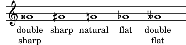
See also
alteration, semitone, whole tone.
| [ << Musical terms A-Z ] | [Top][Contents] | [ Duration names notes and rests >> ] |
| [ < accidental ] | [ Up: Musical terms A-Z ] | [ al fine > ] |
1.8 adagio
ES: adagio, lento, I: adagio, F: adagio, lent, D: Adagio, Langsam, NL: adagio, DK: adagio, S: adagio, FI: adagio, hitaasti.
[Italian: ‘comfortable, easy’]
- Slow tempo, slower – especially in even meter – than andante and faster than largo.
- A movement in slow tempo, especially the second (slow) movement of sonatas, symphonies, etc.
See also
| [ << Musical terms A-Z ] | [Top][Contents] | [ Duration names notes and rests >> ] |
| [ < adagio ] | [ Up: Musical terms A-Z ] | [ al niente > ] |
1.9 al fine
[Italian: ‘to the end’]
In an instruction such as D.C. al Fine, indicates that the performance should continue to the point marked Fine.
See also
| [ << Musical terms A-Z ] | [Top][Contents] | [ Duration names notes and rests >> ] |
| [ < al fine ] | [ Up: Musical terms A-Z ] | [ alla breve > ] |
1.10 al niente
ES: al niente, I: al niente, F: al niente, en mourant, D: al niente, ins Nichts (verschwinden), NL: ?, DK: al niente, S: ?, FI: häviten olemattomiin.
[Italian: ‘to nothing’] Used with decrescendo to indicate that the sound should fade away to nothing.
Al niente is indicated by circling the tip of the hairpin:
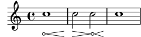
or with the actual phrase al niente:
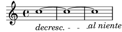
Since one does not crescendo to nothing, it is not correct to use al niente with crescendo. Instead, one should use dal niente (from nothing).
See also
crescendo, dal niente, decrescendo, hairpin.
| [ << Musical terms A-Z ] | [Top][Contents] | [ Duration names notes and rests >> ] |
| [ < al niente ] | [ Up: Musical terms A-Z ] | [ allegro > ] |
1.11 alla breve
ES: alla breve, I: alla breve, F: alla breve, à la brève, D: Allabreve, alla breve NL: ?, DK: alla breve, S: ?, FI: ?.
[Italian: ‘on the breve’] Twice as fast as the notation indicates.
Also called in cut time. The name derives from mensural notation, where the tactus (or beat) is counted on the semibreve (the modern whole note). Counting ‘on the breve’ shifts the tactus to the next longest note value, which (in modern usage) effectively halves all note values.
In mensural notation, breves and semibreves can have a ternary relationship, in which case alla breve means thrice (not twice) as fast. In practice, this complication may not have mattered, since Gaffurius’s system of multiplex proportions makes it easy to explicitly state which proportion is needed.
See also
breve, hemiola, mensural notation, note value, proportion, whole note.
| [ << Musical terms A-Z ] | [Top][Contents] | [ Duration names notes and rests >> ] |
| [ < alla breve ] | [ Up: Musical terms A-Z ] | [ alteration > ] |
1.12 allegro
ES: allegro, rápido, I: allegro, F: allegro, gaiement, D: Allegro, Schnell, Fröhlich, Lustig, NL: allegro, DK: allegro, S: allegro, FI: allegro, nopeasti.
[Italian: ‘cheerful’] Quick tempo. Also used as a title for pieces in a quick tempo, especially the first and last movements of a sonata.
See also
| [ << Musical terms A-Z ] | [Top][Contents] | [ Duration names notes and rests >> ] |
| [ < allegro ] | [ Up: Musical terms A-Z ] | [ alto > ] |
1.13 alteration
ES: alteración, I: alterazione, F: altération, D: Alteration, NL: verhoging of verlaging, DK: Forandring, S: Förändring, FI: muunnettu.
An alteration is the modification, raising or lowering, of a note’s pitch. It is established by an accidental.
See also
| [ << Musical terms A-Z ] | [Top][Contents] | [ Duration names notes and rests >> ] |
| [ < alteration ] | [ Up: Musical terms A-Z ] | [ alto clef > ] |
1.14 alto
ES: alto, I: contralto, F: alto, D: Alt, NL: alt, DK: alt, S: alt, FI: altto, matala naisääni.
A female voice of low range (contralto). Originally the alto was a high male voice (hence the name), which by castration or the use of falsetto reached the height of the natural female voice. This type of voice is also known as countertenor.
See also
| [ << Musical terms A-Z ] | [Top][Contents] | [ Duration names notes and rests >> ] |
| [ < alto ] | [ Up: Musical terms A-Z ] | [ ambitus > ] |
1.15 alto clef
ES: clave de do en tercera, I: chiave di contralto, F: clef d’ut troisième ligne, D: Altschlüssel, Bratschenschlüssel, NL: alt sleutel, DK: altnøgle, S: altklav, FI: alttoavain.
C clef setting middle C on the middle line of the staff.
See also
| [ << Musical terms A-Z ] | [Top][Contents] | [ Duration names notes and rests >> ] |
| [ < alto clef ] | [ Up: Musical terms A-Z ] | [ anacrusis > ] |
1.16 ambitus
ES: ámbito, I: ambitus, F: ambitus, tessiture, D: Ambitus, NL: ambitus, DK: ambitus, toneomfang S: ambitus, FI: ambitus, ääniala, soitinala.
[Latin: past participle of ambire, ‘to go around’; plural: ambitus] Denotes a range of pitches for a given voice in a part of music. It may also denote the pitch range that a musical instrument is capable of playing. Sometimes anglicized to ambit (pl. ambits).
See also
No cross-references.
| [ << Musical terms A-Z ] | [Top][Contents] | [ Duration names notes and rests >> ] |
| [ < ambitus ] | [ Up: Musical terms A-Z ] | [ ancient minor scale > ] |
1.17 anacrusis
ES: anacrusa, I: anacrusi, F: anacrouse, levée, D: Auftakt, NL: opmaat, DK: optakt, S: upptakt, FI: kohotahti.
An anacrusis (also known as pickup or upbeat) is an incomplete measure of music before a section of music. It also refers to the initial note(s) of a melody occurring in that incomplete measure.
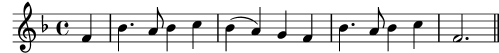
See also
| [ << Musical terms A-Z ] | [Top][Contents] | [ Duration names notes and rests >> ] |
| [ < anacrusis ] | [ Up: Musical terms A-Z ] | [ andante > ] |
1.18 ancient minor scale
ES: escala menor natural, I: scala minore naturale, F: forme du mode mineur ancien, troisème mode, mode hellénique, D: reines Moll, natürliches Moll, NL: authentieke mineurtoonladder, DK: ren mol, S: ren mollskala, FI: luonnollinen molliasteikko.
Also called ‘natural minor scale’.
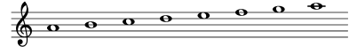
See also
| [ << Musical terms A-Z ] | [Top][Contents] | [ Duration names notes and rests >> ] |
| [ < ancient minor scale ] | [ Up: Musical terms A-Z ] | [ appoggiatura > ] |
1.19 andante
ES: andante, I: andante, F: andante, allant, D: Andante, Gehend, NL: andante, DK: andante, S: andante, FI: andante, käyden.
[Italian: present participle of andare, ‘to walk’]
Walking tempo/character.
See also
No cross-references.
| [ << Musical terms A-Z ] | [Top][Contents] | [ Duration names notes and rests >> ] |
| [ < andante ] | [ Up: Musical terms A-Z ] | [ arpeggio > ] |
1.20 appoggiatura
ES: apoyatura, I: appoggiatura, F: appoggiature, (port de voix), D: Vorschlag, Vorhalt NL: (korte) voorslag, DK: forslag, S: förslag, FI: appoggiatura, etuhele.
Ornamental note, usually a second, that is melodically connected with the main note following it. In music before the 19th century appoggiature were usually performed on the beat, after that mostly before the beat. While the short appoggiatura is performed as a short note regardless of the duration of the main note the duration of the long appoggiatura is proportional to that of the main note.
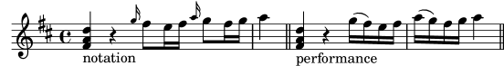
An appoggiatura may have more notes preceding the main note.
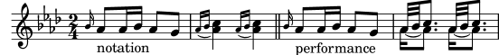
See also
No cross-references.
| [ << Musical terms A-Z ] | [Top][Contents] | [ Duration names notes and rests >> ] |
| [ < appoggiatura ] | [ Up: Musical terms A-Z ] | [ arrastre > ] |
1.21 arpeggio
ES: arpegio, I: arpeggio, F: arpège, D: Arpeggio, Akkordbrechungen, gebrochener Akkord, NL: gebroken akoord, DK: arpeggio, akkordbrydning, S: arpeggio, FI: arpeggio, murtosointu.
[Italian: ‘harp-like, played like a harp’]
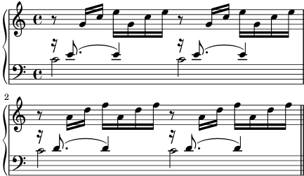
See also
No cross-references.
| [ << Musical terms A-Z ] | [Top][Contents] | [ Duration names notes and rests >> ] |
| [ < arpeggio ] | [ Up: Musical terms A-Z ] | [ articulation > ] |
1.22 arrastre
ES: arrastre, I: ?, F: ?, D: ?, NL: ?, DK: ?, S: ?, FI: ?.
A playing technique for flamenco guitar where the the right hand ring finger drags across the strings from highest to lowest, creating a rapid arpeggio.
Frequently used in the Tarantas flamenco style.
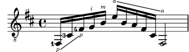
See also
| [ << Musical terms A-Z ] | [Top][Contents] | [ Duration names notes and rests >> ] |
| [ < arrastre ] | [ Up: Musical terms A-Z ] | [ ascending interval > ] |
1.23 articulation
ES: articulación, I: articolazione, F: articulation, D: Artikulation, NL: articulatie, DK: artikulation, S: ?, FI: artikulaatio, ilmaisu.
Articulation refers to notation which indicates how a note or notes should be played. Slurs, accents, staccato, and legato are all examples of articulation.
See also
No cross-references.
| [ << Musical terms A-Z ] | [Top][Contents] | [ Duration names notes and rests >> ] |
| [ < articulation ] | [ Up: Musical terms A-Z ] | [ augmentation > ] |
1.24 ascending interval
ES: intervalo ascendente, I: intervallo ascendente, F: intervalle ascendant, D: aufsteigendes Intervall, NL: stijgend interval, DK: stigende interval, S: stigande intervall, FI: nouseva intervalli.
A distance between a starting lower note and a higher ending note.
See also
No cross-references.
| [ << Musical terms A-Z ] | [Top][Contents] | [ Duration names notes and rests >> ] |
| [ < ascending interval ] | [ Up: Musical terms A-Z ] | [ augmented interval > ] |
1.25 augmentation
ES: aumentación, I: aumentazione, F: augmentation, D: Augmentation, NL: Augmentatio, DK: Forøgelse, S: Förstoring, FI: aika-arvojen pidentäminen.
This is a placeholder for augmentation (wrt mensural notation).
See also
diminution, mensural notation.
| [ << Musical terms A-Z ] | [Top][Contents] | [ Duration names notes and rests >> ] |
| [ < augmentation ] | [ Up: Musical terms A-Z ] | [ autograph > ] |
1.26 augmented interval
ES: intervalo aumentado, I: intervallo aumentato, F: intervalle augmenté, D: übermäßiges Intervall, NL: overmatig interval, DK: forstørret interval, S: överstigande intervall, FI: ylinouseva intervalli.
See also
| [ << Musical terms A-Z ] | [Top][Contents] | [ Duration names notes and rests >> ] |
| [ < augmented interval ] | [ Up: Musical terms A-Z ] | [ B > ] |
1.27 autograph
ES: manuscrito, I: autografo, F: manuscrit, autographe, D: Autograph, Handschrift, NL: manuscript, DK: håndskrift, autograf, S: handskrift, FI: käsinkirjoitettu nuotti.
- A manuscript written in the composer’s own hand.
- Music prepared for photoreproduction by freehand drawing, with the aid of a straightedge ruler and T-square only, which attempts to emulate engraving. This required more skill than did engraving.
See also
No cross-references.
| [ << Musical terms A-Z ] | [Top][Contents] | [ Duration names notes and rests >> ] |
| [ < autograph ] | [ Up: Musical terms A-Z ] | [ backfall > ] |
1.28 B
- ES: si
- I: si
- F: si
- D: H, h
- NL: b
- DK: h
- S: h
- FI: H, h
See also
H, Pitch names.
| [ << Musical terms A-Z ] | [Top][Contents] | [ Duration names notes and rests >> ] |
| [ < B ] | [ Up: Musical terms A-Z ] | [ bar > ] |
1.29 backfall
See also
| [ << Musical terms A-Z ] | [Top][Contents] | [ Duration names notes and rests >> ] |
| [ < backfall ] | [ Up: Musical terms A-Z ] | [ bar line > ] |
1.30 bar
See also
| [ << Musical terms A-Z ] | [Top][Contents] | [ Duration names notes and rests >> ] |
| [ < bar ] | [ Up: Musical terms A-Z ] | [ baritone > ] |
1.31 bar line
ES: barra, línea divisoria, I: stanghetta, barra (di divisione), F: barre (de mesure), D: Taktstrich, NL: maatstreep, DK: taktstreg, S: taktstreck, FI: tahtiviiva.
A vertical line through the staff (or through multiple staves) that separates measures. Used very infrequently during the Renaissance (mostly in secular music, or in sacred music to indicate congruences between parts in otherwise-unmetered music).
See also
| [ << Musical terms A-Z ] | [Top][Contents] | [ Duration names notes and rests >> ] |
| [ < bar line ] | [ Up: Musical terms A-Z ] | [ baritone clef > ] |
1.32 baritone
ES: barítono, I: baritono, F: bariton, D: Bariton, NL: bariton, DK: baryton, S: baryton, FI: baritoni, keskikorkuinen miesääni.
The male voice intermediate in pitch between the bass and the tenor.
See also
| [ << Musical terms A-Z ] | [Top][Contents] | [ Duration names notes and rests >> ] |
| [ < baritone ] | [ Up: Musical terms A-Z ] | [ bass > ] |
1.33 baritone clef
ES: clave de fa en tercera, I: chiave di baritono, F: clef d’ut cinquième ligne, clef de fa troisième, D: Baritonschlüssel, NL: baritonsleutel, DK: barytonnøgle, S: barytonklav, FI: baritoniavain.
C or F clef setting middle C on the upper staff line.
See also
| [ << Musical terms A-Z ] | [Top][Contents] | [ Duration names notes and rests >> ] |
| [ < baritone clef ] | [ Up: Musical terms A-Z ] | [ bass clef > ] |
1.34 bass
ES: bajo, I: basso, F: basse, D: Bass, NL: bas, DK: bas, S: bas, FI: basso, matala miesääni.
- The lowest male voice.
- Sometimes, especially in jazz music, used as an abbreviation for double bass.
See also
| [ << Musical terms A-Z ] | [Top][Contents] | [ Duration names notes and rests >> ] |
| [ < bass ] | [ Up: Musical terms A-Z ] | [ beam > ] |
1.35 bass clef
ES: clave de fa en cuarta, I: chiave di basso, F: clef de fa quatrième ligne, D: Bassschlüssel, NL: bassleutel, DK: basnøgle, S: basklav, FI: bassoavain.
A clef setting with middle C on the first top ledger line.
See also
| [ << Musical terms A-Z ] | [Top][Contents] | [ Duration names notes and rests >> ] |
| [ < bass clef ] | [ Up: Musical terms A-Z ] | [ beat > ] |
1.36 beam
ES: barra (de corcheas), I: coda, F: ligature, barre (de croches), D: Balken, NL: waardestreep, DK: bjælke, S: balk, FI: palkki.
Line connecting a series of notes (shorter than a quarter note). The number of beams determines the note value of the connected notes.
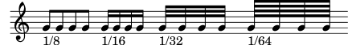
See also
| [ << Musical terms A-Z ] | [Top][Contents] | [ Duration names notes and rests >> ] |
| [ < beam ] | [ Up: Musical terms A-Z ] | [ beat repeat > ] |
1.37 beat
ES: tiempo, parte (de compás) I: tempi, F: temps, battue D: Takt, Taktschlag, Schlag, Zeit (im Takt), NL: tel, DK: (takt)slag, S: taktslag, FI: aika-arvo.
Note value used for counting, most often half-, fourth-, and eighth notes. The base counting value and the number of them in each measure is indicated at the start of the music by the time signature.
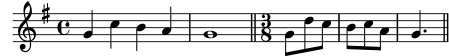
See also
| [ << Musical terms A-Z ] | [Top][Contents] | [ Duration names notes and rests >> ] |
| [ < beat ] | [ Up: Musical terms A-Z ] | [ bind > ] |
1.38 beat repeat
See also
| [ << Musical terms A-Z ] | [Top][Contents] | [ Duration names notes and rests >> ] |
| [ < beat repeat ] | [ Up: Musical terms A-Z ] | [ brace > ] |
1.39 bind
See also
tie.
| [ << Musical terms A-Z ] | [Top][Contents] | [ Duration names notes and rests >> ] |
| [ < bind ] | [ Up: Musical terms A-Z ] | [ bracket > ] |
1.40 brace
ES: llave, corchete, I: graffa, F: accolade, D: (geschwungene) Klammer, Akkolade, NL: accolade, teksthaak, DK: klamme, S: klammer, FI: yhdistävä sulkumerkki.
Symbol at the start of a system connecting staves.
Curly braces are used for connecting piano staves, and sometimes for connecting the staves of like instruments in an orchestral score when written on different staves (e.g., first and second flutes):
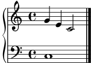
Angular brackets for connecting parts in an orchestral or choral score:
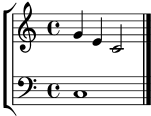
See also
No cross-references.
| [ << Musical terms A-Z ] | [Top][Contents] | [ Duration names notes and rests >> ] |
| [ < brace ] | [ Up: Musical terms A-Z ] | [ brass > ] |
1.41 bracket
ES: corchete, I: parentesi quadra, F: crochet, D: eckige Klammer, NL: ?, DK: kantet parentes, S: ?, FI: sulkumerkki.
See also
| [ << Musical terms A-Z ] | [Top][Contents] | [ Duration names notes and rests >> ] |
| [ < bracket ] | [ Up: Musical terms A-Z ] | [ breath mark > ] |
1.42 brass
ES: metales, I: ottoni, D: Blechbläser, NL: koper (blazers), F: cuivres, DK: messingblæsere, S: brassinstrument, mässingsinstrument, FI: vaskisoitin.
A family of blown musical instruments made of brass, all using a cup formed mouth piece. The brass instruments commonly used in a symphony orchestra are trumpet, trombone, French horn, and tuba. In marching bands, sousaphones and contrabass bugles are common.
See also
No cross-references.
| [ << Musical terms A-Z ] | [Top][Contents] | [ Duration names notes and rests >> ] |
| [ < brass ] | [ Up: Musical terms A-Z ] | [ breve > ] |
1.43 breath mark
ES: respiración, I: respiro, F: respiration, D: Atemzeichen, Trennungszeichen, NL: repercussieteken, DK: vejrtrækningstegn, S: andningstecken, FI: hengitysmerkki.
Indication of where to breathe in vocal and wind instrument parts.
See also
| [ << Musical terms A-Z ] | [Top][Contents] | [ Duration names notes and rests >> ] |
| [ < breath mark ] | [ Up: Musical terms A-Z ] | [ C > ] |
1.44 breve
- US: breve, double-whole note
- ES: cuadrada, breve
- I: breve
- F: brève
- D: Brevis
- NL: brevis
- DK: brevis
- S: brevis
- FI: brevis, kaksoiskokonuotti
Note value: twice the length of a whole note (semibreve).
Mainly used in music from before 1650. In mensural notation, it was a note of fairly short duration—hence the name, which is Latin for ‘short’ or ‘of short duration’.
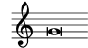
See also
mensural notation, note value, semibreve.
| [ << Musical terms A-Z ] | [Top][Contents] | [ Duration names notes and rests >> ] |
| [ < breve ] | [ Up: Musical terms A-Z ] | [ C clef > ] |
1.45 C
- ES: do
- I: do
- F: ut, do
- D: C, c
- NL: c
- DK: c
- S: c
- FI: C, c
See also
| [ << Musical terms A-Z ] | [Top][Contents] | [ Duration names notes and rests >> ] |
| [ < C ] | [ Up: Musical terms A-Z ] | [ cadence > ] |
1.46 C clef
ES: clave de do, I: chiave di do, F: clef d’ut, D: C-Schlüssel, NL: C-sleutel, DK: c-nøgle, S: c-klav, FI: C-avain.
Clef symbol indicating the position of the middle C. Used on all note lines.
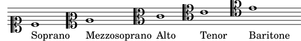
See also
No cross-references.
| [ << Musical terms A-Z ] | [Top][Contents] | [ Duration names notes and rests >> ] |
| [ < C clef ] | [ Up: Musical terms A-Z ] | [ cadenza > ] |
1.47 cadence
ES: cadencia, I: cadenza, F: cadence, D: Kadenz, NL: cadens, DK: kadence, S: kadens, FI: kadenssi, lopuke.
See also
harmonic cadence, functional harmony.
| [ << Musical terms A-Z ] | [Top][Contents] | [ Duration names notes and rests >> ] |
| [ < cadence ] | [ Up: Musical terms A-Z ] | [ caesura > ] |
1.48 cadenza
ES: cadenza, I: cadenza, F: cadence, D: Kadenz, NL: cadens, DK: kadence, S: kadens, FI: kadenssi, lopuke.
An extended, improvisatory style section inserted near the end of movement. The purpose of a cadenza is to give singers or players a chance to exhibit their technical skill and – not last – their ability to improvise. Since the middle of the 19th century, however, most cadenzas have been written down by the composer.
See also
No cross-references.
| [ << Musical terms A-Z ] | [Top][Contents] | [ Duration names notes and rests >> ] |
| [ < cadenza ] | [ Up: Musical terms A-Z ] | [ canon > ] |
1.49 caesura
ES: cesura, I: cesura, F: césure, D: Zäsur, NL: ?, DK: cæsur, S: ?, FI: välimerkki.
[Latin: from the supine of caedere ‘to cut down’]
The break between two musical phrases, sometimes (but not always) marked by a rest or a breath mark.
See also
| [ << Musical terms A-Z ] | [Top][Contents] | [ Duration names notes and rests >> ] |
| [ < caesura ] | [ Up: Musical terms A-Z ] | [ cent > ] |
1.50 canon
ES: canon, I: canone, F: canon, D: Kanon, NL: canon, DK: kanon, S: kanon, FI: kaanon, tarkka jäljittely.
See also
| [ << Musical terms A-Z ] | [Top][Contents] | [ Duration names notes and rests >> ] |
| [ < canon ] | [ Up: Musical terms A-Z ] | [ central C > ] |
1.51 cent
ES: cent, I: cent, F: cent, D: Cent, NL: cent, DK: cent, S: cent, FI: sentti, puolisävelaskeleen sadasosa tasavireisessä viritysjärjestelmässä.
Logarithmic unit of measuring pitch differences. 1 cent is 1/1200 of an octave (1/100 of an equally tempered semitone).
See also
| [ << Musical terms A-Z ] | [Top][Contents] | [ Duration names notes and rests >> ] |
| [ < cent ] | [ Up: Musical terms A-Z ] | [ chord > ] |
1.52 central C
See also
| [ << Musical terms A-Z ] | [Top][Contents] | [ Duration names notes and rests >> ] |
| [ < central C ] | [ Up: Musical terms A-Z ] | [ chord grid > ] |
1.53 chord
ES: acorde, I: accordo, F: accord, D: Akkord, NL: akkoord, DK: akkord, S: ackord, FI: sointu.
Two or more tones sounding simultaneously. In traditional European music the base chord is a triad consisting of two thirds. Major (major + minor third) as well as minor (minor + major third) chords may be extended with more thirds. Four-tone seventh chords and five-tone ninth major chords are most often used as dominants (functional harmony). Chords having no third above the lower notes to define their mood are a special case called ‘open chords’. The lack of the middle third means their quality is ambivalent – neither major nor minor.
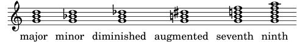
See also
functional harmony, interval, inversion, quality, third.
| [ << Musical terms A-Z ] | [Top][Contents] | [ Duration names notes and rests >> ] |
| [ < chord ] | [ Up: Musical terms A-Z ] | [ chromatic scale > ] |
1.54 chord grid
ES: ?, I: ?, F: grille d’accords, D: ?, NL: ?, DK: ?, S: ?, FI: ?.
Chord grids notate chords in a visual way by placing them in squares. They are used for jazz music, mainly in France.
![[image of music]](6a/lily-87c87b81.png)
See also
| [ << Musical terms A-Z ] | [Top][Contents] | [ Duration names notes and rests >> ] |
| [ < chord grid ] | [ Up: Musical terms A-Z ] | [ chromaticism > ] |
1.55 chromatic scale
ES: escala cromática, I: scala cromatica, F: gamme chromatique, D: chromatische Tonleiter, NL: chromatische toonladder, DK: kromatisk skala, S: kromatisk skala, FI: kromaattinen asteikko.
A scale consisting of all 12 semitones.
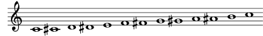
See also
| [ << Musical terms A-Z ] | [Top][Contents] | [ Duration names notes and rests >> ] |
| [ < chromatic scale ] | [ Up: Musical terms A-Z ] | [ church mode > ] |
1.56 chromaticism
ES: cromatismo, I: cromatismo, F: chromatisme, D: Chromatik, NL: chromatiek, DK: kromatik, S: kromatik, FI: kromatiikka.
Using tones extraneous to a diatonic scale (minor, major).
See also
| [ << Musical terms A-Z ] | [Top][Contents] | [ Duration names notes and rests >> ] |
| [ < chromaticism ] | [ Up: Musical terms A-Z ] | [ clef > ] |
1.57 church mode
ES: modo eclesiástico, I: modo ecclesiastico, F: mode ecclésiastique, mode d’église, D: Kirchentonart, NL: kerktoonladder, DK: kirketoneart, S: kyrkotonart, FI: moodi, kirkkosävellaji.
See also
| [ << Musical terms A-Z ] | [Top][Contents] | [ Duration names notes and rests >> ] |
| [ < church mode ] | [ Up: Musical terms A-Z ] | [ cluster > ] |
1.58 clef
ES: clave, I: chiave, F: clé, clef, D: Schlüssel, Notenschlüssel, NL: sleutel, DK: nøgle, S: klav, FI: avain, nuottiavain.
The clef indicates which lines of the staff correspond to which pitches. The three clef symbols in common use are:
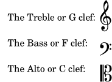
Imagine a large staff of 11 lines centered on middle C, sometimes called a ‘grand staff’, with the bottom line representing low G and the top line high F:
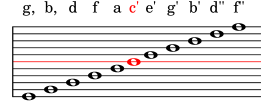
Staves of five lines are usually used, and the clef superimposed on them indicates which five lines have been selected from this grand staff. For example, the treble or G clef indicates that the top five lines have been selected:
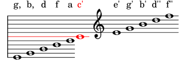
The ‘curl’ of the G clef is centered on the line that represents the pitch G.
In the same way, the bass or F clef indicates that the bottom five lines have been selected from the grand staff, and the alto or C clef indicates the middle five lines have been selected. This relationship is shown below, where the notes show an arpeggio on a C major chord.
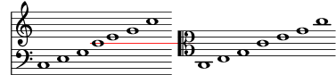
See also
| [ << Musical terms A-Z ] | [Top][Contents] | [ Duration names notes and rests >> ] |
| [ < clef ] | [ Up: Musical terms A-Z ] | [ comma > ] |
1.59 cluster
ES: racimo, I: cluster, F: cluster, D: Cluster, NL: ?, DK: cluster, S: ?, FI: klusteri, cluster.
A cluster is a range of simultaneously sounding pitches that may change over time. The set of available pitches to apply usually depends on the acoustic source. Thus, in piano music, a cluster typically consists of a continuous range of the semitones as provided by the piano’s fixed set of a chromatic scale. In choral music, each singer of the choir typically may sing an arbitrary pitch within the cluster’s range that is not bound to any diatonic, chromatic or other scale. In electronic music, a cluster (theoretically) may even cover a continuous range of pitches, thus resulting in colored noise, such as pink noise.
Clusters can be denoted in the context of ordinary staff notation by engraving simple geometrical shapes that replace ordinary notation of notes. Ordinary notes as musical events specify starting time and duration of pitches; however, the duration of a note is expressed by the shape of the note head rather than by the horizontal graphical extent of the note symbol. In contrast, the shape of a cluster geometrically describes the development of a range of pitches (vertical extent) over time (horizontal extent). Still, the geometrical shape of a cluster covers the area in which any single pitch contained in the cluster would be notated as an ordinary note.
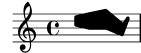
See also
No cross-references.
| [ << Musical terms A-Z ] | [Top][Contents] | [ Duration names notes and rests >> ] |
| [ < cluster ] | [ Up: Musical terms A-Z ] | [ common meter > ] |
1.60 comma
ES: coma, comma, I: comma, F: comma, D: Komma, NL: komma, DK: komma, S: komma, FI: komma, korvinkuultava ero äänenkorkeudessa.
Difference in pitch between a note derived from pure tuning and the same note derived from some other tuning method.
See also
didymic comma, Pythagorean comma, syntonic comma, temperament.
| [ << Musical terms A-Z ] | [Top][Contents] | [ Duration names notes and rests >> ] |
| [ < comma ] | [ Up: Musical terms A-Z ] | [ Common Practice Period > ] |
1.61 common meter
Another name for common time.
See also
| [ << Musical terms A-Z ] | [Top][Contents] | [ Duration names notes and rests >> ] |
| [ < common meter ] | [ Up: Musical terms A-Z ] | [ common time > ] |
1.62 Common Practice Period
ES: ?, I: Periodo di pratica comune, F: musique classique moderne, D: Kunstmusik, NL: ?, DK: kunstmusik, S: ?, FI: ?.
This is a stub for Common Practice Period (CPP).
See also
Note names in other languages.
| [ << Musical terms A-Z ] | [Top][Contents] | [ Duration names notes and rests >> ] |
| [ < Common Practice Period ] | [ Up: Musical terms A-Z ] | [ complement > ] |
1.63 common time
ES: compasillo, I: tempo semplice, F: mesure à 4/4, D: 4/4-Takt, NL: ?, DK: 4/4-takt, S: ?, FI: C-merkintä.
4/4 time. The symbol, which resembles a capital letter C, comes from mensural notation.
See also
| [ << Musical terms A-Z ] | [Top][Contents] | [ Duration names notes and rests >> ] |
| [ < common time ] | [ Up: Musical terms A-Z ] | [ compound interval > ] |
1.64 complement
ES: intervalo invertido, I: rivolto, F: intervalle complémentaire, D: Komplementärintervall, NL: complementair interval, DK: komplementærinterval, S: komplementärintervall (?), FI: täydentävä intervalli.
See also
| [ << Musical terms A-Z ] | [Top][Contents] | [ Duration names notes and rests >> ] |
| [ < complement ] | [ Up: Musical terms A-Z ] | [ compound meter > ] |
1.65 compound interval
ES: intervalo compuesto, I: intervallo composto, F: intervalle composé, D: weites Intervall, NL: samengesteld interval, DK: sammensat interval, S: sammansatt intervall, FI: oktaavia laajempi intervalli.
Intervals larger than an octave.
See also
| [ << Musical terms A-Z ] | [Top][Contents] | [ Duration names notes and rests >> ] |
| [ < compound interval ] | [ Up: Musical terms A-Z ] | [ compound time > ] |
1.66 compound meter
ES: compás compuesto, compás de subdivisión ternaria, I: tempo composto, F: mesure composée, D: Taktart mit dreizeitigen Taktteilen, NL: ?, DK: sammensat taktart, S: ?, FI: kolmijakoinen tahtilaji.
A meter that includes a triplet subdivision within the beat, such as 6/8, 9/8, 12/8.
See also
| [ << Musical terms A-Z ] | [Top][Contents] | [ Duration names notes and rests >> ] |
| [ < compound meter ] | [ Up: Musical terms A-Z ] | [ concert pitch > ] |
1.67 compound time
ES: compás compuesto, compás de amalgama (def. 2), I: tempo misto, F: temps composé, D: zusammengesetzte Taktart, NL: ?, DK: sammensat takt, S: ?, FI: yhdistetty tahtilajiosoitus.
- A meter that includes a triplet subdivision within the beat: see compound meter.
- A time signature that additively combines two or more unequal meters, e.g., ‘3/8 + 2/8’ instead of ‘5/8’. Sometimes called additive time signatures.
\relative c' { \key f \major \time #'((3 . 8) (2 . 8) (3 . 8)) c8 d e f4 d8 c bes c4 g'8 e c f4. \bar "||" }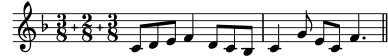
See also
compound meter, meter, polymetric time signature.
| [ << Musical terms A-Z ] | [Top][Contents] | [ Duration names notes and rests >> ] |
| [ < compound time ] | [ Up: Musical terms A-Z ] | [ conjunct movement > ] |
1.68 concert pitch
ES: en Do, tono de concierto, I: intonazione reale, F: tonalité de concert, en ut, D: Kammerton, in C, NL: ?, DK: ikke-transponerende, S: ?, FI: konserttikorkeus.
The pitch at which the piano and other nontransposing instruments play: such instruments are said to be ‘in C’. The following list includes some (but not all) instruments that play in concert pitch:
| Woodwinds | Strings |
|---|---|
|
|
Instruments that play ‘in C’ but in a different octave than what is written are, technically speaking, transposing instruments:
- piccolo (plays an octave higher than written)
- celesta (plays an octave higher than written)
- classical guitar (plays an octave lower than written)
- double bass (plays an octave lower than written)
See also
| [ << Musical terms A-Z ] | [Top][Contents] | [ Duration names notes and rests >> ] |
| [ < concert pitch ] | [ Up: Musical terms A-Z ] | [ consonance > ] |
1.69 conjunct movement
ES: movimiento conjunto, I: moto congiunto, F: mouvement conjoint, D: schrittweise, stufenweise Bewegung, NL: stapsgewijze, trapsgewijze beweging, DK: trinvis bevægelse, S: stegvis rörelse, FI: asteittainen liike.
Progressing melodically by intervals of a second, as contrasted with disjunct movement.
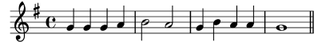
See also
| [ << Musical terms A-Z ] | [Top][Contents] | [ Duration names notes and rests >> ] |
| [ < conjunct movement ] | [ Up: Musical terms A-Z ] | [ contralto > ] |
1.70 consonance
ES: consonancia, I: consonanza, F: consonance, consonnance, D: Konsonanz, NL: consonant, DK: konsonans, S: konsonans, FI: konsonanssi, sopusointi.
See also
| [ << Musical terms A-Z ] | [Top][Contents] | [ Duration names notes and rests >> ] |
| [ < consonance ] | [ Up: Musical terms A-Z ] | [ copying music > ] |
1.71 contralto
ES: contralto, I: contralto, F: contralto, D: Alt, NL: contralto, DK: alt, S: alt, FI: kontra-altto.
See also
alto.
| [ << Musical terms A-Z ] | [Top][Contents] | [ Duration names notes and rests >> ] |
| [ < contralto ] | [ Up: Musical terms A-Z ] | [ counterpoint > ] |
1.72 copying music
A music copyist did fast freehand scores and parts on preprinted staff lines for performance. Some of their conventions (e.g., the placement of note heads on stems) varied slightly from those of engravers. Some of their working methods were superior and could well be adopted by music typesetters.
See also
No cross-references.
| [ << Musical terms A-Z ] | [Top][Contents] | [ Duration names notes and rests >> ] |
| [ < copying music ] | [ Up: Musical terms A-Z ] | [ countertenor > ] |
1.73 counterpoint
ES: contrapunto, I: contrappunto, F: contrepoint, D: Kontrapunkt, NL: contrapunt, DK: kontrapunkt, S: kontrapunkt, FI: kontrapunkti, ääni ääntä vastaan.
From Latin punctus contra punctum, note against note. The combination into a single musical fabric of lines or parts which have distinct melodic significance. A frequently used polyphonic technique is imitation, in its strictest form found in the canon needing only one part to be written down while the other parts are performed with a given displacement. Imitation is also the contrapuntal technique used in the fugue which, since the music of the baroque era, has been one of the most popular polyphonic composition methods.
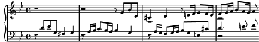
See also
No cross-references.
| [ << Musical terms A-Z ] | [Top][Contents] | [ Duration names notes and rests >> ] |
| [ < counterpoint ] | [ Up: Musical terms A-Z ] | [ crescendo > ] |
1.74 countertenor
ES: contratenor, I: controtenore, F: contre-tenor, D: Countertenor, Kontratenor, NL: contratenor, DK: kontratenor, S: kontratenor, counter tenor, FI: kontratenori.
See also
| [ << Musical terms A-Z ] | [Top][Contents] | [ Duration names notes and rests >> ] |
| [ < countertenor ] | [ Up: Musical terms A-Z ] | [ cue-notes > ] |
1.75 crescendo
ES: crescendo, I: crescendo, F: crescendo, D: Crescendo, lauter werden, NL: crescendo, DK: crescendo, S: crescendo, FI: cresendo, voimistuen.
Increasing volume. Indicated by a rightwards opening horizontal wedge (hairpin) or the abbreviation cresc.
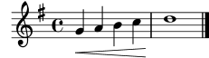
See also
| [ << Musical terms A-Z ] | [Top][Contents] | [ Duration names notes and rests >> ] |
| [ < crescendo ] | [ Up: Musical terms A-Z ] | [ custos > ] |
1.76 cue-notes
ES: notas guía, I: notine, F: petites notes précédant l’entrée d’un instrument, réplique, « à défaut », D: Stichnoten, NL: stichnoten, DK: stiknoder, S: inprickningar, FI: vihjenuotit.
Notes belonging to one part printed in another to hint when to start playing. Usually printed in a smaller type.
See also
Compare: ossia.
| [ << Musical terms A-Z ] | [Top][Contents] | [ Duration names notes and rests >> ] |
| [ < cue-notes ] | [ Up: Musical terms A-Z ] | [ cut time > ] |
1.77 custos
ES: custos, I: custos, guida, F: guidon, D: Notenzeiger, Custos, NL: ?, DK: custos, S: ?, FI: vihje.
A custos (plural: custodes) is a staff symbol that appears at the end of a staff line with monophonic musical contents (i.e., with a single voice). It anticipates the pitch of the first note of the following line and thus helps the player or singer to manage line breaks during performance, which enhances the readability of a score.
Custodes were frequently used in music notation until the 16th century. There were different appearances for different notation styles. Nowadays, they have survived only in special forms of musical notation such as the Editio Vaticana, dating from the beginning of the 20th century
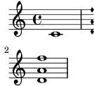
See also
No cross-references.
| [ << Musical terms A-Z ] | [Top][Contents] | [ Duration names notes and rests >> ] |
| [ < custos ] | [ Up: Musical terms A-Z ] | [ D > ] |
1.78 cut time
See also
| [ << Musical terms A-Z ] | [Top][Contents] | [ Duration names notes and rests >> ] |
| [ < cut time ] | [ Up: Musical terms A-Z ] | [ da capo > ] |
1.79 D
- ES: re
- I: re
- F: ré
- D: D, d
- NL: d
- DK: d
- S: d
- FI: D, d
See also
| [ << Musical terms A-Z ] | [Top][Contents] | [ Duration names notes and rests >> ] |
| [ < D ] | [ Up: Musical terms A-Z ] | [ dal niente > ] |
1.80 da capo
ES: da capo, I: da capo, F: da capo, depuis le commencement, D: da capo, von Anfang, NL: da capo, DK: da capo, S: da capo, FI: da capo, alusta.
Abbreviated D.C. Indicates that the piece is to be repeated from the beginning to the end or to a certain place marked Fine.
See also
| [ << Musical terms A-Z ] | [Top][Contents] | [ Duration names notes and rests >> ] |
| [ < da capo ] | [ Up: Musical terms A-Z ] | [ dal segno > ] |
1.81 dal niente
ES: dal niente, de la nada, I: dal niente, F: partant de rien, D: aus dem Nichts (kommen), dal niente, NL: ?, DK: dal niente, S: ?, FI: tyhjästä ilmaantuen.
[Italian: ‘from nothing’] Used with crescendo to indicate that the sound should gradually increase from nothing.
See also
| [ << Musical terms A-Z ] | [Top][Contents] | [ Duration names notes and rests >> ] |
| [ < dal niente ] | [ Up: Musical terms A-Z ] | [ decrescendo > ] |
1.82 dal segno
ES: dal segno, I: dal segno, F: dal segno, depuis le signe, D: dal segno, ab dem Zeichen, NL: dal segno, DK: dal segno, S: dal segno, FI: dal segno, lähtien merkistä.
Abbreviated D.S. Repetition, not from the beginning, but from another place frequently near the beginning marked by a sign (segno):
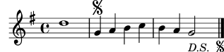
See also
| [ << Musical terms A-Z ] | [Top][Contents] | [ Duration names notes and rests >> ] |
| [ < dal segno ] | [ Up: Musical terms A-Z ] | [ descending interval > ] |
1.83 decrescendo
ES: decrescendo, I: decrescendo, D: Decrescendo, leiser werden, NL: decrescendo, DK: decrescendo, S: decrescendo, FI: decresendo, hiljentyen.
Decreasing tone volume. Indicated by a leftwards opening horizontal wedge (hairpin) or the abbreviation decresc.
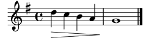
See also
crescendo, diminuendo, hairpin.
| [ << Musical terms A-Z ] | [Top][Contents] | [ Duration names notes and rests >> ] |
| [ < decrescendo ] | [ Up: Musical terms A-Z ] | [ diatonic scale > ] |
1.84 descending interval
ES: intervalo descendente, I: intervallo discendente, F: intervalle descendant, D: fallendes Intervall, absteigendes Intervall, NL: dalend interval, DK: faldende interval, S: fallande intervall, FI: laskeva intervalli.
A distance between a starting higher note and a lower ending note.
See also
No cross-references.
| [ << Musical terms A-Z ] | [Top][Contents] | [ Duration names notes and rests >> ] |
| [ < descending interval ] | [ Up: Musical terms A-Z ] | [ didymic comma > ] |
1.85 diatonic scale
ES: escala diatónica, I: scala diatonica, F: gamme diatonique, D: diatonische Tonleiter, NL: diatonische toonladder, DK: diatonisk skala, S: diatonisk skala, FI: diatoninen asteikko.
A scale consisting of 5 whole tones and 2 semitones (S). Scales played on the white keys of a piano keyboard are diatonic. These scales are sometimes called, somewhat inaccurately, ‘church modes’).
These modes are used in Gregorian chant and in pre-baroque early music but also to some extent in newer jazz music.
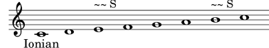
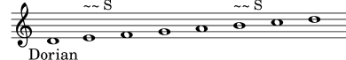
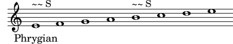
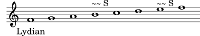
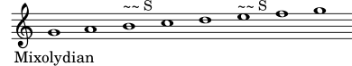
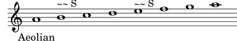
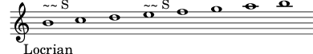
From the beginning of the 17th century the scales used in European compositional music are primarily the major and the minor scales. In the harmonic minor scale type an augmented second (A) occurs between the 6th and 7th tone.
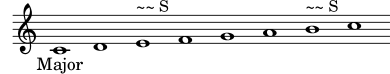
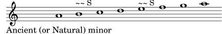
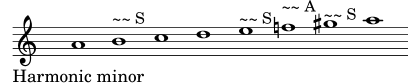
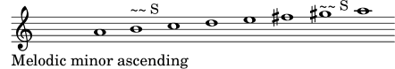
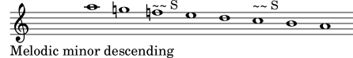
See also
| [ << Musical terms A-Z ] | [Top][Contents] | [ Duration names notes and rests >> ] |
| [ < diatonic scale ] | [ Up: Musical terms A-Z ] | [ diminished interval > ] |
1.86 didymic comma
See also
| [ << Musical terms A-Z ] | [Top][Contents] | [ Duration names notes and rests >> ] |
| [ < didymic comma ] | [ Up: Musical terms A-Z ] | [ diminuendo > ] |
1.87 diminished interval
ES: intervalo disminuido, I: intervallo diminuito, F: intervalle diminué, D: vermindertes Intervall, NL: verminderd interval, DK: formindsket interval, S: förminskat intervall, FI: vähennetty intervalli.
See also
| [ << Musical terms A-Z ] | [Top][Contents] | [ Duration names notes and rests >> ] |
| [ < diminished interval ] | [ Up: Musical terms A-Z ] | [ diminution > ] |
1.88 diminuendo
ES: diminuendo, I: diminuendo, F: diminuendo, en diminuant, D: diminuendo, NL: diminuendo, DK: diminuendo, S: diminuendo, FI: diminuendo, hiljentyen.
Abbreviated dim. It indicates a decrease in tone volume.
See also
| [ << Musical terms A-Z ] | [Top][Contents] | [ Duration names notes and rests >> ] |
| [ < diminuendo ] | [ Up: Musical terms A-Z ] | [ direct > ] |
1.89 diminution
ES: disminución, I: diminuzione, F: diminution, D: Diminution, NL: ?, DK: diminution, S: ?, FI: aika-arvojen tihennys.
This is a stub for diminution (wrt mensural notation).
See also
augmentation, mensural notation.
| [ << Musical terms A-Z ] | [Top][Contents] | [ Duration names notes and rests >> ] |
| [ < diminution ] | [ Up: Musical terms A-Z ] | [ disjunct movement > ] |
1.90 direct
ES: directo, I: ?, F: direct, D: Weiser, Zeiger, NL: ?, DK: custos, S: ?, FI: suora.
See also
| [ << Musical terms A-Z ] | [Top][Contents] | [ Duration names notes and rests >> ] |
| [ < direct ] | [ Up: Musical terms A-Z ] | [ dissonance > ] |
1.91 disjunct movement
ES: movimiento disjunto, I: moto disgiunto, F: mouvement disjoint, D: sprunghafte Bewegung, NL: sprongsgewijze beweging, DK: springende bevægelse, S: hoppande rörelse, FI: melodian hyppivä liike.
Progressing melodically by intervals larger than a major second, as contrasted with conjunct movement.
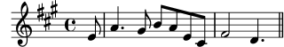
See also
| [ << Musical terms A-Z ] | [Top][Contents] | [ Duration names notes and rests >> ] |
| [ < disjunct movement ] | [ Up: Musical terms A-Z ] | [ dissonant interval > ] |
1.92 dissonance
Another name for dissonant interval.
See also
| [ << Musical terms A-Z ] | [Top][Contents] | [ Duration names notes and rests >> ] |
| [ < dissonance ] | [ Up: Musical terms A-Z ] | [ divisio > ] |
1.93 dissonant interval
ES: intervalo disonante, disonancia, I: intervallo dissonante, dissonanza, F: intervalle dissonant, dissonance, D: Dissonanz, NL: dissonant interval, dissonant, DK: dissonerende interval, dissonans, S: dissonans, FI: dissonanssi, dissonoiva intervalli, riitasointi.
See also
| [ << Musical terms A-Z ] | [Top][Contents] | [ Duration names notes and rests >> ] |
| [ < dissonant interval ] | [ Up: Musical terms A-Z ] | [ doit > ] |
1.94 divisio
ES: división, I: divisio, F: division, D: Divisio, NL: ?, DK: divisio, S: ?, FI: jäsennysmerkki.
[Latin: ‘division’; pl. divisiones] In Gregorian chant, a vertical stroke through part or all of the staff that serves to structure a chant into phrases and sections. There are four types:
- divisio minima, a short pause
- divisio maior, a medium pause
- divisio maxima, a long pause
- finalis, to indicate the end of a chant, or the end of a section in a long antiphonal or responsorial chant.
TODO: musical example here?
See also
No cross-references.
| [ << Musical terms A-Z ] | [Top][Contents] | [ Duration names notes and rests >> ] |
| [ < divisio ] | [ Up: Musical terms A-Z ] | [ dominant > ] |
1.95 doit
ES: elevación [de tono], I: portamento indeterminato verso l’alto/l’acuto, F: saut, D: Glissando aufwärts zu unbestimmter Tonhöhe, NL: ?, DK: glissando stigende til udefineret tonehøjde, S: ?, FI: nousu.
Indicator for an indeterminately rising pitch bend. Compare with glissando, which has determinate starting and ending pitches.
See also
| [ << Musical terms A-Z ] | [Top][Contents] | [ Duration names notes and rests >> ] |
| [ < doit ] | [ Up: Musical terms A-Z ] | [ dominant ninth chord > ] |
1.96 dominant
ES: dominante, I: dominante, F: dominante, D: Dominante, NL: dominant, DK: dominant, S: dominant, FI: dominantti, huippusointu.
The fifth scale degree in functional harmony.
See also
functional harmony, scale degree.
| [ << Musical terms A-Z ] | [Top][Contents] | [ Duration names notes and rests >> ] |
| [ < dominant ] | [ Up: Musical terms A-Z ] | [ dominant seventh chord > ] |
1.97 dominant ninth chord
ES: acorde de novena de dominante, I: accordo di nona di dominante, F: accord de neuvième de dominante, D: Dominantnonenakkord, NL: dominant noon akkoord, DK: dominantnoneakkord, S: dominantnonackord, FI: dominanttinoonisointu.
See also
| [ << Musical terms A-Z ] | [Top][Contents] | [ Duration names notes and rests >> ] |
| [ < dominant ninth chord ] | [ Up: Musical terms A-Z ] | [ dorian mode > ] |
1.98 dominant seventh chord
ES: acorde de séptima de dominante, I: accordo di settima di dominante, F: accord de septième de dominante, D: Dominantseptakkord, NL: dominant septiem akkoord, DK: dominantseptimakkord, S: dominantseptimackord, FI: dominanttiseptimisointu.
See also
| [ << Musical terms A-Z ] | [Top][Contents] | [ Duration names notes and rests >> ] |
| [ < dominant seventh chord ] | [ Up: Musical terms A-Z ] | [ dot (augmentation dot) > ] |
1.99 dorian mode
ES: modo dórico, I: modo dorico, F: mode dorien, D: dorisch, dorischer Kirchenton, NL: dorische toonladder, DK: dorisk skala, S: dorisk tonart, FI: doorinen moodi.
See also
| [ << Musical terms A-Z ] | [Top][Contents] | [ Duration names notes and rests >> ] |
| [ < dorian mode ] | [ Up: Musical terms A-Z ] | [ dotted note > ] |
1.100 dot (augmentation dot)
ES: puntillo, I: punto (di valore), F: point, D: Punkt (Verlängerungspunkt), NL: punt, DK: punkt, S: punkt, FI: piste.
See also
| [ << Musical terms A-Z ] | [Top][Contents] | [ Duration names notes and rests >> ] |
| [ < dot (augmentation dot) ] | [ Up: Musical terms A-Z ] | [ double appoggiatura > ] |
1.101 dotted note
ES: nota con puntillo, I: nota puntata, F: note pointée, D: punktierte Note, NL: gepuncteerde noot, DK: punkteret node, S: punkterad not, FI: pisteellinen nuotti.
See also
| [ << Musical terms A-Z ] | [Top][Contents] | [ Duration names notes and rests >> ] |
| [ < dotted note ] | [ Up: Musical terms A-Z ] | [ double bar line > ] |
1.102 double appoggiatura
ES: apoyatura doble, I: appoggiatura doppia, F: appoggiature double, D: doppelter Vorschlag, NL: dubbele voorslag, DK: dobbelt forslag, S: dubbelslag, FI: kaksoisappoggiatura, kaksoisetuhele.
See also
| [ << Musical terms A-Z ] | [Top][Contents] | [ Duration names notes and rests >> ] |
| [ < double appoggiatura ] | [ Up: Musical terms A-Z ] | [ double dotted note > ] |
1.103 double bar line
ES: doble barra, I: doppia barra, F: double barre, D: Doppelstrich, NL: dubbele maatstreep, DK: dobbeltstreg, S: dubbelstreck, FI: kaksoistahtiviiva.
Indicates the end of a section within a movement.
See also
No cross-references.
| [ << Musical terms A-Z ] | [Top][Contents] | [ Duration names notes and rests >> ] |
| [ < double bar line ] | [ Up: Musical terms A-Z ] | [ double flat > ] |
1.104 double dotted note
ES: nota con doble puntillo, I: nota doppiamente puntata, F: note doublement pointée, D: doppelt punktierte Note, NL: dubbelgepuncteerde noot, DK: dobbeltpunkteret node, S: dubbelpunkterad not, FI: kaksoispisteellinen nuotti.
See also
| [ << Musical terms A-Z ] | [Top][Contents] | [ Duration names notes and rests >> ] |
| [ < double dotted note ] | [ Up: Musical terms A-Z ] | [ double sharp > ] |
1.105 double flat
ES: doble bemol, I: doppio bemolle, F: double bémol, D: Doppel-B, NL: dubbelmol, DK: dobbelt-b, S: dubbelbe, FI: kaksoisalennusmerkki.
See also
| [ << Musical terms A-Z ] | [Top][Contents] | [ Duration names notes and rests >> ] |
| [ < double flat ] | [ Up: Musical terms A-Z ] | [ double time signature > ] |
1.106 double sharp
ES: doble sostenido, I: doppio diesis, F: double dièse, D: Doppelkreuz, NL: dubbelkruis, DK: dobbeltkryds, S: dubbelkors, FI: kaksoisylennysmerkki.
See also
| [ << Musical terms A-Z ] | [Top][Contents] | [ Duration names notes and rests >> ] |
| [ < double sharp ] | [ Up: Musical terms A-Z ] | [ double trill > ] |
1.107 double time signature
ES: compás polimétrico, I: indicazione di tempo doppia/polimetrica, F: mesure composée, métrique composée, D: zusammengesetzte Taktart, NL: ?, DK: sammensat taktart, S: ?, FI: kaksois-aika-arvomerkintä.
See also
| [ << Musical terms A-Z ] | [Top][Contents] | [ Duration names notes and rests >> ] |
| [ < double time signature ] | [ Up: Musical terms A-Z ] | [ duple meter > ] |
1.108 double trill
ES: trino doble, I: doppio trillo, F: trille double, D: Doppeltriller, NL: dubbele triller, DK: dobbelttrille, S: dubbeldrill, FI: kaksoistrilli.
A simultaneous trill on two notes, usually in the distance of a third.
See also
No cross-references.
| [ << Musical terms A-Z ] | [Top][Contents] | [ Duration names notes and rests >> ] |
| [ < double trill ] | [ Up: Musical terms A-Z ] | [ duplet > ] |
1.109 duple meter
ES: tiempo binario, I: tempo binario, F: métrique binaire, D: in zwei, gerader Takt, NL: tweedelige maatsoort, DK: todelt takt, S: tvåtakt, FI: kaksoistempo.
See also
| [ << Musical terms A-Z ] | [Top][Contents] | [ Duration names notes and rests >> ] |
| [ < duple meter ] | [ Up: Musical terms A-Z ] | [ duration > ] |
1.110 duplet
ES: dosillo, I: duina, F: duolet, D: Duole, NL: duool, DK: duol, S: duol, FI: duoli.
See also
| [ << Musical terms A-Z ] | [Top][Contents] | [ Duration names notes and rests >> ] |
| [ < duplet ] | [ Up: Musical terms A-Z ] | [ dynamics > ] |
1.111 duration
ES: duración, I: durata, F: durée, D: Dauer, Länge, NL: duur, lengte, DK: varighed, S: tonlängd, FI: kesto, aika-arvo.
See also
| [ << Musical terms A-Z ] | [Top][Contents] | [ Duration names notes and rests >> ] |
| [ < duration ] | [ Up: Musical terms A-Z ] | [ E > ] |
1.112 dynamics
ES: dinámica, matices, I: dinamica, F: nuances, D: Dynamik, Lautstärke, NL: ?, DK: dynamik, S: ?, FI: äänen voimakkuusvaihtelu, dynamiikka.
The aspect of music relating to degrees of loudness, or changes from one degree to another. The terms, abbreviations, and symbols used to indicate this information are called dynamic marks.
See also
piano, forte, crescendo, decrescendo, diminuendo.
| [ << Musical terms A-Z ] | [Top][Contents] | [ Duration names notes and rests >> ] |
| [ < dynamics ] | [ Up: Musical terms A-Z ] | [ ecclesiastical mode > ] |
1.113 E
- ES: mi
- I: mi
- F: mi
- D: E, e
- NL: e
- DK: e
- S: e
- FI: E, e
See also
| [ << Musical terms A-Z ] | [Top][Contents] | [ Duration names notes and rests >> ] |
| [ < E ] | [ Up: Musical terms A-Z ] | [ eighth note > ] |
1.114 ecclesiastical mode
See also
| [ << Musical terms A-Z ] | [Top][Contents] | [ Duration names notes and rests >> ] |
| [ < ecclesiastical mode ] | [ Up: Musical terms A-Z ] | [ eighth rest > ] |
1.115 eighth note
- UK: quaver
- ES: corchea
- I: croma
- F: croche
- D: Achtel, Achtelnote
- NL: achtste noot
- DK: ottendedelsnode
- S: åttondelsnot
- FI: kahdeksasosanuotti
See also
| [ << Musical terms A-Z ] | [Top][Contents] | [ Duration names notes and rests >> ] |
| [ < eighth note ] | [ Up: Musical terms A-Z ] | [ elision > ] |
1.116 eighth rest
- UK: quaver rest
- ES: silencio de corchea
- I: pausa di croma
- F: demi-soupir
- D: Achtelpause
- NL: achtste rust
- DK: ottendedelspause
- S: åttonddelspaus
- FI: kahdeksasosatauko
See also
| [ << Musical terms A-Z ] | [Top][Contents] | [ Duration names notes and rests >> ] |
| [ < eighth rest ] | [ Up: Musical terms A-Z ] | [ embellishment > ] |
1.117 elision
ES: sinalefa, I: elisione, F: élision, D: Elision, NL: ?, DK: elision, sammentrækning, S: ?, FI: tavujen yhdistäminen yhteen ääneen.
More properly synalepha [New Lat. > Gr. συναλοιφη, from Greek συναλοιφην ‘to smear together’].
The singing of several syllables on a single note. Elision may be indicated by a lyric tie, which looks like (and serves the same function) as a musical tie.
See also
| [ << Musical terms A-Z ] | [Top][Contents] | [ Duration names notes and rests >> ] |
| [ < elision ] | [ Up: Musical terms A-Z ] | [ engraving > ] |
1.118 embellishment
See also
| [ << Musical terms A-Z ] | [Top][Contents] | [ Duration names notes and rests >> ] |
| [ < embellishment ] | [ Up: Musical terms A-Z ] | [ enharmonic > ] |
1.119 engraving
ES: grabado, I: incisione, F: gravure, D: Notenstich, Notendruck NL: steken, DK: nodestik, S: nottryck, FI: painatus.
Engraving means incising or etching a metal plate for printing. Photoengraving means drawing music with ink in a manner similar to drafting or engineering drawing, using similar tools.
The traditional process of music printing is done through cutting in a plate of metal. Now also the term for the art of music typesetting.
See also
No cross-references.
| [ << Musical terms A-Z ] | [Top][Contents] | [ Duration names notes and rests >> ] |
| [ < engraving ] | [ Up: Musical terms A-Z ] | [ equal temperament > ] |
1.120 enharmonic
ES: enarmónico, I: enarmonico, F: enharmonique, D: enharmonisch, NL: enharmonisch, DK: enharmonisk, S: enharmonisk, FI: enharmoninen.
Two notes, intervals, or scales are enharmonic if they have different names but equal pitch.
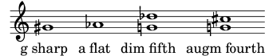
See also
No cross-references.
| [ << Musical terms A-Z ] | [Top][Contents] | [ Duration names notes and rests >> ] |
| [ < enharmonic ] | [ Up: Musical terms A-Z ] | [ expression mark > ] |
1.121 equal temperament
ES: temperamento igual, I: temperamento equabile, F: tempérament égal, D: gleichschwebende Stimmung, NL: gelijkzwevende temperatuur, DK: ligesvævende temperatur, S: liksvävande temperatur, FI: tasavireinen.
A tuning system that divides the octave into 12 equal semitones (each of which is precisely equal to 100 cents).
See also
| [ << Musical terms A-Z ] | [Top][Contents] | [ Duration names notes and rests >> ] |
| [ < equal temperament ] | [ Up: Musical terms A-Z ] | [ extender line > ] |
1.122 expression mark
ES: expresión, I: segno d’espressione, F: signe d’expression, indication de nuance, D: Vortragszeichen, NL: voordrachtsteken, DK: foredragsbetegnelse, S: föredragsbeteckning, FI: nyanssiosoitus, esitysmerkki.
Performance indications concerning:
- volume, dynamics (for example, forte, crescendo),
- tempo (for example, andante, allegro).
See also
allegro, andante, crescendo, forte.
| [ << Musical terms A-Z ] | [Top][Contents] | [ Duration names notes and rests >> ] |
| [ < expression mark ] | [ Up: Musical terms A-Z ] | [ F > ] |
1.123 extender line
ES: línea de extensión [de melisma, de bajo cifrado, etc.], I: linea di estensione, F: ligne d’extension [de mélisme, de basse chiffrée, etc.], D: Fülllinie, NL: ?, DK: melismelinje, S: ?, FI: pidennysviiva.
The generic term (in LilyPond) for a line (or dash) of arbitrary length that extends text (without indicating the musical function of that text).
Used in many contexts, for example:
- In vocal music to indicate the syllable for a melisma. Called ‘extension’ in the Dolmetsch Online Music Dictionary.
- In figured bass to indicate that:
- − The extended note should be held through a change in harmony, when applied to one figure –OR–
- − The chord thus represented should be held above a moving bass line, when applied to more than one figure.
- − These uses were not completely standardized, and some composers used a single extender line to indicate the latter case.
- In string music to indicate that all notes in the passage thus indicated should be played on the same string. On the violin, for example, a series of notes to be played on the G string would be indicated sul G, another series to be played on the D string would be indicated sul D, and so on.
- With an octave mark to indicate that a passage is to be played higher or lower by the given number of octaves.
See also
melisma, sul G, thorough bass, octave mark, octave marking.
| [ << Musical terms A-Z ] | [Top][Contents] | [ Duration names notes and rests >> ] |
| [ < extender line ] | [ Up: Musical terms A-Z ] | [ F clef > ] |
1.124 F
- ES: fa
- I: fa
- F: fa
- D: F, f
- NL: f
- DK: f
- S: f
- FI: F, f
See also
| [ << Musical terms A-Z ] | [Top][Contents] | [ Duration names notes and rests >> ] |
| [ < F ] | [ Up: Musical terms A-Z ] | [ fall > ] |
1.125 F clef
ES: clave de fa, I: chiave di fa, F: clef de fa, D: F-Schlüssel, NL: F-sleutel, DK: F-nøgle, S: f-klav, FI: F-avain.
The position between the dots of the key symbol is the line of the F below central C. Used on the third, fourth and fifth note line. A digit 8 above the clef symbol indicates that the notes must be played an octave higher (for example, bass recorder) while 8 below the clef symbol indicates playing an octave lower (for example, on the Double Bass).
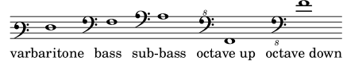
See also
| [ << Musical terms A-Z ] | [Top][Contents] | [ Duration names notes and rests >> ] |
| [ < F clef ] | [ Up: Musical terms A-Z ] | [ feathered beam > ] |
1.126 fall
ES: caída [de tono], I: portamento indeterminato verso il basso/il grave, F: chute, D: Glissando abwärts zu unbestimmter Tonhöhe, NL: ?, DK: glissando faldende til udefineret tonehøjde, S: ?, FI: lasku.
Indicator for an indeterminately falling pitch bend. Compare with glissando, which has determinate starting and ending pitches.
See also
| [ << Musical terms A-Z ] | [Top][Contents] | [ Duration names notes and rests >> ] |
| [ < fall ] | [ Up: Musical terms A-Z ] | [ fermata > ] |
1.127 feathered beam
ES: barra progresiva, I: travatura convergente/divergente, F: ligature en soufflet, lien de croches en soufflet, D: gespreizter Balken, NL: ?, DK: udspredte bjælker, fjerformede bjælker, S: ?, FI: kiilapalkki.
A type of beam used to indicate that a small group of notes should be played at an increasing or decreasing tempo – depending on the direction of ‘feathering’ – but without changing the overall tempo of the piece.
See also
Internals Reference: Manual beams.
| [ << Musical terms A-Z ] | [Top][Contents] | [ Duration names notes and rests >> ] |
| [ < feathered beam ] | [ Up: Musical terms A-Z ] | [ fifth > ] |
1.128 fermata
ES: calderón, I: corona, F: point d’orgue, point d’arrêt, D: Fermate, NL: fermate, DK: fermat, S: fermat, FI: fermaatti, pidäke.
Prolonged note or rest of indefinite duration.
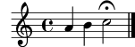
See also
No cross-references.
| [ << Musical terms A-Z ] | [Top][Contents] | [ Duration names notes and rests >> ] |
| [ < fermata ] | [ Up: Musical terms A-Z ] | [ figured bass > ] |
1.129 fifth
ES: quinta, I: quinta, F: quinte, D: Quint, Quinte, NL: kwint, DK: kvint, S: kvint, FI: kvintti.
See also
| [ << Musical terms A-Z ] | [Top][Contents] | [ Duration names notes and rests >> ] |
| [ < fifth ] | [ Up: Musical terms A-Z ] | [ fine > ] |
1.130 figured bass
ES: bajo cifrado, I: basso continuo, basso numerato, F: basse chiffrée, basse continue, D: Generalbass, bezifferter Bass, NL: basso continuo, becijferde bas DK: generalbas, S: generalbas, FI: kenraalibasso, numeroitu basso.
Also called ‘thorough bass’.
A method of indicating an accompaniment part by the bass notes only, together with figures designating the chief intervals and chords to be played above the bass notes.
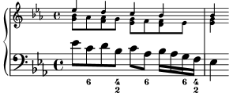
See also
| [ << Musical terms A-Z ] | [Top][Contents] | [ Duration names notes and rests >> ] |
| [ < figured bass ] | [ Up: Musical terms A-Z ] | [ fingering > ] |
1.131 fine
[Italian: ‘end’]
Indicates the end of the piece when it is not the written end of the music.
See also
| [ << Musical terms A-Z ] | [Top][Contents] | [ Duration names notes and rests >> ] |
| [ < fine ] | [ Up: Musical terms A-Z ] | [ flag > ] |
1.132 fingering
ES: digitación, I: diteggiatura, F: doigté, D: Fingersatz, NL: vingerzetting, DK: fingersætning, S: fingersättning, FI: sormitus.
Figures to the side or above the note that methodically indicate which fingers to use while playing a passage.
See also
No cross-references.
| [ << Musical terms A-Z ] | [Top][Contents] | [ Duration names notes and rests >> ] |
| [ < fingering ] | [ Up: Musical terms A-Z ] | [ flageolet > ] |
1.133 flag
ES: corchete, I: coda (uncinata), bandiera, F: crochet, D: Fahne, Fähnchen, NL: vlaggetje, DK: fane, S: flagga, FI: lippu, viiri.
Ornament at the end of the stem of a note used for notes with values less than a quarter note. The number of flags determines the note value.
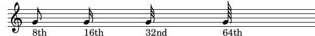
See also
| [ << Musical terms A-Z ] | [Top][Contents] | [ Duration names notes and rests >> ] |
| [ < flag ] | [ Up: Musical terms A-Z ] | [ flat > ] |
1.134 flageolet
ES: armónico, I: armonico, F: flageolet, D: Flageolett, NL: ?, DK: flageolet, S: ?, FI: flageolet-ääni.
An articulation for string players that means the note or passage is to be played in harmonics.
Also:
- A duct flute similar to the recorder.
- An organ stop of flute scale at 1’ or 2’ pitch.
See also
| [ << Musical terms A-Z ] | [Top][Contents] | [ Duration names notes and rests >> ] |
| [ < flageolet ] | [ Up: Musical terms A-Z ] | [ forefall > ] |
1.135 flat
ES: bemol, I: bemolle, F: bémol, D: B, NL: mol, DK: b, S: beförtecken, FI: alennusmerkki.
See also
| [ << Musical terms A-Z ] | [Top][Contents] | [ Duration names notes and rests >> ] |
| [ < flat ] | [ Up: Musical terms A-Z ] | [ forte > ] |
1.136 forefall
See also
| [ << Musical terms A-Z ] | [Top][Contents] | [ Duration names notes and rests >> ] |
| [ < forefall ] | [ Up: Musical terms A-Z ] | [ fourth > ] |
1.137 forte
ES: forte, fuerte, I: forte, F: forte, D: forte, laut, NL: forte, DK: forte, S: forte, FI: forte, voimakkaasti.
[Italian: ‘loud’]
Abbreviated f. Variants include:
- mezzo forte, medium loud (notated mf),
- fortissimo, very loud (notated ff).
See also
No cross-references.
| [ << Musical terms A-Z ] | [Top][Contents] | [ Duration names notes and rests >> ] |
| [ < forte ] | [ Up: Musical terms A-Z ] | [ Frenched score > ] |
1.138 fourth
ES: cuarta, I: quarta, F: quarte, D: Quart, Quarte, NL: kwart, DK: kvart, S: kvart, FI: kvartti.
See also
| [ << Musical terms A-Z ] | [Top][Contents] | [ Duration names notes and rests >> ] |
| [ < fourth ] | [ Up: Musical terms A-Z ] | [ Frenched staff > ] |
1.139 Frenched score
ES: partitura a la francesa, I: partitura senza i righi vuoti, F: partition à la française, D: Orchesterpartitur ohne leere Systeme, NL: ?, DK: partitur uden tomme systemer, S: ?, FI: partituuri ilman tyhjiä nuottiviivastoja.
A ‘condensed’ score, produced by omitting staves for instruments that are not playing at the moment, and by moving up additional systems from following pages to take up the space thus liberated, which reduces the total number of pages used to print the work.
The specific rules for ‘frenching’ a score differ from publisher to publisher. If you are producing scores for eventual publication by a commercial publisher, you may wish to procure a copy of their style manual.
See also
| [ << Musical terms A-Z ] | [Top][Contents] | [ Duration names notes and rests >> ] |
| [ < Frenched score ] | [ Up: Musical terms A-Z ] | [ Frenched staves > ] |
1.140 Frenched staff
ES: pentagrama a la francesa, I: rigo temporaneo, F: portée à la française, D: zeitweiliges Notensystem, NL: ?, DK: midlertidigt system, ossia-noder, S: ?, FI: karsittu nuotinnus.
[Pl. Frenched staves] Analogous to Frenched scores (q.v), a Frenched staff has unneeded measures or sections removed. This is useful for producing, for example, an ossia staff.
See also
| [ << Musical terms A-Z ] | [Top][Contents] | [ Duration names notes and rests >> ] |
| [ < Frenched staff ] | [ Up: Musical terms A-Z ] | [ fugue > ] |
1.141 Frenched staves
Plural of Frenched staff.
| [ << Musical terms A-Z ] | [Top][Contents] | [ Duration names notes and rests >> ] |
| [ < Frenched staves ] | [ Up: Musical terms A-Z ] | [ functional harmony > ] |
1.142 fugue
ES: fuga, I: fuga, F: fugue, D: Fuge, NL: fuga, DK: fuga, S: fuga, FI: fuuga.
See also
| [ << Musical terms A-Z ] | [Top][Contents] | [ Duration names notes and rests >> ] |
| [ < fugue ] | [ Up: Musical terms A-Z ] | [ G > ] |
1.143 functional harmony
ES: armonía funcional, I: armonia funzionale, F: étude des functions, D: Funktionslehre, NL: functionele harmonie, DK: funktionsanalyse, funktionsharmonik, S: funktionslära, FI: harmoniajärjestelmä.
A system of harmonic analysis.
It is based on the idea that, in a given key, there are only three functionally different chords: tonic (T, the chord on the first note of the scale), subdominant (S, the chord on the fourth note), and dominant (D, the chord on the fifth note). Others are considered to be variants of the base chords. A few examples among many others are the tonic, subdominant or dominant of the parallel minor scale, or the incomplete dominant seventh chord.
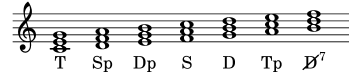
See also
dominant, incomplete dominant seventh chord, subdominant, tonic.
| [ << Musical terms A-Z ] | [Top][Contents] | [ Duration names notes and rests >> ] |
| [ < functional harmony ] | [ Up: Musical terms A-Z ] | [ G clef > ] |
1.144 G
- ES: sol
- I: sol
- F: sol
- D: G, g
- NL: g
- DK: g
- S: g
- FI: G, g
See also
| [ << Musical terms A-Z ] | [Top][Contents] | [ Duration names notes and rests >> ] |
| [ < G ] | [ Up: Musical terms A-Z ] | [ glissando > ] |
1.145 G clef
ES: clave de sol, I: chiave di sol, F: clef de sol, D: G-Schlüssel, Violinschlüssel, NL: G-sleutel, DK: g-nøgle, S: g-klav, FI: G-avain.
A clef symbol that indicates G above middle C. Used on the first and second note lines. A digit 8 above the clef symbol indicates that the notes must be played an octave higher while 8 below the clef symbol indicates playing or singing an octave lower (used most frequently to notate the tenor part in modern choral scores).
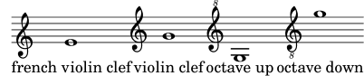
See also
No cross-references.
| [ << Musical terms A-Z ] | [Top][Contents] | [ Duration names notes and rests >> ] |
| [ < G clef ] | [ Up: Musical terms A-Z ] | [ grace notes > ] |
1.146 glissando
ES: glissando, I: glissando, F: glissando, D: Glissando, NL: glissando, DK: glissando, S: glissando, FI: glissando, liukuen.
Letting the pitch slide fluently from one note to the other.
See also
No cross-references.
| [ << Musical terms A-Z ] | [Top][Contents] | [ Duration names notes and rests >> ] |
| [ < glissando ] | [ Up: Musical terms A-Z ] | [ grand staff > ] |
1.147 grace notes
ES: notas de adorno, I: abbellimenti, F: ornement, fioriture, D: Verzierungen, Vorschläge, Vorschlagsnoten, NL: versieringen, DK: forsiringer, S: ornament, FI: korunuotit.
Notes printed in small types to indicate that their time values are not counted in the rhythm of the bar.
See also
acciaccatura, appoggiatura, mordent, ornament.
| [ << Musical terms A-Z ] | [Top][Contents] | [ Duration names notes and rests >> ] |
| [ < grace notes ] | [ Up: Musical terms A-Z ] | [ grave > ] |
1.148 grand staff
ES: sistema de piano, I: accollatura, F: système [de portées], accolade, D: Akkolade, Klaviersystem, NL: piano systeem, DK: klaversystem, S: ackolad, böjd klammer, FI: kaksoisnuottiviivasto.
A combination of two staves with a brace. Usually used for piano music.
See also
| [ << Musical terms A-Z ] | [Top][Contents] | [ Duration names notes and rests >> ] |
| [ < grand staff ] | [ Up: Musical terms A-Z ] | [ gruppetto > ] |
1.149 grave
ES: grave, I: grave, F: grave, lent, D: Grave, Langsam, NL: grave, ernstig, DK: grave, S: grave, FI: grave, raskaasti.
[Italian] Slow, solemn.
See also
No cross-references.
| [ << Musical terms A-Z ] | [Top][Contents] | [ Duration names notes and rests >> ] |
| [ < grave ] | [ Up: Musical terms A-Z ] | [ H > ] |
1.150 gruppetto
See also
turn.
| [ << Musical terms A-Z ] | [Top][Contents] | [ Duration names notes and rests >> ] |
| [ < gruppetto ] | [ Up: Musical terms A-Z ] | [ hairpin > ] |
1.151 H
- ES: si
- I: si
- F: si
- D: H, h
- NL: b
- DK: h
- S: h
- FI: H, h
Letter name used for B natural in German and Scandinavian usage. In the standard usage of these countries, B means B flat.
See also
Pitch names, B.
| [ << Musical terms A-Z ] | [Top][Contents] | [ Duration names notes and rests >> ] |
| [ < H ] | [ Up: Musical terms A-Z ] | [ half note > ] |
1.152 hairpin
Graphical version of the crescendo and decrescendo dynamic marks.
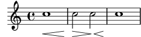
See also
| [ << Musical terms A-Z ] | [Top][Contents] | [ Duration names notes and rests >> ] |
| [ < hairpin ] | [ Up: Musical terms A-Z ] | [ half rest > ] |
1.153 half note
- UK: minim,
- ES: blanca,
- I: minima,
- F: blanche,
- D: Halbe, halbe Note,
- NL: halve noot,
- DK: halvnode,
- S: halvnot,
- FI: puolinuotti.
See also
| [ << Musical terms A-Z ] | [Top][Contents] | [ Duration names notes and rests >> ] |
| [ < half note ] | [ Up: Musical terms A-Z ] | [ harmonic cadence > ] |
1.154 half rest
- UK: minim rest,
- ES: silencio de blanca,
- I: pausa di minima,
- F: demi-pause,
- D: halbe Pause,
- NL: halve, rust,
- DK: halvnodespause,
- S: halvpaus,
- FI: puolitauko.
See also
| [ << Musical terms A-Z ] | [Top][Contents] | [ Duration names notes and rests >> ] |
| [ < half rest ] | [ Up: Musical terms A-Z ] | [ harmonics > ] |
1.155 harmonic cadence
ES: cadencia (armónica), I: cadenza (armonica), F: cadence harmonique, D: Schlusskadenz, NL: harmonische cadens, DK: harmonisk kadence, S: (harmonisk) kadens, FI: harmoninen kadenssi.
A sequence of chords that terminates a musical phrase or section.
See also
| [ << Musical terms A-Z ] | [Top][Contents] | [ Duration names notes and rests >> ] |
| [ < harmonic cadence ] | [ Up: Musical terms A-Z ] | [ harmony > ] |
1.156 harmonics
ES: armónicos, sonidos aflautados, I: armonici, F: flageolet, sons harmoniques, D: Flageolett-Töne, NL: ?, DK: flageolettoner, S: ?, FI: harmoniset äänet, huiluäänet.
The general class of pitches produced by sounding the second or higher harmonic of a tone producer: string, column of air, and so on.
On stringed instruments, these pitches sound rather flute-like; hence, their name in languages other than English. They are produced by lightly touching the string at a node for the desired mode of vibration while it is being bowed or plucked.
For instruments of the violin family, there are two types of harmonics: natural harmonics, which are those played on the open string; and artificial harmonics, which are produced on stopped strings.
See also
No cross-references.
| [ << Musical terms A-Z ] | [Top][Contents] | [ Duration names notes and rests >> ] |
| [ < harmonics ] | [ Up: Musical terms A-Z ] | [ hemiola > ] |
1.157 harmony
ES: armonía, I: armonia, F: harmonie, D: Harmonie, Zusammenklang, NL: harmonie, DK: samklang, S: samklang, FI: harmonia, yhteissointi.
Tones sounding simultaneously. Two note harmonies fall into the categories consonances and dissonances.
Consonances:
Dissonances:
For harmony that uses three or more notes, see chord.
See also
| [ << Musical terms A-Z ] | [Top][Contents] | [ Duration names notes and rests >> ] |
| [ < harmony ] | [ Up: Musical terms A-Z ] | [ high bass clef > ] |
1.158 hemiola
ES: hemiolia, I: emiolia, (rarely hemiola or emiola), F: hémiole, D: Hemiole, NL: ?, DK: hæmiol, S: ?, FI: hemioli, 3/2 -suhde.
[Greek: in Latin, sesquialtera] The ratio 3:2.
Most frequently, a proportion (q.v.) of three notes of equal value in the time normally occupied by two. The resulting rhythm can be expressed in modern terms as a substitution (for example) of a bar in 3/2 for one of 6/4, or of a bar in 3/4 for one of 6/8. During the Baroque era, hemiola is most frequently as a special effect (or affect) at cadences.
For example, this phrase in 6/4 time
may be thought of having alternating time signatures
and is therefore a polymeter (second definition) of considerable antiquity.
See also
mensural notation, meter, polymeter, proportion.
| [ << Musical terms A-Z ] | [Top][Contents] | [ Duration names notes and rests >> ] |
| [ < hemiola ] | [ Up: Musical terms A-Z ] | [ homophony > ] |
1.159 high bass clef
ES: ?, I: ?, F: clef de basse haute, D: hoher Bassschlüssel, NL: ?, DK: høj basnøgle, S: ?, FI: ?.
Beginning in 18th century the high bass clef used in French Horn parts for the lowest pitches. This usage of the F clef was then passed down from the French Horn to the Basset Horn and then to the Bass Clarinet. It looks identical to the standard bass clef, but is pitched an octave higher – octavation indicators on clefs appeared at the beginning of the 20th Century.
In LilyPond, the most straightforward way to make a high bass clef is to
print the modern version \clef "bass^8" but without the 8;
<< \new Staff { \clef treble { g4 b d' g' } } \new Staff \with { \omit ClefModifier } { \clef "bass^8" { g4 b d' g' } } >>
See also
| [ << Musical terms A-Z ] | [Top][Contents] | [ Duration names notes and rests >> ] |
| [ < high bass clef ] | [ Up: Musical terms A-Z ] | [ hook > ] |
1.160 homophony
ES: homofonía, I: omofonia, F: homophonie, D: Homophonie, NL: homofonie, DK: homofoni, S: homofoni, FI: homofonia, yksiäänisyys.
Music in which one voice leads melodically supported by the other voices in the same rhythm (more or less). In contrast to polyphony.
See also
| [ << Musical terms A-Z ] | [Top][Contents] | [ Duration names notes and rests >> ] |
| [ < homophony ] | [ Up: Musical terms A-Z ] | [ hymn meter > ] |
1.161 hook
See also
flag.
| [ << Musical terms A-Z ] | [Top][Contents] | [ Duration names notes and rests >> ] |
| [ < hook ] | [ Up: Musical terms A-Z ] | [ incomplete dominant seventh chord > ] |
1.162 hymn meter
ES: ?, I: metrica dell’inno, F: ?, D: Silbenanzahl, NL: ?, DK: stavelsesantal, S: ?, FI: säkeiden tavumäärät.
A group or list of numbers that indicate the number of syllables in a line of a hymn’s verse. Different hymnals have different ways of noting the hymn meter: for example, consider a hymn that has four lines in two couplets alternating regularly between eight and seven syllables. The English Hymnal notes this as 87. 87. Other hymnals may note it as 8787, 87.87, or 8 7 8 7.
Some frequently-used hymn meters have traditional names:
- 66.86 is called Short Meter (abbreviated SM or S.M.)
- 86.86 is called Common Meter (CM or C.M.)
- 88.88 is called Long Meter (LM or L.M.)
Some hymns and their tunes are doubled versions of a simpler meter: for easier reading, a hymn with a meter of 87.87.87.87 is usually written 87.87D. The traditional names above also have doubled versions:
- 66.86.66.86 is Double Short Meter (DSM or D.S.M.)
- 86.86.86.86 is Double Common Meter (DCM or D.C.M.)
- 88.88.88.88 is Double Long Meter (DLM or D.L.M.)
See also
No cross-references.
| [ << Musical terms A-Z ] | [Top][Contents] | [ Duration names notes and rests >> ] |
| [ < hymn meter ] | [ Up: Musical terms A-Z ] | [ interval > ] |
1.163 incomplete dominant seventh chord
ES: ?, I: accordo di settima dominante incompleto, F: accord de septième de dominante incomplet, D: verkürzter Dominantseptakkord, NL: ?, DK: ufuldstændig dominantseptimakkord, S: ?, FI: ?.
A dominant seventh chord where the root tone is removed. The remaining three tones build a diminished triad.
See also
chord, dominant seventh chord, functional harmony.
| [ << Musical terms A-Z ] | [Top][Contents] | [ Duration names notes and rests >> ] |
| [ < incomplete dominant seventh chord ] | [ Up: Musical terms A-Z ] | [ inversion > ] |
1.164 interval
ES: intervalo, I: intervallo, F: intervalle, D: Intervall, NL: interval, DK: interval, S: intervall, FI: intervalli, kahden sävelen korkeusero.
Difference in pitch between two notes. Intervals may be diminished, minor, perfect, major, or augmented. The augmented fourth and the diminished fifth are identical (or enharmonic) on an equal-tempered twelve-tone scale and are called tritonus because they consist of three whole tones. The addition of such two intervals forms an octave.
See also
| [ << Musical terms A-Z ] | [Top][Contents] | [ Duration names notes and rests >> ] |
| [ < interval ] | [ Up: Musical terms A-Z ] | [ inverted interval > ] |
1.165 inversion
ES: inversión, I: rivolto, F: renversement, D: Umkehrung, NL: ?, DK: omvending, S: ?, FI: käännös.
When a chord sounds with a bass note that differs from the root of the chord, it is said to be inverted. The number of inversions that a chord can have is one fewer than the number of constituent notes. For example, triads (which have three constituent notes) can have three positions, two of which are inversions:
- Root position
The root note is in the bass, and above that are the third and the fifth. A triad built on the first scale degree, for example, is marked I.
- First inversion
The third is in the bass, and above it are the fifth and the root. This creates an interval of a sixth and a third above the bass note, and so is marked in figured Roman notation as 6/3. This is commonly abbreviated to I6 (or Ib) since the sixth is the characteristic interval of the inversion, and so always implies 6/3.
- Second inversion
The fifth is in the bass, and above it are the root and the third. This creates an interval of a sixth and a fourth above the bass note, and so is marked as I6/4 or Ic. Second inversion is the most unstable chord position.
See also
No cross-references.
| [ << Musical terms A-Z ] | [Top][Contents] | [ Duration names notes and rests >> ] |
| [ < inversion ] | [ Up: Musical terms A-Z ] | [ just intonation > ] |
1.166 inverted interval
ES: intervalo invertido, I: intervallo rivolto, F: intervalle renversé, D: umgekehrtes Intervall, NL: interval inversie, DK: omvendingsinterval, S: intervallets omvändning, FI: käänteisintervalli.
The difference between an interval and an octave.
See also
No cross-references.
| [ << Musical terms A-Z ] | [Top][Contents] | [ Duration names notes and rests >> ] |
| [ < inverted interval ] | [ Up: Musical terms A-Z ] | [ key > ] |
1.167 just intonation
ES: entonación justa, I: intonazione giusta, F: intonation juste, D: reine Stimmung, NL: reine stemming, DK: ren stemning, S: ren stämning, FI: puhdas viritys.
Tuning system in which the notes are obtained by adding and subtracting natural fifths and thirds.
See also
| [ << Musical terms A-Z ] | [Top][Contents] | [ Duration names notes and rests >> ] |
| [ < just intonation ] | [ Up: Musical terms A-Z ] | [ key signature > ] |
1.168 key
ES: tonalidad, I: tonalità, F: tonalité, D: Tonart, NL: toonsoort, DK: toneart, S: tonart, FI: tonaliteetti.
According to the 12 tones of the chromatic scale there are 12 keys, one on c, one on c-sharp, etc.
See also
chromatic scale, key signature.
| [ << Musical terms A-Z ] | [Top][Contents] | [ Duration names notes and rests >> ] |
| [ < key ] | [ Up: Musical terms A-Z ] | [ Kievan notation > ] |
1.169 key signature
ES: armadura (de la clave), I: armatura di chiave, F: armure, armature [de la clé], D: Vorzeichen, Tonart, NL: toonsoort (voortekens), DK: faste fortegn, S: tonartssignatur, FI: sävellajiosoitus.
The sharps or flats appearing at the beginning of each staff indicating the key of the music.
See also
| [ << Musical terms A-Z ] | [Top][Contents] | [ Duration names notes and rests >> ] |
| [ < key signature ] | [ Up: Musical terms A-Z ] | [ laissez vibrer > ] |
1.170 Kievan notation
A form of medieval music notation used predominantly in the chantbooks of the Russian Orthodox Church as well as Carpatho-Russian and Ukrainian jurisdictions of Orthodoxy and Byzantine-rite Catholicism. It is characterized by the square shape of its noteheads.
| [ << Musical terms A-Z ] | [Top][Contents] | [ Duration names notes and rests >> ] |
| [ < Kievan notation ] | [ Up: Musical terms A-Z ] | [ largo > ] |
1.171 laissez vibrer
ES: dejar vibrar, I: laissez vibrer, F: laissez vibrer, D: Laissez vibrer, schwingen lassen, NL: ?, DK: laissez vibrer, lad klinge ud, S: ?, FI: antaa väristä.
[French: ‘Let vibrate’] Most frequently associated with harp parts. Marked l.v. in the score.
See also
No cross-references.
| [ << Musical terms A-Z ] | [Top][Contents] | [ Duration names notes and rests >> ] |
| [ < laissez vibrer ] | [ Up: Musical terms A-Z ] | [ leading note > ] |
1.172 largo
ES: largo, I: largo, F: largo, large, ample, D: Largo, Langsam, Breit, NL: largo, DK: largo, S: largo, FI: largo, hitaasti, leveästi.
[Italian: ‘wide’.] Very slow in tempo, usually combined with great expressiveness. Larghetto is less slow than largo.
| [ << Musical terms A-Z ] | [Top][Contents] | [ Duration names notes and rests >> ] |
| [ < largo ] | [ Up: Musical terms A-Z ] | [ ledger line > ] |
1.173 leading note
ES: sensible, I: sensibile, F: (note) sensible, D: Leitton, NL: leidtoon, DK: ledetone, S: ledton, FI: johtosävel.
The seventh scale degree, a semitone below the tonic; so called because of its strong tendency to ‘lead up’ (resolve upwards) to the tonic scale degree.
See also
| [ << Musical terms A-Z ] | [Top][Contents] | [ Duration names notes and rests >> ] |
| [ < leading note ] | [ Up: Musical terms A-Z ] | [ legato > ] |
1.174 ledger line
ES: línea adicional, I: tagli addizionali, F: ligne supplémentaire, D: Hilfslinie, NL: hulplijntje, DK: hjælpelinie, S: hjälplinje, FI: apuviiva.
A ledger line is an extension of the staff.
See also
No cross-references.
| [ << Musical terms A-Z ] | [Top][Contents] | [ Duration names notes and rests >> ] |
| [ < ledger line ] | [ Up: Musical terms A-Z ] | [ legato curve > ] |
1.175 legato
ES: legato, I: legato, F: legato, lié, D: legato, gebunden, NL: legato, DK: legato, S: legato, FI: legato, sitoen.
To be performed (a) without any perceptible interruption between the notes, unlike (b) leggiero or non-legato, (c) portato, or (d) staccato.
See also
| [ << Musical terms A-Z ] | [Top][Contents] | [ Duration names notes and rests >> ] |
| [ < legato ] | [ Up: Musical terms A-Z ] | [ leger line > ] |
1.176 legato curve
See also
| [ << Musical terms A-Z ] | [Top][Contents] | [ Duration names notes and rests >> ] |
| [ < legato curve ] | [ Up: Musical terms A-Z ] | [ ligature > ] |
1.177 leger line
See also
| [ << Musical terms A-Z ] | [Top][Contents] | [ Duration names notes and rests >> ] |
| [ < leger line ] | [ Up: Musical terms A-Z ] | [ lilypond > ] |
1.178 ligature
ES: ligadura, I: ligatura, F: ligature, DE: Ligatur, NL: ?, DK: ligatur, S: ?, FI: ligatuura.
A ligature is a coherent graphical symbol that represents at least two distinct notes. Ligatures originally appeared in the manuscripts of Gregorian chant notation around the 9th century to denote ascending or descending sequences of notes. In early notation, ligatures were used for monophonic tunes (Gregorian chant) and very soon denoted also the way of performance in the sense of articulation. With the invention of the metric system of the white mensural notation, the need for ligatures to denote such patterns disappeared.
See also
| [ << Musical terms A-Z ] | [Top][Contents] | [ Duration names notes and rests >> ] |
| [ < ligature ] | [ Up: Musical terms A-Z ] | [ line > ] |
1.179 lilypond
UK: lily pond, ES: estanque de nenúfares, I: stagno del giglio, F: étang de nénuphars, étang de nymphéas, D: Seerosenteich, NL: lelievijver, DK: liliedam, S: liljedamm, FI: liljalampi.
A pond with lilies floating in it.
Also, the name of a music typesetting program.
See also
No cross-references.
| [ << Musical terms A-Z ] | [Top][Contents] | [ Duration names notes and rests >> ] |
| [ < lilypond ] | [ Up: Musical terms A-Z ] | [ loco > ] |
1.180 line
ES: línea, I: linea, F: ligne, D: Linie, Notenlinie, NL: lijn, DK: nodelinie, S: notlinje, FI: viiva, nuottiviiva.
See also
| [ << Musical terms A-Z ] | [Top][Contents] | [ Duration names notes and rests >> ] |
| [ < line ] | [ Up: Musical terms A-Z ] | [ long appoggiatura > ] |
1.181 loco
ES: en su lugar, I: loco, F: loco, D: loco, NL: ?, DK: loco, S: ?, FI: kirjoitetussa äänenkorkeudessa.
[Italian: ‘place’] Instruction to play the following passage at the written pitch. Cancels octave mark (q.v.).
See also
| [ << Musical terms A-Z ] | [Top][Contents] | [ Duration names notes and rests >> ] |
| [ < loco ] | [ Up: Musical terms A-Z ] | [ longa > ] |
1.182 long appoggiatura
ES: apoyatura larga, I: appoggiatura lunga, F: appoggiature longue, D: langer Vorhalt, NL: Lange voorslag, DK: langt forslag, S: långt förslag, FI: pitkä appoggiatura, pitkä etuhele.
See also
| [ << Musical terms A-Z ] | [Top][Contents] | [ Duration names notes and rests >> ] |
| [ < long appoggiatura ] | [ Up: Musical terms A-Z ] | [ lyric tie > ] |
1.183 longa
- US: long, longa,
- ES: longa,
- I: longa,
- F: longa, longue,
- D: Longa,
- NL: longa,
- DK: longa,
- S: longa,
- FI: longa.
Note value: twice the length of a breve.
See also
| [ << Musical terms A-Z ] | [Top][Contents] | [ Duration names notes and rests >> ] |
| [ < longa ] | [ Up: Musical terms A-Z ] | [ lyrics > ] |
1.184 lyric tie
ES: ligadura de letra, I: legatura del testo, F: ligature de mots, D: Textbindung, NL: ?, DK: tekstsammenbinding, S: ?, FI: sidonta sanoituksessa.
See also
| [ << Musical terms A-Z ] | [Top][Contents] | [ Duration names notes and rests >> ] |
| [ < lyric tie ] | [ Up: Musical terms A-Z ] | [ major > ] |
1.185 lyrics
ES: letra (de la canción), I: testo, F: paroles, D: Liedtext, Gesangstext, NL: liedtekst, DK: sangtekst, S: ?, FI: sanoitus.
See also
No cross-references.
| [ << Musical terms A-Z ] | [Top][Contents] | [ Duration names notes and rests >> ] |
| [ < lyrics ] | [ Up: Musical terms A-Z ] | [ major interval > ] |
1.186 major
ES: mayor, I: maggiore, F: [mode] majeur, D: Dur, NL: majeur, DK: dur, S: dur, FI: duuri.
See also
| [ << Musical terms A-Z ] | [Top][Contents] | [ Duration names notes and rests >> ] |
| [ < major ] | [ Up: Musical terms A-Z ] | [ maxima > ] |
1.187 major interval
ES: intervalo mayor, I: intervallo maggiore, F: intervalle majeur, D: großes Intervall, NL: groot interval, DK: stort interval, S: stort intervall, FI: suuri intervalli.
See also
| [ << Musical terms A-Z ] | [Top][Contents] | [ Duration names notes and rests >> ] |
| [ < major interval ] | [ Up: Musical terms A-Z ] | [ meantone temperament > ] |
1.188 maxima
ES: máxima, I: maxima, F: maxima, maxime, D: Maxima, NL: ?, DK: maxima, S: ?, FI: maxima.
Note value: twice the length of a longa.
The maxima is the largest duration in use during the 15th and 16th centuries. Like the longa, the maxima can be either two or three times as long as the longa (called binary and ternary, respectively). By the late 15th century, most composers used the smaller proportion by default.
See also
Duration names notes and rests, longa, note value.
| [ << Musical terms A-Z ] | [Top][Contents] | [ Duration names notes and rests >> ] |
| [ < maxima ] | [ Up: Musical terms A-Z ] | [ measure > ] |
1.189 meantone temperament
ES: afinación mesotónica, I: accordatura mesotonica, F: tempérament mésotonique, D: mitteltönige Stimmung, NL: middenstemming, middentoonstemming, DK: middeltonetemperatur, S: medeltonstemperatur, FI: keskisävelviritys.
Temperament yielding acoustically pure thirds by decreasing the natural fifth by 16 cents. Due to the non-circular character of this temperament only a limited set of keys are playable. Used for tuning keyboard instruments for performance of pre-1650 music.
See also
| [ << Musical terms A-Z ] | [Top][Contents] | [ Duration names notes and rests >> ] |
| [ < meantone temperament ] | [ Up: Musical terms A-Z ] | [ measure repeat > ] |
1.190 measure
ES: compás, I: misura, battuta, F: mesure, D: Takt, NL: maat, DK: takt, S: takt, FI: tahti.
A group of beats (units of musical time) the first of which bears an accent. Such groups in numbers of two or more recur consistently throughout the composition and are separated from each other by bar lines.
See also
| [ << Musical terms A-Z ] | [Top][Contents] | [ Duration names notes and rests >> ] |
| [ < measure ] | [ Up: Musical terms A-Z ] | [ mediant > ] |
1.191 measure repeat
See also
| [ << Musical terms A-Z ] | [Top][Contents] | [ Duration names notes and rests >> ] |
| [ < measure repeat ] | [ Up: Musical terms A-Z ] | [ melisma > ] |
1.192 mediant
ES: mediante, I: mediante, modale, F: médiante, NL: mediant, D: Mediante, DK: mediant, S: mediant, FI: keskisävel.
- The third scale degree.
- A chord having its base tone a third from that of another chord. For example, the tonic chord may be replaced by its lower mediant (variant tonic).
See also
chord, functional harmony, relative key.
| [ << Musical terms A-Z ] | [Top][Contents] | [ Duration names notes and rests >> ] |
| [ < mediant ] | [ Up: Musical terms A-Z ] | [ melisma line > ] |
1.193 melisma
ES: melisma, I: melisma, F: mélisme, vocalise, D: Melisma, NL: melisma, DK: melisme, S: ?, FI: melisma, laulettavan tavun sävelkuvio.
A melisma (Greek: plural melismata) is a group of notes or tones sung on one syllable, especially as applied to liturgical chant.
See also
No cross-references.
| [ << Musical terms A-Z ] | [Top][Contents] | [ Duration names notes and rests >> ] |
| [ < melisma ] | [ Up: Musical terms A-Z ] | [ melodic cadence > ] |
1.194 melisma line
ES: línea de melisma, I: linea del melisma, F: trait de mélisme, trait de tenue, D: Fülllinie, NL: ?, DK: melismelinje, S: ?, FI: melismaviiva.
See also
| [ << Musical terms A-Z ] | [Top][Contents] | [ Duration names notes and rests >> ] |
| [ < melisma line ] | [ Up: Musical terms A-Z ] | [ mensural notation > ] |
1.195 melodic cadence
See also
| [ << Musical terms A-Z ] | [Top][Contents] | [ Duration names notes and rests >> ] |
| [ < melodic cadence ] | [ Up: Musical terms A-Z ] | [ mensuration sign > ] |
1.196 mensural notation
ES: notación mensural, I: notazione mensurale, F: notation mensurale, D: Mensuralnotation, NL: ?, DK: mensuralnotation, S: ?, FI: mensuraalinuotinnus.
A system of duration notation whose principles were first established in the mid-13th century, and that (with various changes) remained in use until about 1600. As such, it is the basis for the notation of rhythms in Western musical notation.
Franco of Cologne (ca. 1250) is credited with the first systematic explanation of the notation’s principles, so the notation of this earliest period is called ‘Franconian’. Franco’s system made use of three note values – long, breve, and semibreve – each of which was normally equivalent to three of the next lower note value.
Then, in the first half of the 14th century, Philippe de Vitry and Jehan de Murs added several note values (the minim, semiminim and fusa) and extended Franco’s principles to govern the relationship between these values. They also put the duple division of note values on an equal footing with the earlier (preferred) triple division.
TODO: continue description of French and Italian black notation, and the relationship betwixt them.
White or void mensural notation
In the 15th century, hollow (or void) notes began to substitute for the earlier solid black ones, which were then free to assume the function of red (or colored) notes in the earlier notation. ...
TODO: add to definition (including summary info on proportional notation)
See also
augmentation, diminution, ligature, proportion.
| [ << Musical terms A-Z ] | [Top][Contents] | [ Duration names notes and rests >> ] |
| [ < mensural notation ] | [ Up: Musical terms A-Z ] | [ mensurstrich > ] |
1.197 mensuration sign
ES: signo de mensuración, I: indicazione mensurale, F: signe de mensuration, D: Mensurzeichen, NL: ?, DK: mensurtegn, S: ?, FI: ?.
The ancestor of the time signature, mensuration signs were used to indicate the relationship between two sets of note durations—specifically, the ratio of breves to semibreves (called tempus), and of semibreves to minims (called prolatio).
Each ratio was represented with a single single sign, and was either three-to-one (ternary) or two-to-one (binary), as in modern music notation. Unlike modern music notation, the ternary ratio was the preferred one—applied to the tempus, it was called perfect, and was represented by a complete circle; applied to the prolatio, it was called major and was represented by a dot in the middle of the sign. The binary ratio applied to the tempus was called imperfect, and was represented by an incomplete circle; applied to prolatio, it was called minor and was represented by the lack of an internal dot. There are four possible combinations, which can be represented in modern time signatures with and without reduction of note values. (These signs are hard-coded in LilyPond with reduction.)
- perfect tempus with major prolatio
Indicated by a complete circle with an internal dot. In modern time signatures, this equals:
- 9/4, with reduction or
- 9/2, without reduction
- perfect tempus and minor prolatio
Indicated by a complete circle without an internal dot. In modern time signatures, this equals:
- 3/2, with reduction or
- 3/1, without reduction
- imperfect tempus and major prolatio
Indicated by an incomplete circle with an internal dot. In modern time signatures, this equals:
- 6/4, with reduction or
- 6/2, without reduction
- imperfect tempus and minor prolatio
Indicated by an incomplete circle without an internal dot. In modern time signatures, this equals:
- 4/4, with reduction or
- 2/1, without reduction
The last mensuration sign looks like common-time because it is, with note values reduced from the original semibreve to a modern quarter note. Being doubly imperfect, this sign represented the (theoretically) least-preferred mensuration, but it was actually used fairly often.
This system extended to the ratio of longer note values to each other:
- maxima to longa, called:
- − modus maximorum,
- − modus major, or
- − maximodus)
- longa to breve, called:
- − modus longarum,
- − modus minor, or
- − modus
In the absence of any other indication, these modes were assumed to be binary. The mensuration signs only indicated tempus and prolatio, so composers needed another way to indicate these longer ratios (called modes. Around the middle of the 15th century started to use groups of rests at the beginning of the staff, preceding the mensuration sign.
Two mensuration signs have survived to the present day: the C-shaped sign, which originally designated tempus imperfectum and prolatio minor now stands for common time; and the slashed C, which designated the same with diminution now stands for cut time (essentially, it has not lost its original meaning).
See also
diminution, proportion, time signature.
| [ << Musical terms A-Z ] | [Top][Contents] | [ Duration names notes and rests >> ] |
| [ < mensuration sign ] | [ Up: Musical terms A-Z ] | [ meter > ] |
1.198 mensurstrich
ES: ?, I: ?, F: ?, D: Mensurstrich, NL: ?, DK: mensurstreg, S: ?, FI: ?.
A bar line drawn between staves.
See also
| [ << Musical terms A-Z ] | [Top][Contents] | [ Duration names notes and rests >> ] |
| [ < mensurstrich ] | [ Up: Musical terms A-Z ] | [ metronome > ] |
1.199 meter
ES: tiempo, compás, I: tempo, misura, F: indication de mesure, mesure, D: Taktart, Metrum, NL: maatsoort, DK: taktart, S: taktart, FI: aika-arvo.
The pattern of note values and accents in a composition or a section thereof. There are a couple ways to classify ‘traditional’ meter (i.e., not polymeter): by grouping beats and by subdividing the primary beat.
By grouping beats:
- duple: groups of two.
- triple: groups of three.
- quadruple: groups of four. A special case of duple meter.
- quintuple: groups of five beats.
- sextuple meter: groups of six. A special case of:
- − duple meter, subdivided in three; or
- − triple meter, subdivided in two.
- septuple meter: groups of seven.
- and so on.
Other than triple meter and its subdivided variants (see below), meters that feature odd groupings of beats (e.g., quintuple or septuple meter) are not frequently used prior to the 20th Century.
By subdividing the primary beat:
- simple: subdivided in groups of two.
- − duple: 2/2, 2/4, 2/8
- − triple: 3/2, 3/4, 3/8
- − quadruple: 4/2, 4/4 (also called common time), 4/8
- compound: subdivided in groups of three.
- − duple: 6/8
- − triple: 9/8
- − quadruple: 12/8
Time signatures are placed at the beginning of a composition (or section) to indicate the meter. For instance, a piece written in simple triple meter with a beat on each quarter note is conventionally written with a time signature of 3/4. Here are some combinations of the two classifications above:
Simple duple meter (F.J. Haydn, 1732-1809; or a Croatian folk tune):
Simple triple meter:
Simple quadruple meter (French folk tune, Au clair de la lune):
![[image of music]](e8/lily-2dc02737.png)
Simple quintuple meter (B. Marcello, 1686-1739):
(Aside: this is an example of Augenmusik: the accidentals are thus in the source, with sharps in the accompaniment where the voice has flats and vice versa.)
Compound duple meter (unknown):
Compound triple meter (J.S. Bach, 1685-1750):
Compound quadruple meter (P. Yon, 1886-1943):
See also
accent, hemiola, note value, time signature.
| [ << Musical terms A-Z ] | [Top][Contents] | [ Duration names notes and rests >> ] |
| [ < meter ] | [ Up: Musical terms A-Z ] | [ metronome mark > ] |
1.200 metronome
ES: metrónomo, I: metronomo, F: métronome, D: Metronom, NL: metronoom, DK: metronom, S: metronom, FI: metronomi.
Device used to indicate the exact tempo of a piece.
Invented ca. 1812 by Dietrich Nikolaus Winkler of Amsterdam, but takes its name from Johann Nepomuk Mälzel, who copied the device, added a scale of tempo divisions, and patented it as a ‘metronome’. The inevitable lawsuit that followed acknowledged Winkler as the creator, but by then Mälzel had already sold many of them, and people had taken to calling it a Mälzel Metronome.
See also
| [ << Musical terms A-Z ] | [Top][Contents] | [ Duration names notes and rests >> ] |
| [ < metronome ] | [ Up: Musical terms A-Z ] | [ metronomic indication > ] |
1.201 metronome mark
ES: indicación metronómica, I: indicazione metronomica, F: indication métronomique, D: Metronomangabe, Tempoangabe NL: metronoom aanduiding, DK: metronomtal, S: metronomangivelse, FI: metronomiosoitus.
Exact tempo indication (in beats per minute). Abbreviated M.M. or MM, which is short for Mälzels Metronom (or Mälzel’s Mark, anglice).
See also
| [ << Musical terms A-Z ] | [Top][Contents] | [ Duration names notes and rests >> ] |
| [ < metronome mark ] | [ Up: Musical terms A-Z ] | [ mezzo > ] |
1.202 metronomic indication
See also
| [ << Musical terms A-Z ] | [Top][Contents] | [ Duration names notes and rests >> ] |
| [ < metronomic indication ] | [ Up: Musical terms A-Z ] | [ mezzo-soprano > ] |
1.203 mezzo
ES: mezzo, I: mezzo, F: mezzo, D: mezzo, etwas, NL: ?, DK: mezzo, S: ?, FI: kohtalaisen, melko.
[Italian: ‘medium’]
Used to qualify other indications, such as:
- Dynamics
- − mezzo piano is ‘medium quiet’ (that is, not as quiet as piano)
- − mezzo forte is ‘medium loud’ (that is, not as loud as forte)
- Voice
- − Pitchwise, a mezzo-soprano’s voice lies between that of contraltos and sopranos
See also
No cross-references.
| [ << Musical terms A-Z ] | [Top][Contents] | [ Duration names notes and rests >> ] |
| [ < mezzo ] | [ Up: Musical terms A-Z ] | [ middle C > ] |
1.204 mezzo-soprano
ES: mezzosoprano, I: mezzo-soprano, F: mezzo-soprano, D: Mezzosopran, NL: mezzosopraan, DK: mezzosopran, S: mezzosopran, FI: mezzosopraano.
The female voice between soprano and contralto.
See also
| [ << Musical terms A-Z ] | [Top][Contents] | [ Duration names notes and rests >> ] |
| [ < mezzo-soprano ] | [ Up: Musical terms A-Z ] | [ minor > ] |
1.205 middle C
ES: do central, I: do centrale, F: do central, do 3, D: eingestrichenes c, NL: centrale c, DK: enstreget c, S: ettstruket c, FI: keski-C.
First C below the 440 Hz A.
See also
No cross-references.
| [ << Musical terms A-Z ] | [Top][Contents] | [ Duration names notes and rests >> ] |
| [ < middle C ] | [ Up: Musical terms A-Z ] | [ minor interval > ] |
1.206 minor
ES: menor, I: minore, F: (mode) mineur, D: Moll, NL: mineur, DK: mol, S: moll, FI: molli.
See also
| [ << Musical terms A-Z ] | [Top][Contents] | [ Duration names notes and rests >> ] |
| [ < minor ] | [ Up: Musical terms A-Z ] | [ mixolydian mode > ] |
1.207 minor interval
ES: intervalo menor, I: intervallo minore, F: intervalle mineur, D: kleines Intervall, NL: klein interval, DK: lille interval, S: litet intervall, FI: pieni intervalli.
See also
| [ << Musical terms A-Z ] | [Top][Contents] | [ Duration names notes and rests >> ] |
| [ < minor interval ] | [ Up: Musical terms A-Z ] | [ mode > ] |
1.208 mixolydian mode
See also
| [ << Musical terms A-Z ] | [Top][Contents] | [ Duration names notes and rests >> ] |
| [ < mixolydian mode ] | [ Up: Musical terms A-Z ] | [ modulation > ] |
1.209 mode
ES: modo, I: modo, F: mode, D: Kirchentonart, Modus, NL: modus, DK: skala, S: modus, skala, FI: moodi, kirkkosävelasteikko.
See also
| [ << Musical terms A-Z ] | [Top][Contents] | [ Duration names notes and rests >> ] |
| [ < mode ] | [ Up: Musical terms A-Z ] | [ mordent > ] |
1.210 modulation
ES: modulación, I: modulazione, F: modulation, D: Modulation, NL: modulatie, DK: modulation, S: modulering, FI: modulaatio, sävellajin vaihdos.
Moving from one key to another. For example, the second subject of a sonata form movement modulates to the dominant key if the key is major and to the relative key if the key is minor.
See also
No cross-references.
| [ << Musical terms A-Z ] | [Top][Contents] | [ Duration names notes and rests >> ] |
| [ < modulation ] | [ Up: Musical terms A-Z ] | [ motif > ] |
1.211 mordent
I: mordente, F: mordant, D: Mordent, NL: mordent, DK: mordent, S: mordent, FI: mordent, korukuvio.
See also
acciaccatura, appoggiatura, grace notes, ornament.
| [ << Musical terms A-Z ] | [Top][Contents] | [ Duration names notes and rests >> ] |
| [ < mordent ] | [ Up: Musical terms A-Z ] | [ motive > ] |
1.212 motif
See also
| [ << Musical terms A-Z ] | [Top][Contents] | [ Duration names notes and rests >> ] |
| [ < motif ] | [ Up: Musical terms A-Z ] | [ movement > ] |
1.213 motive
ES: motivo, I: inciso, F: motif, incise, D: Motiv, NL: motief, DK: motiv, S: motiv, FI: teema, sävelaihe.
The briefest intelligible and self-contained fragment of a musical theme or subject.
See also
No cross-references.
| [ << Musical terms A-Z ] | [Top][Contents] | [ Duration names notes and rests >> ] |
| [ < motive ] | [ Up: Musical terms A-Z ] | [ multi-measure rest > ] |
1.214 movement
ES: movimiento, I: movimento, F: mouvement, D: Satz, NL: deel, DK: sats, S: sats, FI: osa.
Greater musical works like symphony and sonata most often consist of several – more or less – independent pieces called movements.
See also
No cross-references.
| [ << Musical terms A-Z ] | [Top][Contents] | [ Duration names notes and rests >> ] |
| [ < movement ] | [ Up: Musical terms A-Z ] | [ natural > ] |
1.215 multi-measure rest
ES: compases de espera, silencio multicompás, I: pausa multipla, F: pause multiple, mesure à compter, NL: meermaats rust, D: mehrtaktige Pause, Kirchenpause, DK: flertaktspause, S: flertaktspaus, FI: usean tahdin mittainen tauko.
Multi-measure rests are conventionally typeset with a combination of longa, breve and whole rests for shorter and a long horizontal bar for longer spans of rest, with a number above to indicate the duration (in measures) of the rest. The former style is called ‘Kirchenpausen’ in German, as a reminiscence of its use in Renaissance vocal polyphony.
See also
| [ << Musical terms A-Z ] | [Top][Contents] | [ Duration names notes and rests >> ] |
| [ < multi-measure rest ] | [ Up: Musical terms A-Z ] | [ neighbor tones > ] |
1.216 natural
ES: becuadro, I: bequadro, F: bécarre, D: Auflösungszeichen, NL: herstellingsteken, DK: opløsningstegn, S: återställningstecken, FI: palautusmerkki.
See also
| [ << Musical terms A-Z ] | [Top][Contents] | [ Duration names notes and rests >> ] |
| [ < natural ] | [ Up: Musical terms A-Z ] | [ ninth > ] |
1.217 neighbor tones
ES: tonos vecinos, I: nota di volta, F: tons voisins, D: Nachbartöne, NL: ?, DK: nabotoner, S: ?, FI: ?.
See also
acciaccatura, appoggiatura, grace notes, mordent, ornament.
| [ << Musical terms A-Z ] | [Top][Contents] | [ Duration names notes and rests >> ] |
| [ < neighbor tones ] | [ Up: Musical terms A-Z ] | [ non-legato > ] |
1.218 ninth
ES: novena, I: nona, F: neuvième, D: Non, None, NL: noon, DK: none, S: nona, FI: nooni.
See also
| [ << Musical terms A-Z ] | [Top][Contents] | [ Duration names notes and rests >> ] |
| [ < ninth ] | [ Up: Musical terms A-Z ] | [ note > ] |
1.219 non-legato
See also
| [ << Musical terms A-Z ] | [Top][Contents] | [ Duration names notes and rests >> ] |
| [ < non-legato ] | [ Up: Musical terms A-Z ] | [ note head > ] |
1.220 note
ES: nota, I: nota, F: note, D: Note, NL: noot, DK: node, S: not, FI: nuotti.
Notes are signs by means of which music is fixed in writing. The term is also used for the sound indicated by a note, and even for the key of the piano which produces the sound. However, a clear distinction between the terms tone and note is strongly recommended. Briefly, one sees a note, and hears a tone.
See also
No cross-references.
| [ << Musical terms A-Z ] | [Top][Contents] | [ Duration names notes and rests >> ] |
| [ < note ] | [ Up: Musical terms A-Z ] | [ note names > ] |
1.221 note head
ES: cabeza, I: testa, testina, capocchia, F: tête de note, D: Notenkopf, NL: nootballetje, DK: nodehovede, S: nothuvud, FI: nuotin pää.
A head-like sign which indicates pitch by its position on a staff provided with a clef, and duration by a variety of shapes such as hollow or black heads with or without stems, flags, etc. For percussion instruments (often having no defined pitch) the note head may indicate the instrument.
See also
| [ << Musical terms A-Z ] | [Top][Contents] | [ Duration names notes and rests >> ] |
| [ < note head ] | [ Up: Musical terms A-Z ] | [ note value > ] |
1.222 note names
See also
| [ << Musical terms A-Z ] | [Top][Contents] | [ Duration names notes and rests >> ] |
| [ < note names ] | [ Up: Musical terms A-Z ] | [ octavation > ] |
1.223 note value
ES: valor, duración, I: valore, durata, F: durée, valeur (d’une note), D: Notenwert, NL: nootwaarde, DK nodeværdi, S: notvärde, FI: nuotin aika-arvo.
Note values (durations) are measured as fractions—in modern usage, one-half—of the next higher note value. The longest duration in current use is the breve (equal to two whole notes), but sometimes (especially in music dating from the Baroque era or earlier) the longa (four whole notes) or maxima (eight whole notes) may be found.
As used in mensural notation, this fraction was more flexible: it could also be one-third the higher note value. Composers indicated which proportions to use with various signs—two of which survive to the present day: the C-shaped sign for common time, and the slashed C for alla breve or cut time.
An augmentation dot after a note increases its duration by half; a second dot increases it by half of the first addition (that is, by a fourth of the original duration). More dots can be used to add further halved fractions of the original note value (1/8, 1/16, etc.), but they are not frequently encountered.
Alternatively note values may be subdivided by other ratios. Most common is subdivision by 3 (triplets) and 5 (quintuplets). Subdivisions by 2 (duplets) or 4 (quadruplets) of dotted notes are also frequently used.
See also
| [ << Musical terms A-Z ] | [Top][Contents] | [ Duration names notes and rests >> ] |
| [ < note value ] | [ Up: Musical terms A-Z ] | [ octave > ] |
1.224 octavation
See also
| [ << Musical terms A-Z ] | [Top][Contents] | [ Duration names notes and rests >> ] |
| [ < octavation ] | [ Up: Musical terms A-Z ] | [ octave mark > ] |
1.225 octave
ES: octava, I: ottava, F: octave, D: Oktav, Oktave, NL: octaaf, DK: oktav, S: oktav, FI: oktaavi.
The interval of an octave, sometimes abbreviated 8ve.
For uses like all’ottava or 8va with an extender line or bracket, or loco see octave marking.
See also
| [ << Musical terms A-Z ] | [Top][Contents] | [ Duration names notes and rests >> ] |
| [ < octave ] | [ Up: Musical terms A-Z ] | [ octave marking > ] |
1.226 octave mark
ES: indicación de octava, I: segno di ottava, F: indication d’octave, D: Oktavierungszeichen, NL: ?, DK: oktaveringstegn, S: ?, FI: oktaavamerkki.
The phrase, abbreviation, or other mark used (with or without an extender line or bracket) to indicate that the music is to be played in a different octave:
- 15ma: play two octaves higher
- 8va: play one octave higher
- 8vb: play one octave lower
- 8va (written below the passage): unusual, same as 8vb
- 15vb: play two octaves lower
- 15va (written below the passage): unusual, same as 15vb
For longer passages, it may be more practical to mark the octave change at the beginning with a phrase (see the list below for examples), but without a bracket or extender line. Then, when the music returns to the written pitch, the octave change is canceled with the word loco (q.v.).
To parallel the list above:
- 15ma: alla quindicesima (alta)
- 8va: all’ottava or ottava sopra
- 8vb: all’ottava bassa, ottava sotto
- 15vb: alla quindicesima (bassa)
In the phrases above, quindicesima is sometimes replaced with quindecima, which is Latin.
The music on an entire staff can be marked to be played in a different octave by putting a small 8 or 15 above or below the clef at the beginning. This octave mark can be applied to any clef, but it is most frequently used with the G and F clefs.
See also
F clef, G clef, loco, octave marking.
| [ << Musical terms A-Z ] | [Top][Contents] | [ Duration names notes and rests >> ] |
| [ < octave mark ] | [ Up: Musical terms A-Z ] | [ octave sign > ] |
1.227 octave marking
ES: a la octava, I: all’ottava, F: octaviation, D: Oktavierung, NL: octaveren, DK: oktavering, S: oktavering, FI: oktaavamerkintä.
The practice of marking music – an entire staff, a passage, etc. – to indicate that it is to be played in a different octave. If applied to the clef at the beginning of the staff, all music on that staff is to played at the indicated octave.
For a list of the specific marks used, see octave mark.
See also
interval, loco, octave, octave mark.
| [ << Musical terms A-Z ] | [Top][Contents] | [ Duration names notes and rests >> ] |
| [ < octave marking ] | [ Up: Musical terms A-Z ] | [ ornament > ] |
1.228 octave sign
See also
| [ << Musical terms A-Z ] | [Top][Contents] | [ Duration names notes and rests >> ] |
| [ < octave sign ] | [ Up: Musical terms A-Z ] | [ ossia > ] |
1.229 ornament
ES: adorno, I: abbellimento, fioriture, F: agrément, ornement, D: Verzierung, Ornament, NL: versiering, DK: forsiring, S: ornament, FI: koru, hele.
Most commonly used is the trill, the rapid alternation of a given note with the diatonic second above it. In the music from the middle of the 19th century and onwards the trill is performed with the main note first while in the music from the preceding baroque and classic periods the upper note is played first.
Other frequently used ornaments are the turn, the mordent, and the prall (inverted mordent).
See also
acciaccatura, appoggiatura, grace notes, mordent.
| [ << Musical terms A-Z ] | [Top][Contents] | [ Duration names notes and rests >> ] |
| [ < ornament ] | [ Up: Musical terms A-Z ] | [ part > ] |
1.230 ossia
ES: ossia, I: ossia, F: ossia, alternative, D: Ossia, NL: alternatief, DK: ossia, S: ossia, FI: ossia, vaihtoehtoinen esitystapa.
Ossia (otherwise) marks an alternative. It is an added staff or piano score, usually only a few measures long, which presents another version of the music, for example for small hands.
See also
Compare: cue-notes.
| [ << Musical terms A-Z ] | [Top][Contents] | [ Duration names notes and rests >> ] |
| [ < ossia ] | [ Up: Musical terms A-Z ] | [ pause > ] |
1.231 part
ES: parte, particella, I: voce, parte, F: partie, D: Stimme, NL: partij, DK: stemme, S: stämma, FI: stemma, instrumenttiosuus.
- In instrumental or choral music, the music for a single instrument or voice.
- in contrapuntal music, a single melodic line in the contrapuntal web.
See also
| [ << Musical terms A-Z ] | [Top][Contents] | [ Duration names notes and rests >> ] |
| [ < part ] | [ Up: Musical terms A-Z ] | [ pennant > ] |
1.232 pause
See also
| [ << Musical terms A-Z ] | [Top][Contents] | [ Duration names notes and rests >> ] |
| [ < pause ] | [ Up: Musical terms A-Z ] | [ percent repeat > ] |
1.233 pennant
See also
flag.
| [ << Musical terms A-Z ] | [Top][Contents] | [ Duration names notes and rests >> ] |
| [ < pennant ] | [ Up: Musical terms A-Z ] | [ percussion > ] |
1.234 percent repeat
LilyPond-specific term to indicate the repetition of a musical expression through simile marks.
See also
| [ << Musical terms A-Z ] | [Top][Contents] | [ Duration names notes and rests >> ] |
| [ < percent repeat ] | [ Up: Musical terms A-Z ] | [ perfect interval > ] |
1.235 percussion
ES: percusión, I: percussioni, F: percussion, D: Schlagzeug, Schlagwerk, NL: slagwerk, DK: slagtøj, S: slagverk, FI: lyömäsoittimet.
A family of musical instruments which are played on by striking or shaking. Percussion instruments commonly used in a symphony orchestra are kettledrums (I: timpani, D: Pauken), snare drum, bass drum, tambourine, cymbals, Chinese gong (tam-tam), triangle, celesta, glockenspiel, and xylophone.
See also
No cross-references.
| [ << Musical terms A-Z ] | [Top][Contents] | [ Duration names notes and rests >> ] |
| [ < percussion ] | [ Up: Musical terms A-Z ] | [ phrase > ] |
1.236 perfect interval
ES: intervalo justo, I: intervallo giusto, F: intervalle juste, D: reines Intervall, NL: rein interval, DK: rent interval, S: rent intervall, FI: puhdas intervalli.
See also
| [ << Musical terms A-Z ] | [Top][Contents] | [ Duration names notes and rests >> ] |
| [ < perfect interval ] | [ Up: Musical terms A-Z ] | [ phrasing > ] |
1.237 phrase
ES: frase, I: frase, F: phrase, D: Phrase, NL: frase, zin, DK: frase, S: fras, FI: fraasi, lause.
A natural division of the melodic line, comparable to a sentence of speech.
See also
| [ << Musical terms A-Z ] | [Top][Contents] | [ Duration names notes and rests >> ] |
| [ < phrase ] | [ Up: Musical terms A-Z ] | [ piano > ] |
1.238 phrasing
ES: fraseo, I: fraseggio, F: phrasé, D: Phrasierung, NL: frasering, DK: frasering, S: frasering, FI: fraseeraus, jäsentäminen.
The clear rendering in musical performance of the phrases of the melody. Phrasing may be indicated by a slur.
See also
| [ << Musical terms A-Z ] | [Top][Contents] | [ Duration names notes and rests >> ] |
| [ < phrasing ] | [ Up: Musical terms A-Z ] | [ pickup > ] |
1.239 piano
ES: piano, suave, I: piano, F: piano, D: piano, leise, NL: piano, DK: piano, S: piano, FI, piano, hiljaa.
piano (p) soft, pianissimo (pp) very soft, mezzo piano (mp) medium soft.
See also
No cross-references.
| [ << Musical terms A-Z ] | [Top][Contents] | [ Duration names notes and rests >> ] |
| [ < piano ] | [ Up: Musical terms A-Z ] | [ pitch > ] |
1.240 pickup
ES: anacrusa, I: anacrusi, F: anacrouse, levée, D: Auftakt, NL: opmaat, DK: optakt, S: upptakt, FI: kohotahti.
See also
| [ << Musical terms A-Z ] | [Top][Contents] | [ Duration names notes and rests >> ] |
| [ < pickup ] | [ Up: Musical terms A-Z ] | [ pizzicato > ] |
1.241 pitch
ES: altura, I: altezza, F: hauteur, D: Tonhöhe, NL: toonhoogte, DK: tonehøjde, S: tonhöjd, FI: sävelkorkeus.
- The perceived quality of a sound that is primarily a function of its fundamental frequency.
- [FR. ton; DE. Ton; ES. tono] Any point on the continuum of musical pitch.
- [FR. diapason; DE. Kammerton, Stimmung; ES. diapasón] The standardized association of a particular frequency with a particular pitch name, e.g., c’ = 256 Hz.
See also
| [ << Musical terms A-Z ] | [Top][Contents] | [ Duration names notes and rests >> ] |
| [ < pitch ] | [ Up: Musical terms A-Z ] | [ polymeter > ] |
1.242 pizzicato
ES: pizzicato, I: pizzicato, F: pizzicato, D: pizzicato, NL: pizzicato, getokkeld, DK: pizzicato, S: pizzicato, FI: pizzicato, näppäillen.
A technique for stringed instruments, abbr. pizz. To play by plucking the strings.
See also
No cross-references.
| [ << Musical terms A-Z ] | [Top][Contents] | [ Duration names notes and rests >> ] |
| [ < pizzicato ] | [ Up: Musical terms A-Z ] | [ polymetric > ] |
1.243 polymeter
ES: compás polimétrico, I: polimetria, F: polymétrie, D: Polymetrie, NL: ?, DK: polymetrik, S: ?, FI: monia tahtiosoituksia sisältävä.
- The simultaneous use of two or more meters, in two or more parts.
- The successive use of different meters in one or more parts.
See also
polymetric (adjective).
| [ << Musical terms A-Z ] | [Top][Contents] | [ Duration names notes and rests >> ] |
| [ < polymeter ] | [ Up: Musical terms A-Z ] | [ polymetric time signature > ] |
1.244 polymetric
ES: polimétrico, I: polimetrico, F: polymétrique, D: polymetrisch, NL: ?, DK: polymetrisk, S: ?, FI: monia tahtiosoituksia yhtäaikaa tai peräkkäin sisältävä.
Characterized by polymeter: using two or more metric frameworks simultaneously or in alternation.
See also
polymeter (noun).
| [ << Musical terms A-Z ] | [Top][Contents] | [ Duration names notes and rests >> ] |
| [ < polymetric ] | [ Up: Musical terms A-Z ] | [ polyphony > ] |
1.245 polymetric time signature
ES: indicación de compás polimétrico, I: tempo polimetrico, F: métrique polymétrique, D: zusammengesetzte Taktart, NL: ?, DK: sammensat taktart, S: ?, FI: vaihtelevan tahtiosoitusmerkintä.
A time signature that indicates regularly alternating polymetric time.
See also
| [ << Musical terms A-Z ] | [Top][Contents] | [ Duration names notes and rests >> ] |
| [ < polymetric time signature ] | [ Up: Musical terms A-Z ] | [ portato > ] |
1.246 polyphony
ES: polifonía, I: polifonia, F: polyphonie, D: Polyphonie, Mehrstimmigkeit, NL: polyfonie, DK: polyfoni, S: polyfoni, FI: polyfonia, moniäänisyys.
Music written in a combination of several simultaneous voices (parts) of a more or less pronounced individuality.
See also
| [ << Musical terms A-Z ] | [Top][Contents] | [ Duration names notes and rests >> ] |
| [ < polyphony ] | [ Up: Musical terms A-Z ] | [ power chord > ] |
1.247 portato
[Italian: past participle of portare, ‘to carry’]
A stroke in which each of several notes is separated slightly within a slur, without changing the bow’s direction. It is used for passages of a cantabile character.
See also
| [ << Musical terms A-Z ] | [Top][Contents] | [ Duration names notes and rests >> ] |
| [ < portato ] | [ Up: Musical terms A-Z ] | [ presto > ] |
1.248 power chord
A chord containing only the root and the fifth (possibly in multiple octaves). Commonly used in guitar music, particularly with electric guitar and high distortion.
See also
| [ << Musical terms A-Z ] | [Top][Contents] | [ Duration names notes and rests >> ] |
| [ < power chord ] | [ Up: Musical terms A-Z ] | [ proportion > ] |
1.249 presto
ES: presto, muy rápido, I: presto, F: presto, très rapide, enlevé, D: Presto, Sehr schnell, NL: presto, Sehr schnell, DK: presto, S: presto, FI: presto, hyvin nopeasti.
[Italian]
Very quick, i.e., quicker than allegro; prestissimo denotes the highest possible degree of speed.
See also
No cross-references.
| [ << Musical terms A-Z ] | [Top][Contents] | [ Duration names notes and rests >> ] |
| [ < presto ] | [ Up: Musical terms A-Z ] | [ Pythagorean comma > ] |
1.250 proportion
ES: proporción, I: proporzione, F: proportion, D: Proportio, NL: ?, DK: proportion, S: ?, FI: suhde.
[Latin: proportio] Described in great detail by Gaffurius, in Practica musicae (published in Milan in 1496). In mensural notation, proportion is:
- A ratio that expresses the relationship between the note values that follow with those that precede;
- A ratio between the note values of a passage and the ‘normal’ relationship of note values to the metrical pulse. (A special case of the first definition.)
The most common proportions are:
- 2:1 (or simply 2), expressed by a vertical line through the mensuration sign (the origin of the alla breve time signature), or by turning the sign backwards
- 3:1 (or simply 3)
- 3:2 (sesquialtera)
To ‘cancel’ any of these, the inverse proportion is applied. Thus:
- 1:2 cancels 2:1
- 1:3 cancels 3:1
- 2:3 cancels 3:2
- and so on.
Gaffurius enumerates five basic types of major:minor proportions and their inverses:
- Multiplex, if the major number is an exact multiple of the minor (2:1, 3:1, 4:2, 6:3); and its inverse, Submultiplex (1:2, 1:3, 2:4, 3:6)
- Epimoria or Superparticular [orig. Epimoria seu Superparticularis], if the major number is one more than the minor (3:2, 4:3, 5:4); and its inverse, Subsuperparticular (2:3, 3:4, 4:5)
- Superpartiens, if the major number is one less than twice the minor (5:3, 7:4, 9:5, 11:6); and its inverse, subsuperpartiens (3:5, 4:7, 5:9, 6:11)
- Multiplexsuperparticular, if the major number is one more than twice the minor (5:2, 7:3, 9:4); and its inverse, Submultiplexsuperparticular (2:5, 3:7, 4:9)
- Multiplexsuperpartiens, if the major number is one less than some other multiple (usually three or four) of the minor (8:3, 11:4, 14:5, 11:3); and its inverse, Submultiplexsuperpartiens (3:8, 4:11, 5:14, 3:11)
He then continues to subdivide each type in various ways. For the multiplex proportions, for example, he indicates how many times greater the major number is than the minor:
- If two times greater, the proportion is dupla. If inverted, it’s called subdupla. Examples: 2:1, 4:2, and 6:3.
- If three, tripla; and its inversion, subtripla. Example: 3:1, 6:2, and 9:3.
- If four, quadrupla; and its inversion, subquadrupla. Example: 4:1, 8:2, and 12:3
Other proportions were possible, but whether they were frequently used is another question:
- 33:9, triplasuperbipartientetertias
- 51:15, triplasuperbipartientequintas
See also
| [ << Musical terms A-Z ] | [Top][Contents] | [ Duration names notes and rests >> ] |
| [ < proportion ] | [ Up: Musical terms A-Z ] | [ quadruplet > ] |
1.251 Pythagorean comma
ES: coma pitagórica, I: comma pitagorico, F: comma pythagoricien, D: Pythagoräisches Komma, NL: komma van Pythagoras, DK: pythagoræisk komma, S: pytagoreiskt komma, FI: pytagorinen komma.
Originally, the interval by which the sum of six whole tones exceeds the octave – (9:8)^6 - 2:1 = 531441:524288, or 23.5 cents.
Modern acoustical theory defines it as the interval by which twelve fifths exceed seven octaves. To put it another way: A sequence of fifths that starts on C eventually circles back to C. However, this C is 23.5 cents higher than the C obtained by adding 7 octaves. The difference between those two pitches is the Pythagorean comma.
See also
| [ << Musical terms A-Z ] | [Top][Contents] | [ Duration names notes and rests >> ] |
| [ < Pythagorean comma ] | [ Up: Musical terms A-Z ] | [ quality > ] |
1.252 quadruplet
ES: cuatrillo, I: quartina, F: quartolet, D: Quartole, NL: kwartool, DK: kvartol, S: kvartol, FI: kvartoli.
See also
| [ << Musical terms A-Z ] | [Top][Contents] | [ Duration names notes and rests >> ] |
| [ < quadruplet ] | [ Up: Musical terms A-Z ] | [ quarter note > ] |
1.253 quality
ES: variante [de acorde o intervalo], I: qualità (?), F: qualité [d’accord ou d’intervalle], D: Modus (Dur oder Moll), NL: ?, DK: modus (dur eller mol), S: ?, FI: laatu.
The quality of a triad is determined by the precise arrangement of its intervals. Tertian triads can be described as a series of three notes. The first element is the root note (or simply ‘root’) of the chord, the second note is the ‘third’ of the chord, and the last note is the ‘fifth’ of the chord. These are described below:
| Chord name | Component intervals | Example | Symbol |
|---|---|---|---|
| major triad | major third/perfect fifth | C-E-G | C, CM, Cma, Cmaj, CΔ |
| minor triad | minor third/perfect fifth | C-E♭-G | Cm, Cmi, Cmin, C- |
| augmented triad | major third/augmented fifth | C-E-G♯ | C+, C^+, Caug |
| diminished triad | minor third/diminished fifth | C-E♭-G♭ | Cm(♭5), Cº, Cdim |
There are various types of seventh chords depending on the quality of the original chord and the quality of the seventh added.
Five common types of seventh chords have standard symbols. The chord quality indications are sometimes superscripted and sometimes not (e.g. Dm7, Dm^7, and D^m7 are all identical). The last three chords are not commonly used except in jazz.
See also
| [ << Musical terms A-Z ] | [Top][Contents] | [ Duration names notes and rests >> ] |
| [ < quality ] | [ Up: Musical terms A-Z ] | [ quarter rest > ] |
1.254 quarter note
- UK: crotchet
- ES: negra
- I: semiminima, nera
- F: noire
- D: Viertel, Viertelnote
- NL: kwartnoot
- DK: fjerdedelsnode
- S: fjärdedelsnot
- FI: neljäsosanuotti
See also
| [ << Musical terms A-Z ] | [Top][Contents] | [ Duration names notes and rests >> ] |
| [ < quarter note ] | [ Up: Musical terms A-Z ] | [ quarter tone > ] |
1.255 quarter rest
- UK: crotchet rest
- ES: silencio de negra
- I: pausa di semiminima
- F: soupir
- D: Viertelpause
- NL: kwartrust
- DK: fjerdedelspause
- S: fjärdedelspaus
- FI: neljäsosatauko
See also
| [ << Musical terms A-Z ] | [Top][Contents] | [ Duration names notes and rests >> ] |
| [ < quarter rest ] | [ Up: Musical terms A-Z ] | [ quintuplet > ] |
1.256 quarter tone
ES: cuarto de tono, I: quarto di tono, F: quart de ton, D: Viertelton, NL: kwart toon, DK: kvarttone, S: kvartston, FI: neljännessävelaskel.
An interval equal to half a semitone.
See also
| [ << Musical terms A-Z ] | [Top][Contents] | [ Duration names notes and rests >> ] |
| [ < quarter tone ] | [ Up: Musical terms A-Z ] | [ rallentando > ] |
1.257 quintuplet
ES: cinquillo, quintillo, I: quintina, F: quintolet, D: Quintole, NL: kwintool, DK: kvintol, S: kvintol, FI: kvintoli.
See also
| [ << Musical terms A-Z ] | [Top][Contents] | [ Duration names notes and rests >> ] |
| [ < quintuplet ] | [ Up: Musical terms A-Z ] | [ relative key > ] |
1.258 rallentando
ES: rallentando, I: rallentando, F: rallentando, en ralentissant, D: rallentando, langsamer werden, NL: rallentando, DK: rallentando, S: rallentando, FI: rallerdando, hidastuen.
[Italian: ‘slowing down’]
Slackening in speed, more gradual than ritardando. Abbreviated to rall.
See also
| [ << Musical terms A-Z ] | [Top][Contents] | [ Duration names notes and rests >> ] |
| [ < rallentando ] | [ Up: Musical terms A-Z ] | [ repeat > ] |
1.259 relative key
ES: tono relativo, I: tonalità relativa, F: tonalité relative, D: Paralleltonart, NL: paralleltoonsoort, DK: paralleltoneart, S: parallelltonart, FI: rinnakkaissävellaji.
Major and minor keys that have the same key signature.
See also
key, key signature, major, minor.
| [ << Musical terms A-Z ] | [Top][Contents] | [ Duration names notes and rests >> ] |
| [ < relative key ] | [ Up: Musical terms A-Z ] | [ rest > ] |
1.260 repeat
ES: repetición, I: ripetizione, F: barre de reprise, D: Wiederholung, NL: herhaling, DK: gentagelse, S: repris, FI: toisto.
See also
No cross-references.
| [ << Musical terms A-Z ] | [Top][Contents] | [ Duration names notes and rests >> ] |
| [ < repeat ] | [ Up: Musical terms A-Z ] | [ rhythm > ] |
1.261 rest
ES: silencio, I: pausa, F: silence, D: Pause, NL: rust, DK: pause, S: paus, FI: tauko.
See also
| [ << Musical terms A-Z ] | [Top][Contents] | [ Duration names notes and rests >> ] |
| [ < rest ] | [ Up: Musical terms A-Z ] | [ ritardando > ] |
1.262 rhythm
ES: ritmo, I: ritmo, F: rythme, D: Rhythmus, NL: ritme, DK: rytme, S: rytm, FI: rytmi.
- Metrical rhythm in which every time value is a multiple or fraction of a fixed unit of time, called beat, and in which the normal accent recurs in regular intervals, called measure. The basic scheme of time values is called meter.
- Measured rhythm which lacks regularly recurrent accent. In modern notation such music appears as a free alternation of different measures.
- Free rhythm, i.e., the use of temporal values having no common metrical unit (beat).
See also
| [ << Musical terms A-Z ] | [Top][Contents] | [ Duration names notes and rests >> ] |
| [ < rhythm ] | [ Up: Musical terms A-Z ] | [ ritenuto > ] |
1.263 ritardando
ES: ritardando, retardando, I: ritardando, F: ritardando, en ralentissant, D: ritardando, langsamer werden, NL: ritardando, DK: ritardando, S: ritardando, FI: ritardando, hidastuen,
[Italian: ‘lagging’]
Gradual slowing down, more pronounced than rallentando. Mostly abbreviated to rit. or ritard.
See also
| [ << Musical terms A-Z ] | [Top][Contents] | [ Duration names notes and rests >> ] |
| [ < ritardando ] | [ Up: Musical terms A-Z ] | [ scale > ] |
1.264 ritenuto
ES: ritenuto, reteniendo, I: ritenuto, F: ritenuto, en retenant, D: ritenuto, NL: ritenuto, DK: ritenuto, S: ritenuto, FI: ritenuto, hidastaen.
Immediate reduction of speed.
See also
No cross-references.
| [ << Musical terms A-Z ] | [Top][Contents] | [ Duration names notes and rests >> ] |
| [ < ritenuto ] | [ Up: Musical terms A-Z ] | [ scale degree > ] |
1.265 scale
ES: escala, I: scala, F: gamme, D: Tonleiter, NL: toonladder, DK: Skala, S: skala, FI: asteikko, sävelasteikko.
See also
| [ << Musical terms A-Z ] | [Top][Contents] | [ Duration names notes and rests >> ] |
| [ < scale ] | [ Up: Musical terms A-Z ] | [ scordatura > ] |
1.266 scale degree
ES: grado (de la escala), I: grado della scala, F: degré [de la gamme], D: Tonleiterstufe, NL: trap [van de toonladder], DK: skalatrin, S: skalsteg (?), FI: sävelaste, asteikon sävel.
Names and symbols used in harmonic analysis to denote tones of the scale as roots of chords. The most important are degrees I = tonic (T), IV = subdominant (S) and V = dominant (D).
See also
| [ << Musical terms A-Z ] | [Top][Contents] | [ Duration names notes and rests >> ] |
| [ < scale degree ] | [ Up: Musical terms A-Z ] | [ score > ] |
1.267 scordatura
ES: encordado, I: scordatura, F: à cordes ravallées, D: Skordatur, NL: ?, DK: scordatura, omstemning, S: ?, FI: epätavallinen viritys.
[Italian: scordare, ‘to mistune’] Unconventional tuning of stringed instruments, particularly lutes or violins. Used to:
- facilitate pitch combinations that would otherwise be difficult or impossible
- alter the characteristic timbre of the instrument, for example, to increase brilliance
- reinforce certain sonorities or tonalities by making them available on open strings
- imitate other instruments
- etc.
Tunings that could be called scordatura first appeared early in the 16th Century and became commonplace in the 17th.
See also
No cross-references.
| [ << Musical terms A-Z ] | [Top][Contents] | [ Duration names notes and rests >> ] |
| [ < scordatura ] | [ Up: Musical terms A-Z ] | [ second > ] |
1.268 score
ES: partitura, I: partitura, F: partition, conducteur (full score), D: Partitur (full score), Klavierauszug (vocal score), NL: partituur, DK: partitur, S: partitur, FI: partituuri.
A copy of orchestral, choral, or chamber music showing what each instrument is to play, each voice to sing, having each part arranged one underneath the other on different staves staff.
See also
No cross-references.
| [ << Musical terms A-Z ] | [Top][Contents] | [ Duration names notes and rests >> ] |
| [ < score ] | [ Up: Musical terms A-Z ] | [ semibreve > ] |
1.269 second
ES: segunda, I: seconda, F: seconde, D: Sekund, Sekunde, NL: secunde, DK: sekund, S: sekund, FI: sekunti.
The interval between two neighboring tones of a scale. A diatonic scale consists of alternating semitones and whole tones, hence the size of a second depends on the scale degrees in question.
See also
diatonic scale, interval, semitone, whole tone.
| [ << Musical terms A-Z ] | [Top][Contents] | [ Duration names notes and rests >> ] |
| [ < second ] | [ Up: Musical terms A-Z ] | [ semitone > ] |
1.270 semibreve
- US: whole note,
- ES: redonda,
- I: semibreve,
- F: ronde,
- D: Ganze, ganze Note, Semibrevis,
- NL: hele noot,
- DK: helnode,
- S: helnot,
- FI: kokonuotti.
Note value: called whole note in the US.
The semibreve is the basis for the tactus in mensural notation (i.e., music written before ca. 1600).
See also
mensural notation, note value.
| [ << Musical terms A-Z ] | [Top][Contents] | [ Duration names notes and rests >> ] |
| [ < semibreve ] | [ Up: Musical terms A-Z ] | [ seventh > ] |
1.271 semitone
ES: semitono, I: semitono, F: demi-ton, D: Halbton, NL: halve toon, DK: halvtone, S: halvton, FI: puolisävel.
The interval of a minor second. The (usually) smallest interval in European composed music. The interval between two neighboring tones on the piano keyboard – including black and white keys – is a semitone. An octave may be divided into 12 semitones.
See also
| [ << Musical terms A-Z ] | [Top][Contents] | [ Duration names notes and rests >> ] |
| [ < semitone ] | [ Up: Musical terms A-Z ] | [ sextolet > ] |
1.272 seventh
ES: séptima, I: settima, F: septième, D: Sept, Septime, NL: septiem, DK: septim, S: septim, FI: septimi.
See also
| [ << Musical terms A-Z ] | [Top][Contents] | [ Duration names notes and rests >> ] |
| [ < seventh ] | [ Up: Musical terms A-Z ] | [ sextuplet > ] |
1.273 sextolet
See also
| [ << Musical terms A-Z ] | [Top][Contents] | [ Duration names notes and rests >> ] |
| [ < sextolet ] | [ Up: Musical terms A-Z ] | [ shake > ] |
1.274 sextuplet
ES: seisillo, I: sestina, F: sextolet, D: Sextole, NL: sextool, DK: sekstol, S: sextol, FI: sekstoli.
See also
| [ << Musical terms A-Z ] | [Top][Contents] | [ Duration names notes and rests >> ] |
| [ < sextuplet ] | [ Up: Musical terms A-Z ] | [ sharp > ] |
1.275 shake
See also
| [ << Musical terms A-Z ] | [Top][Contents] | [ Duration names notes and rests >> ] |
| [ < shake ] | [ Up: Musical terms A-Z ] | [ simile > ] |
1.276 sharp
ES: sostenido, I: diesis, F: dièse, D: Kreuz, NL: kruis, DK: kryds, S: korsförtecken, FI: korotusmerkki.
See also
| [ << Musical terms A-Z ] | [Top][Contents] | [ Duration names notes and rests >> ] |
| [ < sharp ] | [ Up: Musical terms A-Z ] | [ simile mark > ] |
1.277 simile
ES: simile, similar, I: simile, F: simile, de façon identique, D: simile, gleichartig, NL: ?, DK: simile, S: ?, FI: samoin.
[Italian: ‘in the same manner’] Performance direction: the music thus marked is to be played in the same manner (i.e., with the same articulations, dynamics, etc.) as the music that precedes it.
See also
TODO: Where else could I refer the reader?
| [ << Musical terms A-Z ] | [Top][Contents] | [ Duration names notes and rests >> ] |
| [ < simile ] | [ Up: Musical terms A-Z ] | [ simple meter > ] |
1.278 simile mark
ES: ?, I: ?, F: ?, D: Faulenzer (colloquial). NL: ?, DK: ?, S: ?, FI: ?.
Symbol to indicate a percent repeat, the repetition of a musical expression on a single staff, as opposed to the more usual definition of a repeat, which affects all parts. The musical expression can be anything from a single note or note pattern to one or more measures. There are other names for this symbol:
- slash mark, or slash repeat
- beat repeat, repeat-beat, or repeat-bar
- measure (or multi-measure) repeat
See also
| [ << Musical terms A-Z ] | [Top][Contents] | [ Duration names notes and rests >> ] |
| [ < simile mark ] | [ Up: Musical terms A-Z ] | [ sixteenth note > ] |
1.279 simple meter
ES: compás simple, compás de subdivisión binaria, I: tempo semplice, F: mesure binaire, D: gerader Takt, Taktart mit zweizeitigen Taktteilen NL: ?, DK: lige takt, S: ?, FI: kaksijakoinen tahtiosoitus.
A meter in which the basic beat is subdivided in two: that is, a meter that does not include triplet subdivision of the beat.
See also
| [ << Musical terms A-Z ] | [Top][Contents] | [ Duration names notes and rests >> ] |
| [ < simple meter ] | [ Up: Musical terms A-Z ] | [ sixteenth rest > ] |
1.280 sixteenth note
- UK: semiquaver
- ES: semicorchea
- I: semicroma
- F: double croche
- D: Sechzehntel, Sechzehntelnote
- NL: zestiende noot
- DK: sekstendedelsnode
- S: sextondelsnot
- FI: kuudestoistaosanuotti
See also
| [ << Musical terms A-Z ] | [Top][Contents] | [ Duration names notes and rests >> ] |
| [ < sixteenth note ] | [ Up: Musical terms A-Z ] | [ sixth > ] |
1.281 sixteenth rest
- UK: semiquaver rest
- ES: silencio de semicorchea
- I: pausa di semicroma
- F: quart de soupir
- D: Sechzehntelpause
- NL: zestiende rust
- DK: sekstendedelspause
- S: sextondelspaus
- FI: kuudestoistaosatauko
See also
| [ << Musical terms A-Z ] | [Top][Contents] | [ Duration names notes and rests >> ] |
| [ < sixteenth rest ] | [ Up: Musical terms A-Z ] | [ sixty-fourth note > ] |
1.282 sixth
ES: sexta, I: sesta, F: sixte, D: Sext, Sexte, NL: sext, DK: sekst, S: sext, FI: seksti.
See also
| [ << Musical terms A-Z ] | [Top][Contents] | [ Duration names notes and rests >> ] |
| [ < sixth ] | [ Up: Musical terms A-Z ] | [ sixty-fourth rest > ] |
1.283 sixty-fourth note
- UK: hemidemisemiquaver
- ES: semifusa
- I: semibiscroma
- F: quadruple croche
- D: Vierundsechzigstel, Vierundsechzigstelnote
- NL: vierenzestigste noot
- DK: fireogtredsindstyvendedelsnode
- S: sextiofjärdedelsnot
- FI: kuudeskymmenesneljäsosanuotti
See also
| [ << Musical terms A-Z ] | [Top][Contents] | [ Duration names notes and rests >> ] |
| [ < sixty-fourth note ] | [ Up: Musical terms A-Z ] | [ slash repeat > ] |
1.284 sixty-fourth rest
- UK: hemidemisemiquaver rest
- ES: silencio de semifusa
- I: pausa di semibiscroma
- F: seizième de soupir
- D: Vierundsechzigstelpause
- NL: vierenzestigste rust
- DK: fireogtredsindstyvendedelspause
- S: sextiofjärdedelspaus
- FI: kuudeskymmenesneljäsosatauko
See also
| [ << Musical terms A-Z ] | [Top][Contents] | [ Duration names notes and rests >> ] |
| [ < sixty-fourth rest ] | [ Up: Musical terms A-Z ] | [ slur > ] |
1.285 slash repeat
See also
| [ << Musical terms A-Z ] | [Top][Contents] | [ Duration names notes and rests >> ] |
| [ < slash repeat ] | [ Up: Musical terms A-Z ] | [ solmization > ] |
1.286 slur
ES: ligadura de expresión, I: legatura (di portamento o espressiva), F: liaison, coulé, D: Bogen (Legatobogen, Phrasierungsbogen), NL: fraseringsboog, legatoboog, streekboog, DK: legatobue, fraseringsbue, S: båge, FI: kaari.
A slur above or below a group of notes indicates that they are to be played legato, e.g., with one stroke of the violin bow or with one breath in singing.
See also
No cross-references.
| [ << Musical terms A-Z ] | [Top][Contents] | [ Duration names notes and rests >> ] |
| [ < slur ] | [ Up: Musical terms A-Z ] | [ sonata > ] |
1.287 solmization
ES: solmisación, I: solmisazione, F: solmisation, D: Solmisation, NL: solmizatie, DK: solmisation, S: solmisation, FI: suhteelliset laulunimet.
General term for systems of designating the degrees of the scale, not by letters, but by syllables (do (ut), re, mi, fa, sol, la, si (ti)).
See also
| [ << Musical terms A-Z ] | [Top][Contents] | [ Duration names notes and rests >> ] |
| [ < solmization ] | [ Up: Musical terms A-Z ] | [ sonata form > ] |
1.288 sonata
ES: sonata, I: sonata, F: sonate, D: Sonate, NL: sonate, DK: sonate, S: sonat, FI: sonaatti.
In its present-day meaning a sonata denotes an instrumental composition for piano or for some other instrument with piano accompaniment, which consists of three or four independent pieces, called movements.
See also
No cross-references.
| [ << Musical terms A-Z ] | [Top][Contents] | [ Duration names notes and rests >> ] |
| [ < sonata ] | [ Up: Musical terms A-Z ] | [ song texts > ] |
1.289 sonata form
ES: forma sonata, I: forma sonata, F: [en] forme de sonate, D: Sonatenform, NL: hoofdvorm, sonatevorm, DK: sonateform, S: sonatform, FI: sonaattimuoto.
A form used frequently for single movements of the sonata, symphony, quartet, etc. A movement written in sonata form falls into three sections called exposition, development and recapitulation. In the exposition the composer introduces some musical ideas, consisting of a number of themes; in the development section the composer develops this material, and in the recapitulation the composer repeats the exposition, with certain modifications. The exposition contains a number of themes that fall into two groups, often called first and second subject. Other melodies occurring in each group are considered as continuations of these two. The second theme is in another key, normally in the key of the dominant if the tonic is major, and in the relative key if the tonic is minor.
See also
dominant, major, minor, relative key, sonata, symphony, tonic.
| [ << Musical terms A-Z ] | [Top][Contents] | [ Duration names notes and rests >> ] |
| [ < sonata form ] | [ Up: Musical terms A-Z ] | [ soprano > ] |
1.290 song texts
See also
| [ << Musical terms A-Z ] | [Top][Contents] | [ Duration names notes and rests >> ] |
| [ < song texts ] | [ Up: Musical terms A-Z ] | [ staccato > ] |
1.291 soprano
ES: soprano, I: soprano, F: soprano, D: Sopran, NL: sopraan, DK: sopran, S: sopran, FI: sopraano, korkea naisääni.
The highest female voice.
See also
No cross-references.
| [ << Musical terms A-Z ] | [Top][Contents] | [ Duration names notes and rests >> ] |
| [ < soprano ] | [ Up: Musical terms A-Z ] | [ staff > ] |
1.292 staccato
ES: picado, I: staccato, F: staccato, piqué, détaché, D: staccato, NL: staccato, DK: staccato, S: staccato, FI: staccato, lyhyesti, terävästi.
Playing the note(s) short. Staccato is indicated by a dot above or below the note head.
See also
No cross-references.
| [ << Musical terms A-Z ] | [Top][Contents] | [ Duration names notes and rests >> ] |
| [ < staccato ] | [ Up: Musical terms A-Z ] | [ staves > ] |
1.293 staff
UK: stave, ES: pentagrama, pauta, I: pentagramma, rigo (musicale), F: portée, D: Notensystem, Notenzeile, NL: (noten)balk, partij, DK: nodesystem, S: notsystem, FI: nuottiviivasto.
A staff (plural: staves) is a series of (normally five) horizontal lines upon and between which the musical notes are written, thus indicating (in connection with a clef) their pitch. Staves for percussion instruments may have fewer lines.
See also
| [ << Musical terms A-Z ] | [Top][Contents] | [ Duration names notes and rests >> ] |
| [ < staff ] | [ Up: Musical terms A-Z ] | [ stem > ] |
1.294 staves
See also
| [ << Musical terms A-Z ] | [Top][Contents] | [ Duration names notes and rests >> ] |
| [ < staves ] | [ Up: Musical terms A-Z ] | [ stringendo > ] |
1.295 stem
ES: plica, I: gamba, F: hampe, D: Hals, Notenhals, Stiel, NL: stok, DK: hals, S: skaft, FI: nuottipalkki.
Vertical line above or below a note head shorter than a whole note.
See also
beam.
| [ << Musical terms A-Z ] | [Top][Contents] | [ Duration names notes and rests >> ] |
| [ < stem ] | [ Up: Musical terms A-Z ] | [ strings > ] |
1.296 stringendo
ES: stringendo, acelerando, I: stringendo, F: stringendo, en accélérant, D: stringendo, NL: ?, DK: stringendo, accelerando, S: ?, FI: kiihdyttäen, nopeuttaen.
[Italian: ‘pressing’] Pressing, urging, or hastening the time, as to a climax.
See also
| [ << Musical terms A-Z ] | [Top][Contents] | [ Duration names notes and rests >> ] |
| [ < stringendo ] | [ Up: Musical terms A-Z ] | [ strong beat > ] |
1.297 strings
ES: arcos, cuerdas, I: archi, F: cordes, D: Streicher, NL: strijkers, DK: strygere, S: stråkar, FI: jouset.
A family of stringed musical instruments played with a bow. Strings commonly used in a symphony orchestra are violin, viola, violoncello, and double bass.
See also
No cross-references.
| [ << Musical terms A-Z ] | [Top][Contents] | [ Duration names notes and rests >> ] |
| [ < strings ] | [ Up: Musical terms A-Z ] | [ subdominant > ] |
1.298 strong beat
ES: tiempo fuerte, I: tempo forte, F: temps fort, D: betonter Taktteil oder Taktschlag, NL: thesis, D: betonet taktslag, S: betonat taktslag, FI: tahdin vahva isku.
See also
beat, accent, measure, rhythm.
| [ << Musical terms A-Z ] | [Top][Contents] | [ Duration names notes and rests >> ] |
| [ < strong beat ] | [ Up: Musical terms A-Z ] | [ submediant > ] |
1.299 subdominant
ES: subdominante, I: sottodominante, F: sous-dominante, D: Subdominante, NL: subdominant, DK: subdominant, S: subdominant, FI: subdominantti, alidominantti.
The fourth scale degree.
See also
functional harmony, scale degree.
| [ << Musical terms A-Z ] | [Top][Contents] | [ Duration names notes and rests >> ] |
| [ < subdominant ] | [ Up: Musical terms A-Z ] | [ subtonic > ] |
1.300 submediant
ES: submediante, I: sopradominante, F: sous-médiante, D: Submediante, NL: submediant, DK: Submediant, S: submediant, FI: alikeskisävel.
The sixth scale degree.
See also
functional harmony, scale degree, superdominant.
| [ << Musical terms A-Z ] | [Top][Contents] | [ Duration names notes and rests >> ] |
| [ < submediant ] | [ Up: Musical terms A-Z ] | [ sul G > ] |
1.301 subtonic
ES: subtónica, I: sottotonica, F: sous-tonique, D: Subtonika, NL: subtonica, DK: Subtonika, S: subtonika, FI: subtoonika, alitoonika.
The seventh scale degree.
See also
functional harmony, scale degree.
| [ << Musical terms A-Z ] | [Top][Contents] | [ Duration names notes and rests >> ] |
| [ < subtonic ] | [ Up: Musical terms A-Z ] | [ superdominant > ] |
1.302 sul G
ES: sobre la cuerda de Sol, I: sul Sol, F: sur la corde de sol, D: auf G, auf der G-Saite, NL: ?, DK: sul G, på G-strengen, S: ?, FI: G-kielellä.
Indicates that the indicated passage (or note) should be played on the G string.
See also
No cross-references.
| [ << Musical terms A-Z ] | [Top][Contents] | [ Duration names notes and rests >> ] |
| [ < sul G ] | [ Up: Musical terms A-Z ] | [ supertonic > ] |
1.303 superdominant
ES: superdominante, I: sopradominante, F: sus-dominante, D: Superdominante, NL: superdominant, DK: superdominant, S: superdominant, FI: ylidominantti.
The sixth scale degree. Equivalent to the submediant, q.v.
See also
functional harmony, scale degree, submediant.
| [ << Musical terms A-Z ] | [Top][Contents] | [ Duration names notes and rests >> ] |
| [ < superdominant ] | [ Up: Musical terms A-Z ] | [ symphony > ] |
1.304 supertonic
ES: supertónica, I: sopratonica, F: sus-tonique, D: Supertonika, NL: supertonica, DK: supertonika, S: supertonika, FI: ylitoonika.
The second scale degree.
See also
functional harmony, scale degree.
| [ << Musical terms A-Z ] | [Top][Contents] | [ Duration names notes and rests >> ] |
| [ < supertonic ] | [ Up: Musical terms A-Z ] | [ syncopation > ] |
1.305 symphony
ES: sinfonía, I: sinfonia, F: symphonie, D: Sinfonie, Symphonie, NL: symfonie, DK: symfoni, S: symfoni, FI: sinfonia.
A symphony may be defined as a sonata for orchestra.
See also
| [ << Musical terms A-Z ] | [Top][Contents] | [ Duration names notes and rests >> ] |
| [ < symphony ] | [ Up: Musical terms A-Z ] | [ syntonic comma > ] |
1.306 syncopation
ES: síncopa, I: sincope, F: syncope, D: Synkope, NL: syncope, DK: synkope, S: synkop, FI: synkooppi.
Any deliberate upsetting of the normal pulse of meter, accent, and rhythm. The occidental system of musical rhythm rests upon the grouping of equal beats into groups of two or three, with a regularly recurrent accent on the first beat of each group. Any deviation from this scheme is felt as a disturbance or contradiction between the underlaying (normal) pulse and the actual (abnormal) rhythm.
See also
No cross-references.
| [ << Musical terms A-Z ] | [Top][Contents] | [ Duration names notes and rests >> ] |
| [ < syncopation ] | [ Up: Musical terms A-Z ] | [ system > ] |
1.307 syntonic comma
ES: coma sintónica, coma de Dídimo, I: comma sintonico (o didimico), F: comma syntonique, D: syntonisches Komma, NL: syntonische komma, DK: syntonisk komma, S: syntoniskt komma, FI: syntoninen komma, terssien taajuusero luonnollisessa ja Pytagorisessa viritysjärjestelmässä.
Named after Ptolemy’s syntonic diatonic genus. Originally, the difference by which the ditone exceeds the pure major third obtained by Pythagorean tuning: (9:8)^2 / (5:4) = 81:80, or 21.5 cents.1
Modern acoustics theory defines it as the interval by which four fifths exceed the sum of two octaves plus a major third: (3:2)^4 / ((2:1)^2 * (5:4)).
This comma is also known as the comma of Didymus, or didymic comma.
See also
| [ << Musical terms A-Z ] | [Top][Contents] | [ Duration names notes and rests >> ] |
| [ < syntonic comma ] | [ Up: Musical terms A-Z ] | [ temperament > ] |
1.308 system
ES: sistema, I: sistema, F: système, D: Notensystem, NL: systeem, DK: system, S: system, FI: nuottiviivasto.
One ‘line’ of music on the page, consisting of one or more staves grouped vertically. A line break is a switch to the next system.
For example, a piano music score often contains five to six systems per page (with normally two staves per system), while a full orchestral score usually contains only one or two systems per page.
See also
| [ << Musical terms A-Z ] | [Top][Contents] | [ Duration names notes and rests >> ] |
| [ < system ] | [ Up: Musical terms A-Z ] | [ tempo indication > ] |
1.309 temperament
ES: temperamento, I: temperamento, F: tempérament, D: Stimmung, Temperatur, NL: stemming, temperatuur, DK: temperatur, S: temperatur, FI: viritysjärjestelmä.
Systems of tuning in which the intervals deviate from the acoustically pure intervals.
See also
meantone temperament, equal temperament.
| [ << Musical terms A-Z ] | [Top][Contents] | [ Duration names notes and rests >> ] |
| [ < temperament ] | [ Up: Musical terms A-Z ] | [ tenor > ] |
1.310 tempo indication
ES: indicación de tempo, I: indicazione di tempo, F: indication de tempo, D: Zeitmaß, Tempobezeichnung, NL: tempo aanduiding, DK: tempobetegelse, S: tempobeteckning, FI: tempomerkintä.
The rate of speed of a composition or a section thereof, ranging from the slowest to the quickest, as is indicated by tempo marks as largo, adagio, andante, allegro, and presto.
See also
adagio, allegro, andante, largo, presto.
| [ << Musical terms A-Z ] | [Top][Contents] | [ Duration names notes and rests >> ] |
| [ < tempo indication ] | [ Up: Musical terms A-Z ] | [ tenth > ] |
1.311 tenor
ES: tenor, I: tenore, F: ténor, D: Tenor, NL: tenor, DK: tenor, S: tenor, FI: tenori, korkea miesääni.
The highest ‘natural’ male voice (apart from countertenor).
See also
| [ << Musical terms A-Z ] | [Top][Contents] | [ Duration names notes and rests >> ] |
| [ < tenor ] | [ Up: Musical terms A-Z ] | [ tenuto > ] |
1.312 tenth
ES: décima, I: decima, F: dixième, D: Dezim, Dezime, NL: deciem, DK: decim, S: decima, FI: desimi.
See also
| [ << Musical terms A-Z ] | [Top][Contents] | [ Duration names notes and rests >> ] |
| [ < tenth ] | [ Up: Musical terms A-Z ] | [ third > ] |
1.313 tenuto
ES: subrayado (tenuto), I: tenuto, F: tenue, tenuto, D: gehalten, tenuto, NL: tenuto, DK: tenuto, S: tenuto, FI: viiva, tenuto.
An indication that a particular note should be held for the whole length, although this can vary depending on the composer and era.
See also
No cross-references.
| [ << Musical terms A-Z ] | [Top][Contents] | [ Duration names notes and rests >> ] |
| [ < tenuto ] | [ Up: Musical terms A-Z ] | [ thirty-second note > ] |
1.314 third
ES: tercera, I: terza, F: tierce, D: Terz, Terze NL: terts, DK: terts, S: ters, FI: terssi.
See also
| [ << Musical terms A-Z ] | [Top][Contents] | [ Duration names notes and rests >> ] |
| [ < third ] | [ Up: Musical terms A-Z ] | [ thirty-second rest > ] |
1.315 thirty-second note
- UK: demisemiquaver
- ES: fusa
- I: biscroma
- F: triple croche
- D: Zweiunddreißigstel, Zweiunddreißigstelnote
- NL: tweeendertigste (32e) noot
- DK: toogtredivtedelsnode
- S: trettiotvåondelsnot
- FI: kolmaskymmeneskahdesosanuotti
See also
| [ << Musical terms A-Z ] | [Top][Contents] | [ Duration names notes and rests >> ] |
| [ < thirty-second note ] | [ Up: Musical terms A-Z ] | [ thorough bass > ] |
1.316 thirty-second rest
- UK: demisemiquaver rest
- ES: silencio de fusa
- I: pausa di biscroma
- F: huitième de soupir
- D: Zweiunddreißigstelpause
- NL: tweeendertigste (32e) rust
- DK: toogtredivtedelspause
- S: trettiotvåondelspaus
- FI: kolmaskymmeneskahdesosatauko
See also
| [ << Musical terms A-Z ] | [Top][Contents] | [ Duration names notes and rests >> ] |
| [ < thirty-second rest ] | [ Up: Musical terms A-Z ] | [ tie > ] |
1.317 thorough bass
See also
| [ << Musical terms A-Z ] | [Top][Contents] | [ Duration names notes and rests >> ] |
| [ < thorough bass ] | [ Up: Musical terms A-Z ] | [ time > ] |
1.318 tie
ES: ligadura de unión (o de prolongación), I: legatura (di valore), F: liaison (de tenue), D: Haltebogen, Bindebogen, NL: overbinding, bindingsboog, DK: bindebue, S: bindebåge, överbindning, FI: sitominen.
A curved line, identical in appearance with the slur, which connects two succesive notes of the same pitch, and which has the function of uniting them into a single sound (tone) equal to the combined durations.
| [ << Musical terms A-Z ] | [Top][Contents] | [ Duration names notes and rests >> ] |
| [ < tie ] | [ Up: Musical terms A-Z ] | [ time signature > ] |
1.319 time
See also
| [ << Musical terms A-Z ] | [Top][Contents] | [ Duration names notes and rests >> ] |
| [ < time ] | [ Up: Musical terms A-Z ] | [ tone > ] |
1.320 time signature
ES: indicación de compás, I: segni di tempo, F: métrique, chiffrage (chiffres indicateurs), indication de mesure, D: Taktangabe, Angabe der Taktart, NL: maatsoort, DK: taktangivelse, S: taktartssignatur, FI: tahtiosoitus.
The sign placed at the beginning of a composition to indicate its meter. It most often takes the form of a fraction, but a few signs derived from mensural notation and proportions are also employed.
See also
mensural notation, mensuration sign, meter.
| [ << Musical terms A-Z ] | [Top][Contents] | [ Duration names notes and rests >> ] |
| [ < time signature ] | [ Up: Musical terms A-Z ] | [ tonic > ] |
1.321 tone
ES: tono, I: suono, F: ton, son, D: Ton, NL: toon, DK: tone, S: ton, FI: ääni.
A sound of definite pitch and duration, as distinct from noise. Tone is a primary building material of music.
See also
No cross-references.
| [ << Musical terms A-Z ] | [Top][Contents] | [ Duration names notes and rests >> ] |
| [ < tone ] | [ Up: Musical terms A-Z ] | [ transposing instrument > ] |
1.322 tonic
ES: tónica, I: tonica, F: tonique, D: Tonika, NL: tonica, DK: tonika, S: tonika, FI: toonika.
The first scale degree.
See also
functional harmony, scale degree.
| [ << Musical terms A-Z ] | [Top][Contents] | [ Duration names notes and rests >> ] |
| [ < tonic ] | [ Up: Musical terms A-Z ] | [ transposition > ] |
1.323 transposing instrument
ES: instrumento transpositor, I: strumento traspositore, F: instrument transpositeur, D: transponierendes Instrument, NL: ?, DK: transponerende instrument, S: ?, FI: transponoitava soitin.
Instruments whose notated pitch is different from their sounded pitch. Except for those whose notated and sounding pitches differ by one or more octaves (to reduce the number of ledger lines needed), most such instruments are identified by the letter name of the pitch class of their fundamental. The pitch class is the note that sounds (disregarding the octave in which it sounds) when the instrument plays a notated C.
For example: when played on the B-flat clarinet, the note middle C sounds the B-flat one tone lower. If played on the A clarinet, the same written note sounds the A (one and half tones – a minor third – lower).
Not all transposing instruments include the pitch class in their name:
- Alto flute (in G)
- English horn (in F)
- Saxophones (in B-flat or E-flat)
See also
| [ << Musical terms A-Z ] | [Top][Contents] | [ Duration names notes and rests >> ] |
| [ < transposing instrument ] | [ Up: Musical terms A-Z ] | [ treble clef > ] |
1.324 transposition
ES: transporte, transposición, I: trasposizione, F: transposition, D: Transposition, NL: transpositie, DK: transposition, S: transponering, FI: transponointi.
Shifting a melody up or down in pitch, while keeping the same relative pitches.
See also
No cross-references.
| [ << Musical terms A-Z ] | [Top][Contents] | [ Duration names notes and rests >> ] |
| [ < transposition ] | [ Up: Musical terms A-Z ] | [ tremolo > ] |
1.325 treble clef
ES: clave de sol en segunda, I: chiave di violino, F: clef de sol, D: Violinschlüssel, Sopranschlüssel, NL: viool sleutel, DK: diskantnøgle, S: diskantklav, FI: diskanttiavain.
See also
| [ << Musical terms A-Z ] | [Top][Contents] | [ Duration names notes and rests >> ] |
| [ < treble clef ] | [ Up: Musical terms A-Z ] | [ triad > ] |
1.326 tremolo
ES: trémolo, I: tremolo, F: trémolo, D: Tremolo, NL: tremolo, DK: tremolo, S: tremolo, FI: tremolo.
On stringed instruments:
- The quick reiteration of the same tone, produced by a rapid up-and-down movement of the bow.
- Or, the rapid alternation between two notes of a chord, usually in the distance of a third (interval).
See also
| [ << Musical terms A-Z ] | [Top][Contents] | [ Duration names notes and rests >> ] |
| [ < tremolo ] | [ Up: Musical terms A-Z ] | [ trill > ] |
1.327 triad
ES: tríada, I: triade, F: triade, accord parfait, accord de trois sons, D: Dreiklang, NL: drieklank, DK: treklang, S: treklang, FI: kolmisointu.
See also
| [ << Musical terms A-Z ] | [Top][Contents] | [ Duration names notes and rests >> ] |
| [ < triad ] | [ Up: Musical terms A-Z ] | [ triple meter > ] |
1.328 trill
ES: trino, I: trillo, F: trille, tremblement, battement (cadence), D: Triller, NL: triller, DK: trille, S: drill, FI: trilli.
See also
| [ << Musical terms A-Z ] | [Top][Contents] | [ Duration names notes and rests >> ] |
| [ < trill ] | [ Up: Musical terms A-Z ] | [ triplet > ] |
1.329 triple meter
ES: compás ternario, I: tempo ternario, F: mesure ternaire, D: Dreiertakt, ungerader Takt, NL: driedelige maatsoort, DK: tredelt takt, S: tretakt, FI: kolmijakoinen.
See also
| [ << Musical terms A-Z ] | [Top][Contents] | [ Duration names notes and rests >> ] |
| [ < triple meter ] | [ Up: Musical terms A-Z ] | [ tritone > ] |
1.330 triplet
ES: tresillo, I: terzina, F: triolet, D: Triole, NL: triool, DK: triol, S: triol, FI: trioli.
See also
| [ << Musical terms A-Z ] | [Top][Contents] | [ Duration names notes and rests >> ] |
| [ < triplet ] | [ Up: Musical terms A-Z ] | [ tuning fork > ] |
1.331 tritone
ES: tritono, I: tritono, F: triton, D: Tritonus, NL: tritoon, DK: tritonus, S: tritonus, FI: tritonus.
See also
| [ << Musical terms A-Z ] | [Top][Contents] | [ Duration names notes and rests >> ] |
| [ < tritone ] | [ Up: Musical terms A-Z ] | [ tuplet > ] |
1.332 tuning fork
ES: diapasón [de horquilla], I: diapason, corista, F: diapason, D: Stimmgabel, NL: stemvork, DK: stemmegaffel, S: stämgaffel, FI: viritysavain, äänirauta.
A two-pronged piece of steel used to indicate an absolute pitch, usually for A above middle C (440 cps/Hz), which is the international tuning standard. Tuning forks for other pitches are available.
See also
| [ << Musical terms A-Z ] | [Top][Contents] | [ Duration names notes and rests >> ] |
| [ < tuning fork ] | [ Up: Musical terms A-Z ] | [ turn > ] |
1.333 tuplet
ES: grupo de valoración especial, I: gruppi irregolari, F: N-olet, D: N-tole, NL: Antimetrische figuur, DK: n-tol, irregulære nodeværdier, S: ?, FI: ?.
A non-standard subdivision of a beat or part of a beat, usually indicated with a bracket and a number indicating the number of subdivisions.
See also
| [ << Musical terms A-Z ] | [Top][Contents] | [ Duration names notes and rests >> ] |
| [ < tuplet ] | [ Up: Musical terms A-Z ] | [ unison > ] |
1.334 turn
ES: grupeto (circular), I: gruppetto, F: grupetto, D: Doppelschlag, NL: dubbelslag, DK: dobbeltslag, S: dubbelslag, FI: korukuvio.
See also
| [ << Musical terms A-Z ] | [Top][Contents] | [ Duration names notes and rests >> ] |
| [ < turn ] | [ Up: Musical terms A-Z ] | [ upbeat > ] |
1.335 unison
ES: unísono, I: unisono, F: unisson, D: unisono, einstimmig, NL: unisono, DK: unison, S: unison, FI: unisono, yksiäänisesti.
Playing of the same notes or the same melody by various instruments (voices) or by the whole orchestra (choir), either at exactly the same pitch or in a different octave.
See also
No cross-references.
| [ << Musical terms A-Z ] | [Top][Contents] | [ Duration names notes and rests >> ] |
| [ < unison ] | [ Up: Musical terms A-Z ] | [ voice > ] |
1.336 upbeat
ES: anacrusa, I: anacrusi, F: anacrouse, levée, D: Auftakt, NL: opmaat, DK: optakt, S: upptakt, FI: kohotahti.
See also
| [ << Musical terms A-Z ] | [Top][Contents] | [ Duration names notes and rests >> ] |
| [ < upbeat ] | [ Up: Musical terms A-Z ] | [ volta > ] |
1.337 voice
ES: voz, I: voce, F: voix, D: Stimme, NL: stem, DK: stemme, S: stämma, FI: ääni, lauluääni.
- Human voices:
- A melodic layer or part of a polyphonic composition.
See also
No cross-references.
| [ << Musical terms A-Z ] | [Top][Contents] | [ Duration names notes and rests >> ] |
| [ < voice ] | [ Up: Musical terms A-Z ] | [ vowel transition > ] |
1.338 volta
ES: vez, primera y segunda vez, I: volta, F: volta, fois, D: Volta-Klammer, Wiederholungsklammer, NL: ?, DK: volte, S: ?, FI: yksi kertauksen maaleista.
[Italian: ‘time’ (instance, not duration)] An ending, such as a first or second ending. LilyPond extends this idea to any number, and allows any text (not just a number) – to serve as the volta text.
See also
No cross-references.
| [ << Musical terms A-Z ] | [Top][Contents] | [ Duration names notes and rests >> ] |
| [ < volta ] | [ Up: Musical terms A-Z ] | [ weak beat > ] |
1.339 vowel transition
ES: ?, I: ?, F: ?, D: Vokalwechsel, NL: ?, DK: vokalskifte, S: ?, FI: ?.
A gradual change of vowel or sustained consonant, usually indicated by an arrow between syllables (see Gould, pp. 452–453).
See also
No cross-references.
| [ << Musical terms A-Z ] | [Top][Contents] | [ Duration names notes and rests >> ] |
| [ < vowel transition ] | [ Up: Musical terms A-Z ] | [ whole note > ] |
1.340 weak beat
ES: tiempo débil, I: tempo debole, arsi, F: temps faible, D: unbetonter Taktteil oder Taktschlag, NL: arsis, DK: ubetonet taktslag, S: obetonat taktslag, FI: tahdin heikko isku.
See also
| [ << Musical terms A-Z ] | [Top][Contents] | [ Duration names notes and rests >> ] |
| [ < weak beat ] | [ Up: Musical terms A-Z ] | [ whole rest > ] |
1.341 whole note
- UK: semibreve
- ES: redonda
- I: semibreve
- F: ronde
- D: Ganze, ganze Note
- NL: hele noot
- DK: helnode
- S: helnot
- FI: kokonuotti
See also
| [ << Musical terms A-Z ] | [Top][Contents] | [ Duration names notes and rests >> ] |
| [ < whole note ] | [ Up: Musical terms A-Z ] | [ whole tone > ] |
1.342 whole rest
- UK: semibreve rest
- ES: silencio de redonda
- I: pausa di semibreve
- F: pause
- D: ganze Pause, ganztaktige Pause
- NL: hele rust
- DK: helnodespause
- S: helpaus
- FI: kokotauko
See also
| [ << Musical terms A-Z ] | [Top][Contents] | [ Duration names notes and rests >> ] |
| [ < whole rest ] | [ Up: Musical terms A-Z ] | [ woodwind > ] |
1.343 whole tone
ES: tono (entero), I: tono intero, F: ton entier, D: Ganzton, NL: hele toon, DK: heltone, S: helton, FI: kokoaskel.
The interval of a major second. The interval between two tones on the piano keyboard with exactly one key between them – including black and white keys – is a whole tone.
See also
| [ << Musical terms A-Z ] | [Top][Contents] | [ Duration names notes and rests >> ] |
| [ < whole tone ] | [ Up: Musical terms A-Z ] | [ Duration names notes and rests > ] |
1.344 woodwind
ES: maderas, I: legni, F: les bois, D: Holzbläser, NL: houtblazers, DK træblæsere, S: träblåsare, FI: puupuhaltimet.
A family of blown wooden musical instruments. Today some of these instruments are actually made from metal. The woodwind instruments commonly used in a symphony orchestra are flute, oboe, clarinet, saxophone, and bassoon.
See also
No cross-references.
| [ << Musical terms A-Z ] | [Top][Contents] | [ Pitch names >> ] |
| [ < woodwind ] | [ Up: Top ] | [ Pitch names > ] |
2 Duration names notes and rests
| Lang. | note name | rest name | note name | rest name |
|---|---|---|---|---|
| US | long | long rest | breve | breve rest |
| UK | longa | longa rest | breve | breve rest |
| ES | longa | silencio de longa | cuadrada | silencio de cuadrada |
| IT | longa | pausa di longa | breve | pausa di breve |
| FR | longa | quadruple-pause | brève | double-pause |
| DE | Longa | longa Pause | Brevis | brevis Pause |
| NL | longa | longa rust | brevis | brevis rust |
| DK | longa | longanodespause | brevis | brevis(nodes)pause |
| SE | longa | longapaus | brevis | brevispaus |
| FI | longa-nuotti | longa-tauko | brevis-nuotti, kaksoiskokonuotti | brevis-tauko, kaksoiskokotauko |
| Lang. | note name | rest name | note name | rest name |
|---|---|---|---|---|
| US | whole note | whole rest | half note | half rest |
| UK | semibreve | semibreve rest | minim | minim rest |
| ES | redonda | silencio de redonda | blanca | silencio de blanca |
| IT | semibreve | pause di semibreve | minima | pausa di minima |
| FR | ronde | pause | blanche | demi-pause |
| DE | ganze Note | ganze Pause | halbe Note | halbe Pause |
| NL | hele noot | hele rust | halve noot | halve rust |
| DK | helnode | helnodespause | halvnode | halvnodespause |
| SE | helnot | helpaus | halvnot | halvpaus |
| FI | kokonuotti | kokotauko | puolinuotti | puolitauko |
| Lang. | note name | rest name | note name | rest name |
|---|---|---|---|---|
| US | quarter note | quarter rest | eighth note | eighth rest |
| UK | crotchet | crotchet rest | quaver | quaver rest |
| ES | negra | silencio de negra | corchea | silencio de corchea |
| IT | semiminima, nera | pausa di semiminima, pausa di nera | croma | pausa di croma |
| FR | noire | soupir* | croche* | demi-soupir |
| DE | Viertelnote | Viertelpause | Achtelnote | Achtelpause |
| NL | kwartnoot | kwartrust | achtste noot | achtste rust |
| DK | fjerdedelsnode | fjerdedelspause | ottendedelsnode | ottendedelspause |
| SE | fjärdedelsnot | fjärdedelspaus | åttondelsnot | åttondelspaus |
| FI | neljäsosanuotti | neljäsosatauko | kahdeksasosanuotti | kahdeksasosatauko |
* About the French naming system: croche refers to the note’s ‘hook’. Therefore, from the eighth note on, the note names mean ‘hook’, ‘doubled hook’, ‘trebled hook’, and so on.
The rest names are based on the soupir, or quarter rest. Subsequent rests are expressed as fractions thereof: half a soupir, a quarter of a soupir, and so on.
Each of the following tables contains one type of note and its matching rest, with abbreviations that apply to both notes and rests. Just switch the part that means ‘note’ with the part that means ‘rest’, for example:
- English: 16th note, 16th rest
- German: 32tel-Note, 32tel-Pause
- Finnish: 64-osanuotti, 64-osatauko
Editor’s note: I put a dash ‘-’ when I could not find a language-specific abbreviation for a duration name. If you know of one that I missed, please send it to me, care of the lilypond-user discussion list.
| Lang. | Note name | Rest name | Abbr. |
|---|---|---|---|
| US | sixteenth note | sixteenth rest | 16th note |
| UK | semiquaver | semiquaver rest | - |
| ES | semicorchea | silencio de semicorchea | - |
| IT | semicroma | pausa di semicroma | - |
| FR | double croche | quart de soupir | - |
| DE | Sechzehntelnote | Sechzehntelpause | 16tel-Note |
| NL | zestiende noot | zestiende rust | 16e noot |
| DK | sekstendedelsnode | sekstendedelspause | - |
| SE | sextondelsnot | sextondelspaus | - |
| FI | kuudestoistaosanuotti | kuudestoistaosatauko | 16-osanuotti |
| Lang. | Note name | Rest name | Abbr. |
|---|---|---|---|
| US | thirty-second note | thirty-second rest | 32nd note |
| UK | demisemiquaver | demisemiquaver rest | - |
| ES | fusa | silencio de fusa | - |
| IT | biscroma | pausa di biscroma | - |
| FR | triple croche | huitième de soupir | - |
| DE | Zweiunddreißigstelnote | Zweiunddreißigstelpause | 32tel-Note |
| NL | tweeendertigste noot | tweeendertigste rust | 32e noot |
| DK | toogtredivtedelsnode | toogtredivtedelspause | - |
| SE | trettiotvåondelsnot | trettiotvåondelspaus | - |
| FI | kolmaskymmeneskahdesosanuotti | kolmaskymmeneskahdesosatauko | 32-osanuotti |
| Lang. | Note name | Rest name | Abbr. |
|---|---|---|---|
| US | sixty-fourth note | sixty-fourth rest | 64th note |
| UK | hemidemisemiquaver | hemidemisemiquaver rest | - |
| ES | semifusa | silencio de semifusa | - |
| IT | semibiscroma | pausa di semibiscroma | - |
| FR | quadruple croche | seizième de soupir | - |
| DE | Vierundsechzigstelnote | Vierundsechzigstelpause | 64tel-Note |
| NL | vierenzestigste noot | vierenzestigste rust | 64e noot |
| DK | fireogtredsindstyvendedelsnode | fireogtredsindstyvendedelspause | - |
| SE | sextiofjärdedelsnot | sextiofjärdedelspaus | - |
| FI | kuudeskymmenesneljäsosanuotti | kuudeskymmenesneljäsosatauko | 64-osanuotti |
| Lang. | Note name | Rest name | Abbr. |
|---|---|---|---|
| US | one-hundred-twenty-eighth note | one-hundred-twenty-eighth rest | 128th note |
| UK | semihemidemisemiquaver | semihemidemisemiquaver rest | - |
| ES | garrapatea | silencio de garrapatea | - |
| IT | fusa | pausa di fusa | - |
| FR | quintuple croche | trente-deuxième de soupir | - |
| DE | Hundertachtundzwanzigstelnote | Hundertachtundzwanzigstelpause | 128tel-Note |
| NL | honderdachtentwintigste noot | honderdachtentwintigste rust | 128e noot |
| DK | hundredeotteogtyvendedelsnode | hundredeotteogtyvendedelspause | - |
| SE | hundratjugoåttondelsnot | hundratjugoåttondelspaus | - |
| FI | sadaskahdeskymmeneskahdeksasosanuotti | sadaskahdeskymmeneskahdeksasosatauko | 128-osanuotti |
| Lang. | Note name | Rest name | Abbr. |
|---|---|---|---|
| US | two-hundred-fifty-sixth note | two-hundred-fifty-sixth rest | 256th note |
| UK | demisemihemidemisemiquaver | demisemihemidemisemiquaver rest | - |
| ES | semigarrapatea | silencio de semigarrapatea | - |
| IT | semifusa | pausa di semifusa | - |
| FR | sextuple croche | soixante-quatrième de soupir | - |
| DE | Zweihundertsechsundfünfzigstelnote | Zweihundertsechsundfünfzigstelpause | 256tel-Note |
| NL | tweehonderdzesenvijftigste noot | tweehonderdzesenvijftigste rust | 256e noot |
| DK | tohundredeseksoghalvtredsendedelsnode | tohundredeseksoghalvtredsendedelspause | - |
| SE | tvåhundrafemtiosjättedelsnot | tvåhundrafemtiosjättedelspaus | - |
| FI | kahdessadasviideskymmeneskuudesosanuotti | kahdessadasviideskymmeneskuudesosatauko | 256-osanuotti |
See also
| [ << Duration names notes and rests ] | [Top][Contents] | [ Non-Western terms A-Z >> ] |
| [ < Duration names notes and rests ] | [ Up: Top ] | [ Non-Western terms A-Z > ] |
3 Pitch names
| EN | ES | I | F | D | NL | DK | S | FI |
|---|---|---|---|---|---|---|---|---|
| c | do | do | ut | C | c | c | c | c |
| c-sharp | do sostenido | do diesis | ut dièse | Cis | cis | cis | ciss | cis |
| d-flat | re bemol | re bemolle | ré bémol | Des | des | des | dess | des |
| d | re | re | ré | D | d | d | d | d |
| d-sharp | re sostenido | re diesis | re dièse | Dis | dis | dis | diss | dis |
| e-flat | mi bemol | mi bemolle | mi bémol | Es | es | es | ess | es |
| e | mi | mi | mi | E | e | e | e | e |
| f-flat = e | fa bemol | fa bemolle | fa bémol | Fes | fes | fes | fess | fes |
| f | fa | fa | fa | F | f | f | f | f |
| e-sharp = f | mi sostenido | mi diesis | mi dièse | Eis | eis | eis | eiss | eis |
| f-sharp | fa sostenido | fa diesis | fa dièse | Fis | fis | fis | fiss | fis |
| g-flat | sol bemol | sol bemolle | sol bémol | Ges | ges | ges | gess | ges |
| g | sol | sol | sol | G | g | g | g | g |
| g-sharp | sol sostenido | sol diesis | sol dièse | Gis | gis | gis | giss | gis |
| a-flat | la bemol | la bemolle | la bémol | As | as | as | ass | as |
| a | la | la | la | A | a | a | a | a |
| a-sharp | la sostenido | la diesis | la dièse | Ais | ais | ais | aiss | ais |
| b-flat | si bemol | si bemolle | si bémol | B | bes | b | b | b |
| b | si | si | si | H | b | h | h | h |
| c-flat = b | do bemol | do bemolle | ut bémol | Ces | ces | ces | cess | ces |
| b-sharp = c | si sostenido | si diesis | si dièse | His | bis | his | hiss | his |
| [ << Pitch names ] | [Top][Contents] | [ Literature used >> ] |
| [ < Pitch names ] | [ Up: Top ] | [ bayati > ] |
4 Non-Western terms A-Z
| 4.1 bayati | ||
| 4.2 iraq | ||
| 4.3 kurd | ||
| 4.4 makam | ||
| 4.5 makamlar | ||
| 4.6 maqam | ||
| 4.7 rast | ||
| 4.8 semai | ||
| 4.9 sikah | ||
| 4.10 taqasim |
| [ << Non-Western terms A-Z ] | [Top][Contents] | [ Literature used >> ] |
| [ < Non-Western terms A-Z ] | [ Up: Non-Western terms A-Z ] | [ iraq > ] |
4.1 bayati
This is a stub for bayati.
See also
Notation Reference: Arabic key signatures.
| [ << Non-Western terms A-Z ] | [Top][Contents] | [ Literature used >> ] |
| [ < bayati ] | [ Up: Non-Western terms A-Z ] | [ kurd > ] |
4.2 iraq
This is a stub for iraq.
See also
Notation Reference: Arabic key signatures.
| [ << Non-Western terms A-Z ] | [Top][Contents] | [ Literature used >> ] |
| [ < iraq ] | [ Up: Non-Western terms A-Z ] | [ makam > ] |
4.3 kurd
This is a stub for kurd.
See also
Notation Reference: Arabic key signatures.
| [ << Non-Western terms A-Z ] | [Top][Contents] | [ Literature used >> ] |
| [ < kurd ] | [ Up: Non-Western terms A-Z ] | [ makamlar > ] |
4.4 makam
This is a stub for makam.
See also
Notation Reference: Turkish classical music.
| [ << Non-Western terms A-Z ] | [Top][Contents] | [ Literature used >> ] |
| [ < makam ] | [ Up: Non-Western terms A-Z ] | [ maqam > ] |
4.5 makamlar
This is a stub for makamlar.
See also
Notation Reference: Turkish classical music.
| [ << Non-Western terms A-Z ] | [Top][Contents] | [ Literature used >> ] |
| [ < makamlar ] | [ Up: Non-Western terms A-Z ] | [ rast > ] |
4.6 maqam
This is a stub for maqam.
See also
Notation Reference: Arabic music, Arabic key signatures.
| [ << Non-Western terms A-Z ] | [Top][Contents] | [ Literature used >> ] |
| [ < maqam ] | [ Up: Non-Western terms A-Z ] | [ semai > ] |
4.7 rast
This is a stub for rast.
See also
Notation Reference: Arabic key signatures.
| [ << Non-Western terms A-Z ] | [Top][Contents] | [ Literature used >> ] |
| [ < rast ] | [ Up: Non-Western terms A-Z ] | [ sikah > ] |
4.8 semai
This is a stub for semai.
See also
Notation Reference: Arabic key signatures.
| [ << Non-Western terms A-Z ] | [Top][Contents] | [ Literature used >> ] |
| [ < semai ] | [ Up: Non-Western terms A-Z ] | [ taqasim > ] |
4.9 sikah
This is a stub for sikah.
See also
Notation Reference: Arabic key signatures.
| [ << Non-Western terms A-Z ] | [Top][Contents] | [ Literature used >> ] |
| [ < sikah ] | [ Up: Non-Western terms A-Z ] | [ Literature used > ] |
4.10 taqasim
This is a stub for taqasim.
See also
Notation Reference: Arabic key signatures.
| [ << Non-Western terms A-Z ] | [Top][Contents] | [ GNU Free Documentation License >> ] |
| [ < taqasim ] | [ Up: Top ] | [ GNU Free Documentation License > ] |
Appendix A Literature used
- Apel, Willi, ed. The Harvard Dictionary of Music. Cambridge: Belknap Press (Harvard University Press), 1944.
- Krohn, Felix. Lyhyt musiikkioppi. Porvoo, Helsinki, Finland: WSOY, 1976.
- Leuchtmann, Horst, ed. Polyglottes Wörterbuch der musikalischen Terminologie. Kassel, 1980.
- Hornby, Albert Sydney. Oxford Advanced Learner’s Dictionary of Current English, 3rd ed. London: Oxford University Press, 1974.
- Porter, Noah. Webster’s Revised Unabridged Dictionary. Springfield, Massachusetts: G. & C. Merriam Company, 1913.
- Randall, Don, ed. The New Harvard Dictionary of Music. Cambridge: Belknap Press (Harvard University Press), 1986.
- Riemann, Hugo. Musik-lexicon. Berlin, 1929.
| [ << Literature used ] | [Top][Contents] | [ >> ] |
| [ < Literature used ] | [ Up: Top ] | [ > ] |
Appendix B GNU Free Documentation License
Copyright © 2000, 2001, 2002, 2007, 2008 Free Software Foundation, Inc. https://fsf.org/ Everyone is permitted to copy and distribute verbatim copies of this license document, but changing it is not allowed.
- PREAMBLE
The purpose of this License is to make a manual, textbook, or other functional and useful document free in the sense of freedom: to assure everyone the effective freedom to copy and redistribute it, with or without modifying it, either commercially or noncommercially. Secondarily, this License preserves for the author and publisher a way to get credit for their work, while not being considered responsible for modifications made by others.
This License is a kind of “copyleft”, which means that derivative works of the document must themselves be free in the same sense. It complements the GNU General Public License, which is a copyleft license designed for free software.
We have designed this License in order to use it for manuals for free software, because free software needs free documentation: a free program should come with manuals providing the same freedoms that the software does. But this License is not limited to software manuals; it can be used for any textual work, regardless of subject matter or whether it is published as a printed book. We recommend this License principally for works whose purpose is instruction or reference.
- APPLICABILITY AND DEFINITIONS
This License applies to any manual or other work, in any medium, that contains a notice placed by the copyright holder saying it can be distributed under the terms of this License. Such a notice grants a world-wide, royalty-free license, unlimited in duration, to use that work under the conditions stated herein. The “Document”, below, refers to any such manual or work. Any member of the public is a licensee, and is addressed as “you”. You accept the license if you copy, modify or distribute the work in a way requiring permission under copyright law.
A “Modified Version” of the Document means any work containing the Document or a portion of it, either copied verbatim, or with modifications and/or translated into another language.
A “Secondary Section” is a named appendix or a front-matter section of the Document that deals exclusively with the relationship of the publishers or authors of the Document to the Document’s overall subject (or to related matters) and contains nothing that could fall directly within that overall subject. (Thus, if the Document is in part a textbook of mathematics, a Secondary Section may not explain any mathematics.) The relationship could be a matter of historical connection with the subject or with related matters, or of legal, commercial, philosophical, ethical or political position regarding them.
The “Invariant Sections” are certain Secondary Sections whose titles are designated, as being those of Invariant Sections, in the notice that says that the Document is released under this License. If a section does not fit the above definition of Secondary then it is not allowed to be designated as Invariant. The Document may contain zero Invariant Sections. If the Document does not identify any Invariant Sections then there are none.
The “Cover Texts” are certain short passages of text that are listed, as Front-Cover Texts or Back-Cover Texts, in the notice that says that the Document is released under this License. A Front-Cover Text may be at most 5 words, and a Back-Cover Text may be at most 25 words.
A “Transparent” copy of the Document means a machine-readable copy, represented in a format whose specification is available to the general public, that is suitable for revising the document straightforwardly with generic text editors or (for images composed of pixels) generic paint programs or (for drawings) some widely available drawing editor, and that is suitable for input to text formatters or for automatic translation to a variety of formats suitable for input to text formatters. A copy made in an otherwise Transparent file format whose markup, or absence of markup, has been arranged to thwart or discourage subsequent modification by readers is not Transparent. An image format is not Transparent if used for any substantial amount of text. A copy that is not “Transparent” is called “Opaque”.
Examples of suitable formats for Transparent copies include plain ASCII without markup, Texinfo input format, LaTeX input format, SGML or XML using a publicly available DTD, and standard-conforming simple HTML, PostScript or PDF designed for human modification. Examples of transparent image formats include PNG, XCF and JPG. Opaque formats include proprietary formats that can be read and edited only by proprietary word processors, SGML or XML for which the DTD and/or processing tools are not generally available, and the machine-generated HTML, PostScript or PDF produced by some word processors for output purposes only.
The “Title Page” means, for a printed book, the title page itself, plus such following pages as are needed to hold, legibly, the material this License requires to appear in the title page. For works in formats which do not have any title page as such, “Title Page” means the text near the most prominent appearance of the work’s title, preceding the beginning of the body of the text.
The “publisher” means any person or entity that distributes copies of the Document to the public.
A section “Entitled XYZ” means a named subunit of the Document whose title either is precisely XYZ or contains XYZ in parentheses following text that translates XYZ in another language. (Here XYZ stands for a specific section name mentioned below, such as “Acknowledgements”, “Dedications”, “Endorsements”, or “History”.) To “Preserve the Title” of such a section when you modify the Document means that it remains a section “Entitled XYZ” according to this definition.
The Document may include Warranty Disclaimers next to the notice which states that this License applies to the Document. These Warranty Disclaimers are considered to be included by reference in this License, but only as regards disclaiming warranties: any other implication that these Warranty Disclaimers may have is void and has no effect on the meaning of this License.
- VERBATIM COPYING
You may copy and distribute the Document in any medium, either commercially or noncommercially, provided that this License, the copyright notices, and the license notice saying this License applies to the Document are reproduced in all copies, and that you add no other conditions whatsoever to those of this License. You may not use technical measures to obstruct or control the reading or further copying of the copies you make or distribute. However, you may accept compensation in exchange for copies. If you distribute a large enough number of copies you must also follow the conditions in section 3.
You may also lend copies, under the same conditions stated above, and you may publicly display copies.
- COPYING IN QUANTITY
If you publish printed copies (or copies in media that commonly have printed covers) of the Document, numbering more than 100, and the Document’s license notice requires Cover Texts, you must enclose the copies in covers that carry, clearly and legibly, all these Cover Texts: Front-Cover Texts on the front cover, and Back-Cover Texts on the back cover. Both covers must also clearly and legibly identify you as the publisher of these copies. The front cover must present the full title with all words of the title equally prominent and visible. You may add other material on the covers in addition. Copying with changes limited to the covers, as long as they preserve the title of the Document and satisfy these conditions, can be treated as verbatim copying in other respects.
If the required texts for either cover are too voluminous to fit legibly, you should put the first ones listed (as many as fit reasonably) on the actual cover, and continue the rest onto adjacent pages.
If you publish or distribute Opaque copies of the Document numbering more than 100, you must either include a machine-readable Transparent copy along with each Opaque copy, or state in or with each Opaque copy a computer-network location from which the general network-using public has access to download using public-standard network protocols a complete Transparent copy of the Document, free of added material. If you use the latter option, you must take reasonably prudent steps, when you begin distribution of Opaque copies in quantity, to ensure that this Transparent copy will remain thus accessible at the stated location until at least one year after the last time you distribute an Opaque copy (directly or through your agents or retailers) of that edition to the public.
It is requested, but not required, that you contact the authors of the Document well before redistributing any large number of copies, to give them a chance to provide you with an updated version of the Document.
- MODIFICATIONS
You may copy and distribute a Modified Version of the Document under the conditions of sections 2 and 3 above, provided that you release the Modified Version under precisely this License, with the Modified Version filling the role of the Document, thus licensing distribution and modification of the Modified Version to whoever possesses a copy of it. In addition, you must do these things in the Modified Version:
- Use in the Title Page (and on the covers, if any) a title distinct from that of the Document, and from those of previous versions (which should, if there were any, be listed in the History section of the Document). You may use the same title as a previous version if the original publisher of that version gives permission.
- List on the Title Page, as authors, one or more persons or entities responsible for authorship of the modifications in the Modified Version, together with at least five of the principal authors of the Document (all of its principal authors, if it has fewer than five), unless they release you from this requirement.
- State on the Title page the name of the publisher of the Modified Version, as the publisher.
- Preserve all the copyright notices of the Document.
- Add an appropriate copyright notice for your modifications adjacent to the other copyright notices.
- Include, immediately after the copyright notices, a license notice giving the public permission to use the Modified Version under the terms of this License, in the form shown in the Addendum below.
- Preserve in that license notice the full lists of Invariant Sections and required Cover Texts given in the Document’s license notice.
- Include an unaltered copy of this License.
- Preserve the section Entitled “History”, Preserve its Title, and add to it an item stating at least the title, year, new authors, and publisher of the Modified Version as given on the Title Page. If there is no section Entitled “History” in the Document, create one stating the title, year, authors, and publisher of the Document as given on its Title Page, then add an item describing the Modified Version as stated in the previous sentence.
- Preserve the network location, if any, given in the Document for public access to a Transparent copy of the Document, and likewise the network locations given in the Document for previous versions it was based on. These may be placed in the “History” section. You may omit a network location for a work that was published at least four years before the Document itself, or if the original publisher of the version it refers to gives permission.
- For any section Entitled “Acknowledgements” or “Dedications”, Preserve the Title of the section, and preserve in the section all the substance and tone of each of the contributor acknowledgements and/or dedications given therein.
- Preserve all the Invariant Sections of the Document, unaltered in their text and in their titles. Section numbers or the equivalent are not considered part of the section titles.
- Delete any section Entitled “Endorsements”. Such a section may not be included in the Modified Version.
- Do not retitle any existing section to be Entitled “Endorsements” or to conflict in title with any Invariant Section.
- Preserve any Warranty Disclaimers.
If the Modified Version includes new front-matter sections or appendices that qualify as Secondary Sections and contain no material copied from the Document, you may at your option designate some or all of these sections as invariant. To do this, add their titles to the list of Invariant Sections in the Modified Version’s license notice. These titles must be distinct from any other section titles.
You may add a section Entitled “Endorsements”, provided it contains nothing but endorsements of your Modified Version by various parties—for example, statements of peer review or that the text has been approved by an organization as the authoritative definition of a standard.
You may add a passage of up to five words as a Front-Cover Text, and a passage of up to 25 words as a Back-Cover Text, to the end of the list of Cover Texts in the Modified Version. Only one passage of Front-Cover Text and one of Back-Cover Text may be added by (or through arrangements made by) any one entity. If the Document already includes a cover text for the same cover, previously added by you or by arrangement made by the same entity you are acting on behalf of, you may not add another; but you may replace the old one, on explicit permission from the previous publisher that added the old one.
The author(s) and publisher(s) of the Document do not by this License give permission to use their names for publicity for or to assert or imply endorsement of any Modified Version.
- COMBINING DOCUMENTS
You may combine the Document with other documents released under this License, under the terms defined in section 4 above for modified versions, provided that you include in the combination all of the Invariant Sections of all of the original documents, unmodified, and list them all as Invariant Sections of your combined work in its license notice, and that you preserve all their Warranty Disclaimers.
The combined work need only contain one copy of this License, and multiple identical Invariant Sections may be replaced with a single copy. If there are multiple Invariant Sections with the same name but different contents, make the title of each such section unique by adding at the end of it, in parentheses, the name of the original author or publisher of that section if known, or else a unique number. Make the same adjustment to the section titles in the list of Invariant Sections in the license notice of the combined work.
In the combination, you must combine any sections Entitled “History” in the various original documents, forming one section Entitled “History”; likewise combine any sections Entitled “Acknowledgements”, and any sections Entitled “Dedications”. You must delete all sections Entitled “Endorsements.”
- COLLECTIONS OF DOCUMENTS
You may make a collection consisting of the Document and other documents released under this License, and replace the individual copies of this License in the various documents with a single copy that is included in the collection, provided that you follow the rules of this License for verbatim copying of each of the documents in all other respects.
You may extract a single document from such a collection, and distribute it individually under this License, provided you insert a copy of this License into the extracted document, and follow this License in all other respects regarding verbatim copying of that document.
- AGGREGATION WITH INDEPENDENT WORKS
A compilation of the Document or its derivatives with other separate and independent documents or works, in or on a volume of a storage or distribution medium, is called an “aggregate” if the copyright resulting from the compilation is not used to limit the legal rights of the compilation’s users beyond what the individual works permit. When the Document is included in an aggregate, this License does not apply to the other works in the aggregate which are not themselves derivative works of the Document.
If the Cover Text requirement of section 3 is applicable to these copies of the Document, then if the Document is less than one half of the entire aggregate, the Document’s Cover Texts may be placed on covers that bracket the Document within the aggregate, or the electronic equivalent of covers if the Document is in electronic form. Otherwise they must appear on printed covers that bracket the whole aggregate.
- TRANSLATION
Translation is considered a kind of modification, so you may distribute translations of the Document under the terms of section 4. Replacing Invariant Sections with translations requires special permission from their copyright holders, but you may include translations of some or all Invariant Sections in addition to the original versions of these Invariant Sections. You may include a translation of this License, and all the license notices in the Document, and any Warranty Disclaimers, provided that you also include the original English version of this License and the original versions of those notices and disclaimers. In case of a disagreement between the translation and the original version of this License or a notice or disclaimer, the original version will prevail.
If a section in the Document is Entitled “Acknowledgements”, “Dedications”, or “History”, the requirement (section 4) to Preserve its Title (section 1) will typically require changing the actual title.
- TERMINATION
You may not copy, modify, sublicense, or distribute the Document except as expressly provided under this License. Any attempt otherwise to copy, modify, sublicense, or distribute it is void, and will automatically terminate your rights under this License.
However, if you cease all violation of this License, then your license from a particular copyright holder is reinstated (a) provisionally, unless and until the copyright holder explicitly and finally terminates your license, and (b) permanently, if the copyright holder fails to notify you of the violation by some reasonable means prior to 60 days after the cessation.
Moreover, your license from a particular copyright holder is reinstated permanently if the copyright holder notifies you of the violation by some reasonable means, this is the first time you have received notice of violation of this License (for any work) from that copyright holder, and you cure the violation prior to 30 days after your receipt of the notice.
Termination of your rights under this section does not terminate the licenses of parties who have received copies or rights from you under this License. If your rights have been terminated and not permanently reinstated, receipt of a copy of some or all of the same material does not give you any rights to use it.
- FUTURE REVISIONS OF THIS LICENSE
The Free Software Foundation may publish new, revised versions of the GNU Free Documentation License from time to time. Such new versions will be similar in spirit to the present version, but may differ in detail to address new problems or concerns. See https://www.gnu.org/licenses/.
Each version of the License is given a distinguishing version number. If the Document specifies that a particular numbered version of this License “or any later version” applies to it, you have the option of following the terms and conditions either of that specified version or of any later version that has been published (not as a draft) by the Free Software Foundation. If the Document does not specify a version number of this License, you may choose any version ever published (not as a draft) by the Free Software Foundation. If the Document specifies that a proxy can decide which future versions of this License can be used, that proxy’s public statement of acceptance of a version permanently authorizes you to choose that version for the Document.
- RELICENSING
“Massive Multiauthor Collaboration Site” (or “MMC Site”) means any World Wide Web server that publishes copyrightable works and also provides prominent facilities for anybody to edit those works. A public wiki that anybody can edit is an example of such a server. A “Massive Multiauthor Collaboration” (or “MMC”) contained in the site means any set of copyrightable works thus published on the MMC site.
“CC-BY-SA” means the Creative Commons Attribution-Share Alike 3.0 license published by Creative Commons Corporation, a not-for-profit corporation with a principal place of business in San Francisco, California, as well as future copyleft versions of that license published by that same organization.
“Incorporate” means to publish or republish a Document, in whole or in part, as part of another Document.
An MMC is “eligible for relicensing” if it is licensed under this License, and if all works that were first published under this License somewhere other than this MMC, and subsequently incorporated in whole or in part into the MMC, (1) had no cover texts or invariant sections, and (2) were thus incorporated prior to November 1, 2008.
The operator of an MMC Site may republish an MMC contained in the site under CC-BY-SA on the same site at any time before August 1, 2009, provided the MMC is eligible for relicensing.
ADDENDUM: How to use this License for your documents
To use this License in a document you have written, include a copy of the License in the document and put the following copyright and license notices just after the title page:
Copyright (C) year your name. Permission is granted to copy, distribute and/or modify this document under the terms of the GNU Free Documentation License, Version 1.3 or any later version published by the Free Software Foundation; with no Invariant Sections, no Front-Cover Texts, and no Back-Cover Texts. A copy of the license is included in the section entitled ``GNU Free Documentation License''.
If you have Invariant Sections, Front-Cover Texts and Back-Cover Texts, replace the “with…Texts.” line with this:
with the Invariant Sections being list their titles, with
the Front-Cover Texts being list, and with the Back-Cover Texts
being list.
If you have Invariant Sections without Cover Texts, or some other combination of the three, merge those two alternatives to suit the situation.
If your document contains nontrivial examples of program code, we recommend releasing these examples in parallel under your choice of free software license, such as the GNU General Public License, to permit their use in free software.
Footnotes
(1)
Addition and subtraction of intervals are represented in the arithmetic expressions by multiplication and division, respectively.